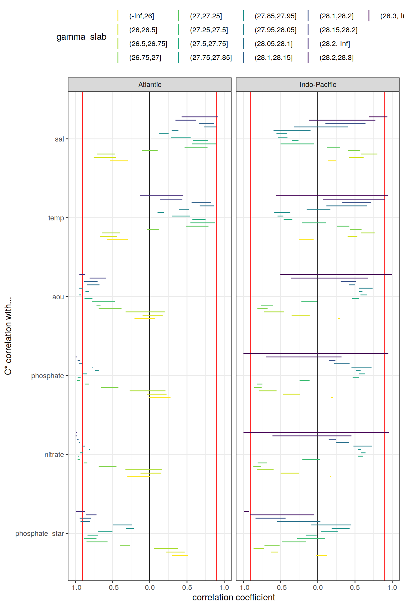

eMLR - assumption testing
Jens Daniel Müller and Donghe Zhu
07 June, 2021
Last updated: 2021-06-07
Checks: 7 0
Knit directory: emlr_mod_v_XXX/
This reproducible R Markdown analysis was created with workflowr (version 1.6.2). The Checks tab describes the reproducibility checks that were applied when the results were created. The Past versions tab lists the development history.
Great! Since the R Markdown file has been committed to the Git repository, you know the exact version of the code that produced these results.
Great job! The global environment was empty. Objects defined in the global environment can affect the analysis in your R Markdown file in unknown ways. For reproduciblity it’s best to always run the code in an empty environment.
The command set.seed(20200707) was run prior to running the code in the R Markdown file. Setting a seed ensures that any results that rely on randomness, e.g. subsampling or permutations, are reproducible.
Great job! Recording the operating system, R version, and package versions is critical for reproducibility.
Nice! There were no cached chunks for this analysis, so you can be confident that you successfully produced the results during this run.
Great job! Using relative paths to the files within your workflowr project makes it easier to run your code on other machines.
Great! You are using Git for version control. Tracking code development and connecting the code version to the results is critical for reproducibility.
The results in this page were generated with repository version c37cb62. See the Past versions tab to see a history of the changes made to the R Markdown and HTML files.
Note that you need to be careful to ensure that all relevant files for the analysis have been committed to Git prior to generating the results (you can use wflow_publish or wflow_git_commit). workflowr only checks the R Markdown file, but you know if there are other scripts or data files that it depends on. Below is the status of the Git repository when the results were generated:
Ignored files:
Ignored: .Rhistory
Ignored: .Rproj.user/
Untracked files:
Untracked: docs_GV_2021_5R_ann_standard/
Unstaged changes:
Modified: data/auxillary/params_local.rds
Note that any generated files, e.g. HTML, png, CSS, etc., are not included in this status report because it is ok for generated content to have uncommitted changes.
These are the previous versions of the repository in which changes were made to the R Markdown (analysis/eMLR_assumption_testing.Rmd) and HTML (docs/eMLR_assumption_testing.html) files. If you’ve configured a remote Git repository (see ?wflow_git_remote), click on the hyperlinks in the table below to view the files as they were in that past version.
| File | Version | Author | Date | Message |
|---|---|---|---|---|
| html | ed89970 | Donghe-Zhu | 2021-06-07 | Build site. |
| html | df37958 | Donghe-Zhu | 2021-06-07 | 1 |
| html | 812bf63 | Donghe-Zhu | 2021-06-06 | Build site. |
| html | 65c89c8 | Donghe-Zhu | 2021-06-06 | Build site. |
| html | 9baa3b2 | Donghe-Zhu | 2021-06-06 | debug |
| html | b7d99cf | Donghe-Zhu | 2021-06-06 | Build site. |
| html | 5d8fa90 | Donghe-Zhu | 2021-06-06 | Build site. |
| html | dbe2a95 | Donghe-Zhu | 2021-05-28 | Build site. |
| html | d50b039 | Donghe-Zhu | 2021-05-28 | Build site. |
| html | 441ebe5 | Donghe-Zhu | 2021-05-28 | Build site. |
| html | 6262ad3 | Donghe-Zhu | 2021-05-28 | Build site. |
| html | a61aa77 | Donghe-Zhu | 2021-05-28 | Build site. |
| html | b8dbce4 | Donghe-Zhu | 2021-05-28 | Build site. |
| html | 94a833e | Donghe-Zhu | 2021-05-27 | Build site. |
| html | 5e0bd64 | Donghe-Zhu | 2021-05-27 | Build site. |
| html | af1eadd | Donghe-Zhu | 2021-05-27 | Build site. |
| html | 9179bfe | Donghe-Zhu | 2021-05-27 | Build site. |
| html | 28cbe5e | Donghe-Zhu | 2021-05-27 | Build site. |
| html | a618f02 | Donghe-Zhu | 2021-05-27 | Build site. |
| html | 4623e38 | Donghe-Zhu | 2021-05-27 | Build site. |
| html | b81bb49 | Donghe-Zhu | 2021-05-27 | Build site. |
| html | 951e188 | Donghe-Zhu | 2021-05-27 | Build site. |
| html | e377833 | Donghe-Zhu | 2021-05-26 | Build site. |
| html | 2705a04 | Donghe-Zhu | 2021-03-28 | Build site. |
| html | cd5f759 | Donghe-Zhu | 2021-03-28 | Build site. |
| html | 75dda4d | Donghe-Zhu | 2021-03-27 | Build site. |
| html | 0b19f6e | Donghe-Zhu | 2021-03-27 | Build site. |
| html | e2704ca | Donghe-Zhu | 2021-03-27 | Build site. |
| html | 3061a0b | Donghe-Zhu | 2021-03-27 | Build site. |
| html | b883157 | Donghe-Zhu | 2021-03-27 | Build site. |
| html | 0c20513 | Donghe-Zhu | 2021-03-26 | Build site. |
| html | d19654d | Donghe-Zhu | 2021-03-26 | Build site. |
| html | 6c53dbf | Donghe-Zhu | 2021-03-25 | Build site. |
| html | 1914a11 | Donghe-Zhu | 2021-03-24 | Build site. |
| html | 8be810e | Donghe-Zhu | 2021-03-23 | Build site. |
| html | bf19764 | Donghe-Zhu | 2021-03-22 | Build site. |
| html | 3ec9d3d | Donghe-Zhu | 2021-03-22 | Build site. |
| html | 134ace1 | Donghe-Zhu | 2021-03-22 | Build site. |
| html | f6d70a4 | Donghe-Zhu | 2021-03-22 | Build site. |
| html | 183443b | Donghe-Zhu | 2021-03-21 | Build site. |
| html | 2e6976b | Donghe-Zhu | 2021-03-21 | Build site. |
| html | 51a42bd | Donghe-Zhu | 2021-03-16 | Build site. |
| html | f745381 | Donghe-Zhu | 2021-03-16 | Build site. |
| html | aecbf75 | Donghe-Zhu | 2021-03-14 | Build site. |
| html | 1b2a0c2 | Donghe-Zhu | 2021-03-14 | Build site. |
| html | 6733e48 | Donghe-Zhu | 2021-03-12 | Build site. |
| html | ba71e6a | Donghe-Zhu | 2021-03-12 | Build site. |
| html | 9dbf5bd | Donghe-Zhu | 2021-03-11 | Build site. |
| html | a49df30 | Donghe-Zhu | 2021-03-11 | Build site. |
| html | b3348a5 | Donghe-Zhu | 2021-03-11 | Build site. |
| html | 1c24ff7 | Donghe-Zhu | 2021-03-10 | Build site. |
| html | 94ce5a8 | Donghe-Zhu | 2021-03-10 | Build site. |
| html | db33928 | Donghe-Zhu | 2021-03-10 | Build site. |
| html | 3d1f470 | Donghe-Zhu | 2021-03-10 | Build site. |
| html | 9b7bc66 | Donghe-Zhu | 2021-03-10 | Build site. |
| html | 4168b43 | Donghe-Zhu | 2021-03-10 | Build site. |
| html | 5365f80 | Donghe-Zhu | 2021-03-10 | Build site. |
| html | 2b6c392 | Donghe-Zhu | 2021-03-10 | Build site. |
| html | 9f58753 | Donghe-Zhu | 2021-03-10 | Build site. |
| html | f2a7146 | Donghe-Zhu | 2021-03-10 | Build site. |
| html | fd528ed | Donghe-Zhu | 2021-03-10 | Build site. |
| html | 9d5a62c | Donghe-Zhu | 2021-03-10 | Build site. |
| html | 5d1e70b | Donghe-Zhu | 2021-03-10 | Build site. |
| html | 2093979 | Donghe-Zhu | 2021-03-10 | Build site. |
| html | b865899 | Donghe-Zhu | 2021-03-10 | Build site. |
| html | cc2a956 | Donghe-Zhu | 2021-03-10 | Build site. |
| html | 60689fb | Donghe-Zhu | 2021-03-10 | Build site. |
| html | 9230b52 | Donghe-Zhu | 2021-03-10 | Build site. |
| html | dba33c8 | Donghe-Zhu | 2021-03-09 | Build site. |
| html | 17f1c4a | Donghe-Zhu | 2021-03-09 | Build site. |
| html | c024d1a | Donghe-Zhu | 2021-03-09 | Build site. |
| html | 02f7242 | Donghe-Zhu | 2021-03-09 | Build site. |
| html | 6f50bc6 | Donghe-Zhu | 2021-03-09 | Build site. |
| html | 1691156 | Donghe-Zhu | 2021-03-08 | Build site. |
| html | c0ceaf8 | Donghe-Zhu | 2021-03-08 | Build site. |
| html | 058e0a1 | Donghe-Zhu | 2021-03-08 | Build site. |
| html | 112dea0 | Donghe-Zhu | 2021-03-08 | Build site. |
| html | 1843412 | Donghe-Zhu | 2021-03-08 | Build site. |
| html | 65b0cef | Donghe-Zhu | 2021-03-07 | Build site. |
| html | 4083a6c | Donghe-Zhu | 2021-03-07 | Build site. |
| html | 3fbbfa4 | Donghe-Zhu | 2021-03-07 | Build site. |
| html | 627c8fb | Donghe-Zhu | 2021-03-07 | Build site. |
| html | 3607f4d | Donghe-Zhu | 2021-03-07 | Build site. |
| html | 9ef3222 | Donghe-Zhu | 2021-03-05 | Build site. |
| html | 8c1e978 | Donghe-Zhu | 2021-03-05 | Build site. |
| html | 865f68c | Donghe-Zhu | 2021-03-05 | Build site. |
| html | ee69bc1 | Donghe-Zhu | 2021-03-05 | Build site. |
| html | a79291f | Donghe-Zhu | 2021-03-05 | Build site. |
| html | e8c6f30 | Donghe-Zhu | 2021-03-04 | Build site. |
| html | 59288fe | Donghe-Zhu | 2021-03-04 | Build site. |
| html | 731abc8 | Donghe-Zhu | 2021-03-04 | Build site. |
| html | e2a5a33 | Donghe-Zhu | 2021-03-04 | Build site. |
| html | c7892c1 | Donghe-Zhu | 2021-03-04 | Build site. |
| html | 924430b | Donghe-Zhu | 2021-03-03 | Build site. |
| html | 0d0bca1 | Donghe-Zhu | 2021-03-03 | Build site. |
| html | cb63c16 | Donghe-Zhu | 2021-03-03 | Build site. |
| html | ffda45a | Donghe-Zhu | 2021-03-03 | Build site. |
| html | 691ba81 | Donghe-Zhu | 2021-03-03 | Build site. |
| html | c5e45a2 | Donghe-Zhu | 2021-03-03 | Build site. |
| html | 89c3e58 | Donghe-Zhu | 2021-03-03 | Build site. |
| html | c407a50 | Donghe-Zhu | 2021-03-03 | Build site. |
| html | c911669 | Donghe-Zhu | 2021-03-03 | Build site. |
| html | b71c719 | Donghe-Zhu | 2021-03-01 | Build site. |
| html | 13666ca | Donghe-Zhu | 2021-03-01 | Build site. |
| html | c6e60fe | Donghe-Zhu | 2021-03-01 | Build site. |
| html | 7a388f7 | Donghe-Zhu | 2021-03-01 | Build site. |
| html | 799e913 | Donghe-Zhu | 2021-03-01 | Build site. |
| html | 66ff99f | Donghe-Zhu | 2021-03-01 | Build site. |
| html | ac9bb7a | Donghe-Zhu | 2021-02-28 | Build site. |
| html | efdc047 | Donghe-Zhu | 2021-02-28 | Build site. |
| html | e9a7418 | Donghe-Zhu | 2021-02-28 | Build site. |
| html | e152917 | Donghe-Zhu | 2021-02-28 | Build site. |
| html | feb991c | Donghe-Zhu | 2021-02-27 | Build site. |
| html | 287123c | Donghe-Zhu | 2021-02-27 | Build site. |
| html | 54d5b5b | Donghe-Zhu | 2021-02-27 | Build site. |
| html | 330f064 | Donghe-Zhu | 2021-02-27 | Build site. |
| html | adbc9bc | Donghe-Zhu | 2021-02-27 | Build site. |
| html | 5937141 | Donghe-Zhu | 2021-02-27 | Build site. |
| html | 4414bbf | Donghe-Zhu | 2021-02-27 | Build site. |
| html | a265efb | Donghe-Zhu | 2021-02-27 | Build site. |
| html | 19edd1e | Donghe-Zhu | 2021-02-27 | Build site. |
| html | f20483f | Donghe-Zhu | 2021-02-26 | Build site. |
| html | 6a2c7b3 | Donghe-Zhu | 2021-02-25 | Build site. |
| html | 02b976d | Donghe-Zhu | 2021-02-24 | Build site. |
| html | 354c224 | Donghe-Zhu | 2021-02-24 | Build site. |
| html | 1a0a88a | Donghe-Zhu | 2021-02-24 | Build site. |
| html | 57f701e | Donghe-Zhu | 2021-02-24 | Build site. |
| html | 06f3149 | Donghe-Zhu | 2021-02-16 | Build site. |
| html | 401eab3 | Donghe-Zhu | 2021-02-15 | Build site. |
| html | e3bba84 | Donghe-Zhu | 2021-02-15 | Build site. |
| html | 5dce4b1 | Donghe-Zhu | 2021-02-15 | Build site. |
| html | 4469a0c | Donghe-Zhu | 2021-02-13 | Build site. |
| html | 5ae6a69 | Donghe-Zhu | 2021-02-10 | Build site. |
| html | 05385dc | Donghe-Zhu | 2021-02-10 | Build site. |
| html | f791ae4 | Donghe-Zhu | 2021-02-09 | Build site. |
| html | f71ae34 | Donghe-Zhu | 2021-02-09 | Build site. |
| html | c011832 | Donghe-Zhu | 2021-02-09 | Build site. |
| html | a145fa7 | Donghe-Zhu | 2021-02-09 | Build site. |
| html | c344e42 | Donghe-Zhu | 2021-02-08 | Build site. |
| html | 2f095d7 | Donghe-Zhu | 2021-02-07 | Build site. |
| html | 2305044 | Donghe-Zhu | 2021-02-07 | Build site. |
| html | 1fad5f1 | Donghe-Zhu | 2021-02-07 | Build site. |
| html | ca03c39 | Donghe-Zhu | 2021-02-07 | Build site. |
| html | e2ffc14 | Donghe-Zhu | 2021-02-05 | Build site. |
| Rmd | 55cdfe6 | Donghe-Zhu | 2021-02-05 | local rebuild |
| html | cd7c52c | Donghe-Zhu | 2021-02-04 | Build site. |
| html | bcf84f4 | Donghe-Zhu | 2021-02-02 | Build site. |
| html | a518739 | Donghe-Zhu | 2021-02-01 | Build site. |
| html | 61666de | Donghe-Zhu | 2021-01-31 | Build site. |
| html | 865b582 | Donghe-Zhu | 2021-01-31 | Build site. |
| html | 3e68089 | Donghe-Zhu | 2021-01-31 | Build site. |
| html | ecf335c | Donghe-Zhu | 2021-01-31 | Build site. |
| html | a618965 | Donghe-Zhu | 2021-01-31 | Build site. |
| html | 59e006e | Donghe-Zhu | 2021-01-31 | Build site. |
| html | a1c8f87 | Donghe-Zhu | 2021-01-31 | Build site. |
| html | ae5c18f | Donghe-Zhu | 2021-01-31 | Build site. |
| html | b50fe52 | Donghe-Zhu | 2021-01-31 | Build site. |
| html | ac99ae5 | jens-daniel-mueller | 2021-01-29 | code review |
| html | b5bdcaf | Donghe-Zhu | 2021-01-29 | Build site. |
| html | 442010d | Donghe-Zhu | 2021-01-29 | Build site. |
| html | 372adf5 | Donghe-Zhu | 2021-01-29 | Build site. |
| html | af8788e | Donghe-Zhu | 2021-01-29 | Build site. |
| html | 21c91c9 | Donghe-Zhu | 2021-01-29 | Build site. |
| html | eded038 | Donghe-Zhu | 2021-01-29 | Build site. |
| html | 541d4dd | Donghe-Zhu | 2021-01-29 | Build site. |
| html | 6a75576 | Donghe-Zhu | 2021-01-28 | Build site. |
| html | 16fba40 | Donghe-Zhu | 2021-01-28 | Build site. |
| html | 12bc567 | Donghe-Zhu | 2021-01-27 | Build site. |
| html | ceed31b | Donghe-Zhu | 2021-01-27 | Build site. |
| html | 342402d | Donghe-Zhu | 2021-01-27 | Build site. |
| html | 5bad5c2 | Donghe-Zhu | 2021-01-27 | Build site. |
| html | 61efb56 | Donghe-Zhu | 2021-01-25 | Build site. |
| html | 48f638e | Donghe-Zhu | 2021-01-25 | Build site. |
| html | c1cec47 | Donghe-Zhu | 2021-01-25 | Build site. |
| html | 05ffb0c | Donghe-Zhu | 2021-01-25 | Build site. |
| html | 8b97165 | Donghe-Zhu | 2021-01-25 | Build site. |
| html | c569946 | Donghe-Zhu | 2021-01-24 | Build site. |
| html | a2f0d56 | Donghe-Zhu | 2021-01-23 | Build site. |
| html | 28509fc | Donghe-Zhu | 2021-01-23 | Build site. |
| html | 4c28e4a | Donghe-Zhu | 2021-01-22 | Build site. |
| html | 24cc264 | jens-daniel-mueller | 2021-01-22 | cleaned /docs before creating copies |
| html | 88eb28f | Donghe-Zhu | 2021-01-21 | Build site. |
| html | 2679490 | Donghe-Zhu | 2021-01-21 | Build site. |
| html | 7891955 | Donghe-Zhu | 2021-01-21 | Build site. |
| html | d4cf1cb | Donghe-Zhu | 2021-01-21 | Build site. |
| html | 1f3e5b6 | jens-daniel-mueller | 2021-01-20 | Build site. |
| html | 0e7bdf1 | jens-daniel-mueller | 2021-01-15 | cleaning template repository |
| html | 73cbef3 | jens-daniel-mueller | 2021-01-15 | Build site. |
| html | 4571843 | jens-daniel-mueller | 2021-01-14 | revision and html deleted for template copying |
| html | 23151cd | jens-daniel-mueller | 2021-01-14 | Build site. |
| html | b3564aa | jens-daniel-mueller | 2021-01-14 | Build site. |
| html | 8d032c3 | jens-daniel-mueller | 2021-01-14 | Build site. |
| html | 022871c | Donghe-Zhu | 2021-01-13 | Build site. |
| Rmd | d44f36f | Donghe-Zhu | 2021-01-13 | reorder analysis final |
| html | 17dee1d | jens-daniel-mueller | 2021-01-13 | Build site. |
| html | a076226 | Donghe-Zhu | 2021-01-11 | Build site. |
| Rmd | 52eff18 | Donghe-Zhu | 2021-01-09 | Implemet model_run and subsetting |
| html | 7cdea0c | jens-daniel-mueller | 2021-01-06 | Build site. |
| html | fa85b93 | jens-daniel-mueller | 2021-01-06 | Build site. |
| html | e5cb81a | Donghe-Zhu | 2021-01-05 | Build site. |
| html | a499f10 | Donghe-Zhu | 2021-01-05 | Build site. |
| Rmd | 715bdb4 | Donghe-Zhu | 2021-01-02 | model modification |
| html | fb8a752 | Donghe-Zhu | 2020-12-23 | Build site. |
| Rmd | 82e3c9c | Donghe-Zhu | 2020-12-23 | first build after creating model template |
| html | 8fae0b2 | Donghe-Zhu | 2020-12-21 | Build site. |
| html | c8b76b3 | jens-daniel-mueller | 2020-12-19 | Build site. |
| Rmd | b5fedce | jens-daniel-mueller | 2020-12-19 | first build after creating model template |
| Rmd | 8e8abf5 | Jens Müller | 2020-12-18 | Initial commit |
1 Required data
Required are:
- cleaned and prepared GLODAP-based synthetic cmorized model subsetting file
GLODAP <-
read_csv(paste(path_version_data,
"GLODAPv2.2020_MLR_fitting_ready.csv",
sep = ""))2 Predictor correlation
The correlation between:
- pairs of seven potential predictor variables and
- C* and seven potential predictor variables
were investigated based on:
- property-property plots and
- calculated correlation coefficients.
2.1 Correlation plots
For an overview, a random subset of data from all eras was plotted separately for both basins, with color indicating neutral density slabs (high density = dark-purple color).
for (i_basin in unique(GLODAP$basin)) {
# i_basin <- unique(GLODAP$basin)[1]
print(
GLODAP %>%
filter(basin == i_basin) %>%
sample_frac(0.05) %>%
ggpairs(columns = c(params_local$MLR_target,
params_local$MLR_predictors),
upper = "blank",
ggplot2::aes(col = gamma_slab, fill = gamma_slab, alpha = 0.01)) +
scale_fill_viridis_d(direction = -1) +
scale_color_viridis_d(direction = -1) +
labs(title = paste("Basin:", i_basin ,"| era: all | subsample size: 5 % of",
nrow(GLODAP %>% filter(basin == i_basin))))
)
}
| Version | Author | Date |
|---|---|---|
| ed89970 | Donghe-Zhu | 2021-06-07 |
| df37958 | Donghe-Zhu | 2021-06-07 |
| 812bf63 | Donghe-Zhu | 2021-06-06 |
| 65c89c8 | Donghe-Zhu | 2021-06-06 |
| 9baa3b2 | Donghe-Zhu | 2021-06-06 |
| b7d99cf | Donghe-Zhu | 2021-06-06 |
| 5d8fa90 | Donghe-Zhu | 2021-06-06 |
| dbe2a95 | Donghe-Zhu | 2021-05-28 |
| d50b039 | Donghe-Zhu | 2021-05-28 |
| 441ebe5 | Donghe-Zhu | 2021-05-28 |
| 6262ad3 | Donghe-Zhu | 2021-05-28 |
| a61aa77 | Donghe-Zhu | 2021-05-28 |
| b8dbce4 | Donghe-Zhu | 2021-05-28 |
| 94a833e | Donghe-Zhu | 2021-05-27 |
| 5e0bd64 | Donghe-Zhu | 2021-05-27 |
| af1eadd | Donghe-Zhu | 2021-05-27 |
| 9179bfe | Donghe-Zhu | 2021-05-27 |
| 28cbe5e | Donghe-Zhu | 2021-05-27 |
| a618f02 | Donghe-Zhu | 2021-05-27 |
| 4623e38 | Donghe-Zhu | 2021-05-27 |
| b81bb49 | Donghe-Zhu | 2021-05-27 |
| 951e188 | Donghe-Zhu | 2021-05-27 |
| e377833 | Donghe-Zhu | 2021-05-26 |
| 2705a04 | Donghe-Zhu | 2021-03-28 |
| cd5f759 | Donghe-Zhu | 2021-03-28 |
| 75dda4d | Donghe-Zhu | 2021-03-27 |
| 0b19f6e | Donghe-Zhu | 2021-03-27 |
| e2704ca | Donghe-Zhu | 2021-03-27 |
| 3061a0b | Donghe-Zhu | 2021-03-27 |
| b883157 | Donghe-Zhu | 2021-03-27 |
| d19654d | Donghe-Zhu | 2021-03-26 |
| 1914a11 | Donghe-Zhu | 2021-03-24 |
| 8be810e | Donghe-Zhu | 2021-03-23 |
| bf19764 | Donghe-Zhu | 2021-03-22 |
| 3ec9d3d | Donghe-Zhu | 2021-03-22 |
| 134ace1 | Donghe-Zhu | 2021-03-22 |
| f6d70a4 | Donghe-Zhu | 2021-03-22 |
| 183443b | Donghe-Zhu | 2021-03-21 |
| 2e6976b | Donghe-Zhu | 2021-03-21 |
| 51a42bd | Donghe-Zhu | 2021-03-16 |
| f745381 | Donghe-Zhu | 2021-03-16 |
| aecbf75 | Donghe-Zhu | 2021-03-14 |
| 1b2a0c2 | Donghe-Zhu | 2021-03-14 |
| 6733e48 | Donghe-Zhu | 2021-03-12 |
| ba71e6a | Donghe-Zhu | 2021-03-12 |
| 9dbf5bd | Donghe-Zhu | 2021-03-11 |
| a49df30 | Donghe-Zhu | 2021-03-11 |
| b3348a5 | Donghe-Zhu | 2021-03-11 |
| 1c24ff7 | Donghe-Zhu | 2021-03-10 |
| 94ce5a8 | Donghe-Zhu | 2021-03-10 |
| db33928 | Donghe-Zhu | 2021-03-10 |
| 3d1f470 | Donghe-Zhu | 2021-03-10 |
| 9b7bc66 | Donghe-Zhu | 2021-03-10 |
| 5365f80 | Donghe-Zhu | 2021-03-10 |
| 2b6c392 | Donghe-Zhu | 2021-03-10 |
| 9f58753 | Donghe-Zhu | 2021-03-10 |
| 9d5a62c | Donghe-Zhu | 2021-03-10 |
| 5d1e70b | Donghe-Zhu | 2021-03-10 |
| 2093979 | Donghe-Zhu | 2021-03-10 |
| cc2a956 | Donghe-Zhu | 2021-03-10 |
| 17f1c4a | Donghe-Zhu | 2021-03-09 |
| 02f7242 | Donghe-Zhu | 2021-03-09 |
| 1691156 | Donghe-Zhu | 2021-03-08 |
| c0ceaf8 | Donghe-Zhu | 2021-03-08 |
| 112dea0 | Donghe-Zhu | 2021-03-08 |
| 1843412 | Donghe-Zhu | 2021-03-08 |
| 3fbbfa4 | Donghe-Zhu | 2021-03-07 |
| 627c8fb | Donghe-Zhu | 2021-03-07 |
| 8c1e978 | Donghe-Zhu | 2021-03-05 |
| 865f68c | Donghe-Zhu | 2021-03-05 |
| ee69bc1 | Donghe-Zhu | 2021-03-05 |
| a79291f | Donghe-Zhu | 2021-03-05 |
| e8c6f30 | Donghe-Zhu | 2021-03-04 |
| 59288fe | Donghe-Zhu | 2021-03-04 |
| 731abc8 | Donghe-Zhu | 2021-03-04 |
| e2a5a33 | Donghe-Zhu | 2021-03-04 |
| c7892c1 | Donghe-Zhu | 2021-03-04 |
| 924430b | Donghe-Zhu | 2021-03-03 |
| 0d0bca1 | Donghe-Zhu | 2021-03-03 |
| cb63c16 | Donghe-Zhu | 2021-03-03 |
| ffda45a | Donghe-Zhu | 2021-03-03 |
| 691ba81 | Donghe-Zhu | 2021-03-03 |
| c5e45a2 | Donghe-Zhu | 2021-03-03 |
| 89c3e58 | Donghe-Zhu | 2021-03-03 |
| c911669 | Donghe-Zhu | 2021-03-03 |
| 13666ca | Donghe-Zhu | 2021-03-01 |
| 7a388f7 | Donghe-Zhu | 2021-03-01 |
| 799e913 | Donghe-Zhu | 2021-03-01 |
| 66ff99f | Donghe-Zhu | 2021-03-01 |
| ac9bb7a | Donghe-Zhu | 2021-02-28 |
| efdc047 | Donghe-Zhu | 2021-02-28 |
| e9a7418 | Donghe-Zhu | 2021-02-28 |
| 54d5b5b | Donghe-Zhu | 2021-02-27 |
| 330f064 | Donghe-Zhu | 2021-02-27 |
| 5937141 | Donghe-Zhu | 2021-02-27 |
| 4414bbf | Donghe-Zhu | 2021-02-27 |
| a265efb | Donghe-Zhu | 2021-02-27 |
| 19edd1e | Donghe-Zhu | 2021-02-27 |
| f20483f | Donghe-Zhu | 2021-02-26 |
| 6a2c7b3 | Donghe-Zhu | 2021-02-25 |
| 354c224 | Donghe-Zhu | 2021-02-24 |
| 1a0a88a | Donghe-Zhu | 2021-02-24 |
| 57f701e | Donghe-Zhu | 2021-02-24 |
| 06f3149 | Donghe-Zhu | 2021-02-16 |
| 5dce4b1 | Donghe-Zhu | 2021-02-15 |
| 4469a0c | Donghe-Zhu | 2021-02-13 |
| 5ae6a69 | Donghe-Zhu | 2021-02-10 |
| 05385dc | Donghe-Zhu | 2021-02-10 |
| f791ae4 | Donghe-Zhu | 2021-02-09 |
| f71ae34 | Donghe-Zhu | 2021-02-09 |
| a145fa7 | Donghe-Zhu | 2021-02-09 |
| c344e42 | Donghe-Zhu | 2021-02-08 |
| 1fad5f1 | Donghe-Zhu | 2021-02-07 |
| ca03c39 | Donghe-Zhu | 2021-02-07 |
| cd7c52c | Donghe-Zhu | 2021-02-04 |
| bcf84f4 | Donghe-Zhu | 2021-02-02 |
| 865b582 | Donghe-Zhu | 2021-01-31 |
| 3e68089 | Donghe-Zhu | 2021-01-31 |
| ecf335c | Donghe-Zhu | 2021-01-31 |
| a618965 | Donghe-Zhu | 2021-01-31 |
| 59e006e | Donghe-Zhu | 2021-01-31 |
| a1c8f87 | Donghe-Zhu | 2021-01-31 |
| b50fe52 | Donghe-Zhu | 2021-01-31 |
| ac99ae5 | jens-daniel-mueller | 2021-01-29 |
| b5bdcaf | Donghe-Zhu | 2021-01-29 |
| 372adf5 | Donghe-Zhu | 2021-01-29 |
| af8788e | Donghe-Zhu | 2021-01-29 |
| 21c91c9 | Donghe-Zhu | 2021-01-29 |
| eded038 | Donghe-Zhu | 2021-01-29 |
| 541d4dd | Donghe-Zhu | 2021-01-29 |
| 6a75576 | Donghe-Zhu | 2021-01-28 |
| 16fba40 | Donghe-Zhu | 2021-01-28 |
| 12bc567 | Donghe-Zhu | 2021-01-27 |
| ceed31b | Donghe-Zhu | 2021-01-27 |
| 342402d | Donghe-Zhu | 2021-01-27 |
| 5bad5c2 | Donghe-Zhu | 2021-01-27 |
| 61efb56 | Donghe-Zhu | 2021-01-25 |
| 48f638e | Donghe-Zhu | 2021-01-25 |
| c1cec47 | Donghe-Zhu | 2021-01-25 |
| 05ffb0c | Donghe-Zhu | 2021-01-25 |
| 8b97165 | Donghe-Zhu | 2021-01-25 |
| c569946 | Donghe-Zhu | 2021-01-24 |
| a2f0d56 | Donghe-Zhu | 2021-01-23 |
| 28509fc | Donghe-Zhu | 2021-01-23 |
| 4c28e4a | Donghe-Zhu | 2021-01-22 |
| 24cc264 | jens-daniel-mueller | 2021-01-22 |
| 7891955 | Donghe-Zhu | 2021-01-21 |
| d4cf1cb | Donghe-Zhu | 2021-01-21 |
| 1f3e5b6 | jens-daniel-mueller | 2021-01-20 |
| 0e7bdf1 | jens-daniel-mueller | 2021-01-15 |
| 4571843 | jens-daniel-mueller | 2021-01-14 |
| b3564aa | jens-daniel-mueller | 2021-01-14 |
| 8d032c3 | jens-daniel-mueller | 2021-01-14 |
| 17dee1d | jens-daniel-mueller | 2021-01-13 |
| 7cdea0c | jens-daniel-mueller | 2021-01-06 |
| fa85b93 | jens-daniel-mueller | 2021-01-06 |
| e5cb81a | Donghe-Zhu | 2021-01-05 |
| a499f10 | Donghe-Zhu | 2021-01-05 |
| fb8a752 | Donghe-Zhu | 2020-12-23 |
| 8fae0b2 | Donghe-Zhu | 2020-12-21 |
| c8b76b3 | jens-daniel-mueller | 2020-12-19 |

| Version | Author | Date |
|---|---|---|
| ed89970 | Donghe-Zhu | 2021-06-07 |
| df37958 | Donghe-Zhu | 2021-06-07 |
| 812bf63 | Donghe-Zhu | 2021-06-06 |
| 65c89c8 | Donghe-Zhu | 2021-06-06 |
| 9baa3b2 | Donghe-Zhu | 2021-06-06 |
| b7d99cf | Donghe-Zhu | 2021-06-06 |
| 5d8fa90 | Donghe-Zhu | 2021-06-06 |
| dbe2a95 | Donghe-Zhu | 2021-05-28 |
| d50b039 | Donghe-Zhu | 2021-05-28 |
| 441ebe5 | Donghe-Zhu | 2021-05-28 |
| 6262ad3 | Donghe-Zhu | 2021-05-28 |
| a61aa77 | Donghe-Zhu | 2021-05-28 |
| b8dbce4 | Donghe-Zhu | 2021-05-28 |
| 94a833e | Donghe-Zhu | 2021-05-27 |
| 5e0bd64 | Donghe-Zhu | 2021-05-27 |
| af1eadd | Donghe-Zhu | 2021-05-27 |
| 9179bfe | Donghe-Zhu | 2021-05-27 |
| 28cbe5e | Donghe-Zhu | 2021-05-27 |
| a618f02 | Donghe-Zhu | 2021-05-27 |
| 4623e38 | Donghe-Zhu | 2021-05-27 |
| b81bb49 | Donghe-Zhu | 2021-05-27 |
| 951e188 | Donghe-Zhu | 2021-05-27 |
| e377833 | Donghe-Zhu | 2021-05-26 |
| 2705a04 | Donghe-Zhu | 2021-03-28 |
| cd5f759 | Donghe-Zhu | 2021-03-28 |
| 75dda4d | Donghe-Zhu | 2021-03-27 |
| 0b19f6e | Donghe-Zhu | 2021-03-27 |
| e2704ca | Donghe-Zhu | 2021-03-27 |
| 3061a0b | Donghe-Zhu | 2021-03-27 |
| b883157 | Donghe-Zhu | 2021-03-27 |
| d19654d | Donghe-Zhu | 2021-03-26 |
| 1914a11 | Donghe-Zhu | 2021-03-24 |
| 8be810e | Donghe-Zhu | 2021-03-23 |
| bf19764 | Donghe-Zhu | 2021-03-22 |
| 3ec9d3d | Donghe-Zhu | 2021-03-22 |
| 134ace1 | Donghe-Zhu | 2021-03-22 |
| f6d70a4 | Donghe-Zhu | 2021-03-22 |
| 183443b | Donghe-Zhu | 2021-03-21 |
| 2e6976b | Donghe-Zhu | 2021-03-21 |
| 51a42bd | Donghe-Zhu | 2021-03-16 |
| f745381 | Donghe-Zhu | 2021-03-16 |
| aecbf75 | Donghe-Zhu | 2021-03-14 |
| 1b2a0c2 | Donghe-Zhu | 2021-03-14 |
| 6733e48 | Donghe-Zhu | 2021-03-12 |
| ba71e6a | Donghe-Zhu | 2021-03-12 |
| 9dbf5bd | Donghe-Zhu | 2021-03-11 |
| a49df30 | Donghe-Zhu | 2021-03-11 |
| b3348a5 | Donghe-Zhu | 2021-03-11 |
| 1c24ff7 | Donghe-Zhu | 2021-03-10 |
| 94ce5a8 | Donghe-Zhu | 2021-03-10 |
| db33928 | Donghe-Zhu | 2021-03-10 |
| 3d1f470 | Donghe-Zhu | 2021-03-10 |
| 9b7bc66 | Donghe-Zhu | 2021-03-10 |
| 5365f80 | Donghe-Zhu | 2021-03-10 |
| 9d5a62c | Donghe-Zhu | 2021-03-10 |
| 5d1e70b | Donghe-Zhu | 2021-03-10 |
| 2093979 | Donghe-Zhu | 2021-03-10 |
| cc2a956 | Donghe-Zhu | 2021-03-10 |
| 17f1c4a | Donghe-Zhu | 2021-03-09 |
| 02f7242 | Donghe-Zhu | 2021-03-09 |
| 1691156 | Donghe-Zhu | 2021-03-08 |
| c0ceaf8 | Donghe-Zhu | 2021-03-08 |
| 058e0a1 | Donghe-Zhu | 2021-03-08 |
| 112dea0 | Donghe-Zhu | 2021-03-08 |
| 1843412 | Donghe-Zhu | 2021-03-08 |
| 3fbbfa4 | Donghe-Zhu | 2021-03-07 |
| 627c8fb | Donghe-Zhu | 2021-03-07 |
| 8c1e978 | Donghe-Zhu | 2021-03-05 |
| 865f68c | Donghe-Zhu | 2021-03-05 |
| ee69bc1 | Donghe-Zhu | 2021-03-05 |
| a79291f | Donghe-Zhu | 2021-03-05 |
| e8c6f30 | Donghe-Zhu | 2021-03-04 |
| 59288fe | Donghe-Zhu | 2021-03-04 |
| 731abc8 | Donghe-Zhu | 2021-03-04 |
| e2a5a33 | Donghe-Zhu | 2021-03-04 |
| c7892c1 | Donghe-Zhu | 2021-03-04 |
| 924430b | Donghe-Zhu | 2021-03-03 |
| 0d0bca1 | Donghe-Zhu | 2021-03-03 |
| cb63c16 | Donghe-Zhu | 2021-03-03 |
| 691ba81 | Donghe-Zhu | 2021-03-03 |
| c5e45a2 | Donghe-Zhu | 2021-03-03 |
| 89c3e58 | Donghe-Zhu | 2021-03-03 |
| c911669 | Donghe-Zhu | 2021-03-03 |
| 13666ca | Donghe-Zhu | 2021-03-01 |
| 7a388f7 | Donghe-Zhu | 2021-03-01 |
| 799e913 | Donghe-Zhu | 2021-03-01 |
| 66ff99f | Donghe-Zhu | 2021-03-01 |
| ac9bb7a | Donghe-Zhu | 2021-02-28 |
| efdc047 | Donghe-Zhu | 2021-02-28 |
| e9a7418 | Donghe-Zhu | 2021-02-28 |
| 54d5b5b | Donghe-Zhu | 2021-02-27 |
| 330f064 | Donghe-Zhu | 2021-02-27 |
| 5937141 | Donghe-Zhu | 2021-02-27 |
| 4414bbf | Donghe-Zhu | 2021-02-27 |
| a265efb | Donghe-Zhu | 2021-02-27 |
| 19edd1e | Donghe-Zhu | 2021-02-27 |
| f20483f | Donghe-Zhu | 2021-02-26 |
| 6a2c7b3 | Donghe-Zhu | 2021-02-25 |
| 354c224 | Donghe-Zhu | 2021-02-24 |
| 1a0a88a | Donghe-Zhu | 2021-02-24 |
| 57f701e | Donghe-Zhu | 2021-02-24 |
| 06f3149 | Donghe-Zhu | 2021-02-16 |
| 5dce4b1 | Donghe-Zhu | 2021-02-15 |
| 4469a0c | Donghe-Zhu | 2021-02-13 |
| 5ae6a69 | Donghe-Zhu | 2021-02-10 |
| 05385dc | Donghe-Zhu | 2021-02-10 |
| f791ae4 | Donghe-Zhu | 2021-02-09 |
| f71ae34 | Donghe-Zhu | 2021-02-09 |
| a145fa7 | Donghe-Zhu | 2021-02-09 |
| c344e42 | Donghe-Zhu | 2021-02-08 |
| 1fad5f1 | Donghe-Zhu | 2021-02-07 |
| ca03c39 | Donghe-Zhu | 2021-02-07 |
| cd7c52c | Donghe-Zhu | 2021-02-04 |
| bcf84f4 | Donghe-Zhu | 2021-02-02 |
| 865b582 | Donghe-Zhu | 2021-01-31 |
| 3e68089 | Donghe-Zhu | 2021-01-31 |
| ecf335c | Donghe-Zhu | 2021-01-31 |
| a618965 | Donghe-Zhu | 2021-01-31 |
| 59e006e | Donghe-Zhu | 2021-01-31 |
| a1c8f87 | Donghe-Zhu | 2021-01-31 |
| ae5c18f | Donghe-Zhu | 2021-01-31 |
| b50fe52 | Donghe-Zhu | 2021-01-31 |
| ac99ae5 | jens-daniel-mueller | 2021-01-29 |
| b5bdcaf | Donghe-Zhu | 2021-01-29 |
| 372adf5 | Donghe-Zhu | 2021-01-29 |
| af8788e | Donghe-Zhu | 2021-01-29 |
| 21c91c9 | Donghe-Zhu | 2021-01-29 |
| eded038 | Donghe-Zhu | 2021-01-29 |
| 541d4dd | Donghe-Zhu | 2021-01-29 |
| 6a75576 | Donghe-Zhu | 2021-01-28 |
| 16fba40 | Donghe-Zhu | 2021-01-28 |
| 12bc567 | Donghe-Zhu | 2021-01-27 |
| ceed31b | Donghe-Zhu | 2021-01-27 |
| 342402d | Donghe-Zhu | 2021-01-27 |
| 5bad5c2 | Donghe-Zhu | 2021-01-27 |
| 61efb56 | Donghe-Zhu | 2021-01-25 |
| 48f638e | Donghe-Zhu | 2021-01-25 |
| c1cec47 | Donghe-Zhu | 2021-01-25 |
| 05ffb0c | Donghe-Zhu | 2021-01-25 |
| 8b97165 | Donghe-Zhu | 2021-01-25 |
| c569946 | Donghe-Zhu | 2021-01-24 |
| a2f0d56 | Donghe-Zhu | 2021-01-23 |
| 28509fc | Donghe-Zhu | 2021-01-23 |
| 4c28e4a | Donghe-Zhu | 2021-01-22 |
| 24cc264 | jens-daniel-mueller | 2021-01-22 |
| 7891955 | Donghe-Zhu | 2021-01-21 |
| d4cf1cb | Donghe-Zhu | 2021-01-21 |
| 1f3e5b6 | jens-daniel-mueller | 2021-01-20 |
| 0e7bdf1 | jens-daniel-mueller | 2021-01-15 |
| 4571843 | jens-daniel-mueller | 2021-01-14 |
| b3564aa | jens-daniel-mueller | 2021-01-14 |
| 8d032c3 | jens-daniel-mueller | 2021-01-14 |
| 17dee1d | jens-daniel-mueller | 2021-01-13 |
| 7cdea0c | jens-daniel-mueller | 2021-01-06 |
| fa85b93 | jens-daniel-mueller | 2021-01-06 |
| e5cb81a | Donghe-Zhu | 2021-01-05 |
| a499f10 | Donghe-Zhu | 2021-01-05 |
| fb8a752 | Donghe-Zhu | 2020-12-23 |
| 8fae0b2 | Donghe-Zhu | 2020-12-21 |
| c8b76b3 | jens-daniel-mueller | 2020-12-19 |

| Version | Author | Date |
|---|---|---|
| ed89970 | Donghe-Zhu | 2021-06-07 |
| 9179bfe | Donghe-Zhu | 2021-05-27 |
| 28cbe5e | Donghe-Zhu | 2021-05-27 |
| a618f02 | Donghe-Zhu | 2021-05-27 |
| 75dda4d | Donghe-Zhu | 2021-03-27 |
| 0b19f6e | Donghe-Zhu | 2021-03-27 |
| 3061a0b | Donghe-Zhu | 2021-03-27 |
| b883157 | Donghe-Zhu | 2021-03-27 |
| 1914a11 | Donghe-Zhu | 2021-03-24 |
| 8be810e | Donghe-Zhu | 2021-03-23 |
| bf19764 | Donghe-Zhu | 2021-03-22 |
| b3348a5 | Donghe-Zhu | 2021-03-11 |
| 1c24ff7 | Donghe-Zhu | 2021-03-10 |
| 94ce5a8 | Donghe-Zhu | 2021-03-10 |
| db33928 | Donghe-Zhu | 2021-03-10 |
| 3d1f470 | Donghe-Zhu | 2021-03-10 |
| 9b7bc66 | Donghe-Zhu | 2021-03-10 |
| 5365f80 | Donghe-Zhu | 2021-03-10 |
| cc2a956 | Donghe-Zhu | 2021-03-10 |
| 17f1c4a | Donghe-Zhu | 2021-03-09 |
| 02f7242 | Donghe-Zhu | 2021-03-09 |
| 1691156 | Donghe-Zhu | 2021-03-08 |
| c0ceaf8 | Donghe-Zhu | 2021-03-08 |
| 3fbbfa4 | Donghe-Zhu | 2021-03-07 |
| 627c8fb | Donghe-Zhu | 2021-03-07 |
| 19edd1e | Donghe-Zhu | 2021-02-27 |
| f20483f | Donghe-Zhu | 2021-02-26 |
| 57f701e | Donghe-Zhu | 2021-02-24 |
| 06f3149 | Donghe-Zhu | 2021-02-16 |
| 4469a0c | Donghe-Zhu | 2021-02-13 |
| 5ae6a69 | Donghe-Zhu | 2021-02-10 |
| a145fa7 | Donghe-Zhu | 2021-02-09 |
| c344e42 | Donghe-Zhu | 2021-02-08 |
| 1fad5f1 | Donghe-Zhu | 2021-02-07 |
| 59e006e | Donghe-Zhu | 2021-01-31 |
| a1c8f87 | Donghe-Zhu | 2021-01-31 |
| ae5c18f | Donghe-Zhu | 2021-01-31 |
| 16fba40 | Donghe-Zhu | 2021-01-28 |
| 12bc567 | Donghe-Zhu | 2021-01-27 |
| ceed31b | Donghe-Zhu | 2021-01-27 |
| 61efb56 | Donghe-Zhu | 2021-01-25 |
| 48f638e | Donghe-Zhu | 2021-01-25 |
| a2f0d56 | Donghe-Zhu | 2021-01-23 |
| 28509fc | Donghe-Zhu | 2021-01-23 |
| 4c28e4a | Donghe-Zhu | 2021-01-22 |
| e5cb81a | Donghe-Zhu | 2021-01-05 |
| a499f10 | Donghe-Zhu | 2021-01-05 |
| fb8a752 | Donghe-Zhu | 2020-12-23 |
| 8fae0b2 | Donghe-Zhu | 2020-12-21 |
| c8b76b3 | jens-daniel-mueller | 2020-12-19 |
Individual correlation plots for each basin, era and neutral density (gamma) slab are available at:
/nfs/kryo/work/jenmueller/emlr_cant/model/v_XXX/figures/Observations_correlation/
if (params_local$plot_all_figures == "y") {
for (i_basin in unique(GLODAP$basin)) {
for (i_era in unique(GLODAP$era)) {
#i_basin <- unique(GLODAP$basin)[1]
#i_era <- unique(GLODAP$era)[1]
GLODAP_basin_era <- GLODAP %>%
filter(basin == i_basin,
era == i_era)
for (i_gamma_slab in unique(GLODAP_basin_era$gamma_slab)) {
#i_gamma_slab <- unique(GLODAP_basin_era$gamma_slab)[14]
GLODAP_basin_era_slab <- GLODAP_basin_era %>%
filter(gamma_slab == i_gamma_slab)
if (nrow(GLODAP_basin_era_slab) > 2) {
GLODAP_highlight <- GLODAP_basin_era %>%
mutate(gamma_highlight = if_else(gamma_slab == i_gamma_slab,
"in", "out")) %>%
arrange(desc(gamma_highlight))
p <- GLODAP_highlight %>%
ggpairs(
columns = c(
params_local$MLR_target,
params_local$MLR_predictors
),
ggplot2::aes(
col = gamma_highlight,
fill = gamma_highlight,
alpha = 0.01
)
) +
scale_fill_manual(values = c("red", "grey")) +
scale_color_manual(values = c("red", "grey")) +
labs(
title = paste(
i_era,
"|",
i_basin,
"| Gamma slab",
i_gamma_slab,
"| # obs total",
nrow(GLODAP_basin_era),
"| # obs slab",
nrow(GLODAP_highlight %>%
filter(gamma_highlight == "in"))
)
)
png(
filename = paste(
path_version_figures,
"Observations_correlation/",
paste(
"Predictor_correlation",
i_era,
i_basin,
i_gamma_slab,
".png",
sep = "_"
),
sep = ""
),
width = 12,
height = 12,
units = "in",
res = 300
)
print(p)
dev.off()
}
}
}
}
rm(GLODAP_basin_era, GLODAP_basin_era_slab)
}2.2 Correlation assessment
2.2.1 Calculation of correlation coeffcients
Correlation coefficients were calculated individually within each slabs, era and basin.
for (i_basin in unique(GLODAP$basin)) {
for (i_era in unique(GLODAP$era)) {
# i_basin <- unique(GLODAP$basin)[1]
# i_era <- unique(GLODAP$era)[1]
GLODAP_basin_era <- GLODAP %>%
filter(basin == i_basin,
era == i_era) %>%
select(basin,
era,
gamma_slab,
params_local$MLR_target,
params_local$MLR_predictors)
for (i_gamma_slab in unique(GLODAP_basin_era$gamma_slab)) {
# i_gamma_slab <- unique(GLODAP_basin_era$gamma_slab)[5]
print(i_gamma_slab)
GLODAP_basin_era_slab <- GLODAP_basin_era %>%
filter(gamma_slab == i_gamma_slab)
# calculate correlation table
cor_target_predictor_temp <- GLODAP_basin_era_slab %>%
select(-c(basin, era, gamma_slab)) %>%
correlate() %>%
focus(params_local$MLR_target) %>%
mutate(basin = i_basin,
era = i_era,
gamma_slab = i_gamma_slab)
if (exists("cor_target_predictor")) {
cor_target_predictor <-
bind_rows(cor_target_predictor, cor_target_predictor_temp)
}
if (!exists("cor_target_predictor")) {
cor_target_predictor <- cor_target_predictor_temp
}
cor_predictors_temp <- GLODAP_basin_era_slab %>%
select(-c(basin, era, gamma_slab)) %>%
correlate() %>%
shave %>%
stretch() %>%
filter(!is.na(r),
x != params_local$MLR_target,
y != params_local$MLR_target) %>%
mutate(pair = paste(x, y, sep = " + ")) %>%
select(-c(x, y)) %>%
mutate(basin = i_basin,
era = i_era,
gamma_slab = i_gamma_slab)
if (exists("cor_predictors")) {
cor_predictors <- bind_rows(cor_predictors, cor_predictors_temp)
}
if (!exists("cor_predictors")) {
cor_predictors <- cor_predictors_temp
}
}
}
}
rm(cor_predictors_temp, cor_target_predictor_temp,
i_gamma_slab, i_era, i_basin,
GLODAP_basin_era, GLODAP_basin_era_slab)2.2.2 Predictor pairs
Below, the range of correlations coefficients for each predictor pair is plotted per basin (facet) and density slab (color). Note that the range indicates the min and max values of in total 3 calculated coefficients (one per era).
# calculate min, max, mean across all eras
cor_predictors_stats <- cor_predictors %>%
group_by(pair, basin, gamma_slab) %>%
summarise(mean_r = mean(r),
min_r = min(r),
max_r = max(r)) %>%
ungroup()
# plot figure
cor_predictors_stats %>%
mutate(pair = reorder(pair, mean_r)) %>%
ggplot() +
geom_vline(xintercept = c(-0.9, 0.9), col = "red") +
geom_vline(xintercept = 0) +
geom_linerange(
aes(y = pair, xmin = min_r, xmax = max_r, col = gamma_slab),
position = position_dodge(width = 0.6)) +
facet_wrap(~basin) +
scale_color_viridis_d(direction = -1) +
labs(x = "correlation coefficient", y = "") +
theme(legend.position = "top")
| Version | Author | Date |
|---|---|---|
| ed89970 | Donghe-Zhu | 2021-06-07 |
| df37958 | Donghe-Zhu | 2021-06-07 |
| 812bf63 | Donghe-Zhu | 2021-06-06 |
| 65c89c8 | Donghe-Zhu | 2021-06-06 |
| 9baa3b2 | Donghe-Zhu | 2021-06-06 |
| b7d99cf | Donghe-Zhu | 2021-06-06 |
| 5d8fa90 | Donghe-Zhu | 2021-06-06 |
| dbe2a95 | Donghe-Zhu | 2021-05-28 |
| d50b039 | Donghe-Zhu | 2021-05-28 |
| 441ebe5 | Donghe-Zhu | 2021-05-28 |
| 6262ad3 | Donghe-Zhu | 2021-05-28 |
| a61aa77 | Donghe-Zhu | 2021-05-28 |
| b8dbce4 | Donghe-Zhu | 2021-05-28 |
| 94a833e | Donghe-Zhu | 2021-05-27 |
| 5e0bd64 | Donghe-Zhu | 2021-05-27 |
| af1eadd | Donghe-Zhu | 2021-05-27 |
| 9179bfe | Donghe-Zhu | 2021-05-27 |
| 28cbe5e | Donghe-Zhu | 2021-05-27 |
| a618f02 | Donghe-Zhu | 2021-05-27 |
| 4623e38 | Donghe-Zhu | 2021-05-27 |
| b81bb49 | Donghe-Zhu | 2021-05-27 |
| 951e188 | Donghe-Zhu | 2021-05-27 |
| e377833 | Donghe-Zhu | 2021-05-26 |
| 2705a04 | Donghe-Zhu | 2021-03-28 |
| cd5f759 | Donghe-Zhu | 2021-03-28 |
| 75dda4d | Donghe-Zhu | 2021-03-27 |
| 0b19f6e | Donghe-Zhu | 2021-03-27 |
| e2704ca | Donghe-Zhu | 2021-03-27 |
| 3061a0b | Donghe-Zhu | 2021-03-27 |
| b883157 | Donghe-Zhu | 2021-03-27 |
| d19654d | Donghe-Zhu | 2021-03-26 |
| 1914a11 | Donghe-Zhu | 2021-03-24 |
| 8be810e | Donghe-Zhu | 2021-03-23 |
| bf19764 | Donghe-Zhu | 2021-03-22 |
| 3ec9d3d | Donghe-Zhu | 2021-03-22 |
| 134ace1 | Donghe-Zhu | 2021-03-22 |
| f6d70a4 | Donghe-Zhu | 2021-03-22 |
| 183443b | Donghe-Zhu | 2021-03-21 |
| 2e6976b | Donghe-Zhu | 2021-03-21 |
| 51a42bd | Donghe-Zhu | 2021-03-16 |
| f745381 | Donghe-Zhu | 2021-03-16 |
| aecbf75 | Donghe-Zhu | 2021-03-14 |
| 1b2a0c2 | Donghe-Zhu | 2021-03-14 |
| 6733e48 | Donghe-Zhu | 2021-03-12 |
| ba71e6a | Donghe-Zhu | 2021-03-12 |
| 9dbf5bd | Donghe-Zhu | 2021-03-11 |
| a49df30 | Donghe-Zhu | 2021-03-11 |
| b3348a5 | Donghe-Zhu | 2021-03-11 |
| 1c24ff7 | Donghe-Zhu | 2021-03-10 |
| 94ce5a8 | Donghe-Zhu | 2021-03-10 |
| db33928 | Donghe-Zhu | 2021-03-10 |
| 3d1f470 | Donghe-Zhu | 2021-03-10 |
| 9b7bc66 | Donghe-Zhu | 2021-03-10 |
| 5365f80 | Donghe-Zhu | 2021-03-10 |
| 2b6c392 | Donghe-Zhu | 2021-03-10 |
| 9f58753 | Donghe-Zhu | 2021-03-10 |
| 9d5a62c | Donghe-Zhu | 2021-03-10 |
| 5d1e70b | Donghe-Zhu | 2021-03-10 |
| 2093979 | Donghe-Zhu | 2021-03-10 |
| cc2a956 | Donghe-Zhu | 2021-03-10 |
| 17f1c4a | Donghe-Zhu | 2021-03-09 |
| 02f7242 | Donghe-Zhu | 2021-03-09 |
| 1691156 | Donghe-Zhu | 2021-03-08 |
| c0ceaf8 | Donghe-Zhu | 2021-03-08 |
| 058e0a1 | Donghe-Zhu | 2021-03-08 |
| 112dea0 | Donghe-Zhu | 2021-03-08 |
| 1843412 | Donghe-Zhu | 2021-03-08 |
| 3fbbfa4 | Donghe-Zhu | 2021-03-07 |
| 627c8fb | Donghe-Zhu | 2021-03-07 |
| 8c1e978 | Donghe-Zhu | 2021-03-05 |
| 865f68c | Donghe-Zhu | 2021-03-05 |
| 59288fe | Donghe-Zhu | 2021-03-04 |
| 731abc8 | Donghe-Zhu | 2021-03-04 |
| e2a5a33 | Donghe-Zhu | 2021-03-04 |
| c7892c1 | Donghe-Zhu | 2021-03-04 |
| 924430b | Donghe-Zhu | 2021-03-03 |
| 0d0bca1 | Donghe-Zhu | 2021-03-03 |
| cb63c16 | Donghe-Zhu | 2021-03-03 |
| ffda45a | Donghe-Zhu | 2021-03-03 |
| 691ba81 | Donghe-Zhu | 2021-03-03 |
| c5e45a2 | Donghe-Zhu | 2021-03-03 |
| 89c3e58 | Donghe-Zhu | 2021-03-03 |
| c911669 | Donghe-Zhu | 2021-03-03 |
| 13666ca | Donghe-Zhu | 2021-03-01 |
| 7a388f7 | Donghe-Zhu | 2021-03-01 |
| 799e913 | Donghe-Zhu | 2021-03-01 |
| 66ff99f | Donghe-Zhu | 2021-03-01 |
| ac9bb7a | Donghe-Zhu | 2021-02-28 |
| efdc047 | Donghe-Zhu | 2021-02-28 |
| e9a7418 | Donghe-Zhu | 2021-02-28 |
| 54d5b5b | Donghe-Zhu | 2021-02-27 |
| 330f064 | Donghe-Zhu | 2021-02-27 |
| 5937141 | Donghe-Zhu | 2021-02-27 |
| 4414bbf | Donghe-Zhu | 2021-02-27 |
| a265efb | Donghe-Zhu | 2021-02-27 |
| 19edd1e | Donghe-Zhu | 2021-02-27 |
| f20483f | Donghe-Zhu | 2021-02-26 |
| 6a2c7b3 | Donghe-Zhu | 2021-02-25 |
| 354c224 | Donghe-Zhu | 2021-02-24 |
| 1a0a88a | Donghe-Zhu | 2021-02-24 |
| 57f701e | Donghe-Zhu | 2021-02-24 |
| 06f3149 | Donghe-Zhu | 2021-02-16 |
| 5dce4b1 | Donghe-Zhu | 2021-02-15 |
| 4469a0c | Donghe-Zhu | 2021-02-13 |
| 5ae6a69 | Donghe-Zhu | 2021-02-10 |
| 05385dc | Donghe-Zhu | 2021-02-10 |
| f791ae4 | Donghe-Zhu | 2021-02-09 |
| f71ae34 | Donghe-Zhu | 2021-02-09 |
| a145fa7 | Donghe-Zhu | 2021-02-09 |
| c344e42 | Donghe-Zhu | 2021-02-08 |
| 1fad5f1 | Donghe-Zhu | 2021-02-07 |
| ca03c39 | Donghe-Zhu | 2021-02-07 |
| cd7c52c | Donghe-Zhu | 2021-02-04 |
| bcf84f4 | Donghe-Zhu | 2021-02-02 |
| 865b582 | Donghe-Zhu | 2021-01-31 |
| 3e68089 | Donghe-Zhu | 2021-01-31 |
| ecf335c | Donghe-Zhu | 2021-01-31 |
| a618965 | Donghe-Zhu | 2021-01-31 |
| 59e006e | Donghe-Zhu | 2021-01-31 |
| a1c8f87 | Donghe-Zhu | 2021-01-31 |
| ae5c18f | Donghe-Zhu | 2021-01-31 |
| b50fe52 | Donghe-Zhu | 2021-01-31 |
| ac99ae5 | jens-daniel-mueller | 2021-01-29 |
| b5bdcaf | Donghe-Zhu | 2021-01-29 |
| 372adf5 | Donghe-Zhu | 2021-01-29 |
| af8788e | Donghe-Zhu | 2021-01-29 |
| 21c91c9 | Donghe-Zhu | 2021-01-29 |
| eded038 | Donghe-Zhu | 2021-01-29 |
| 541d4dd | Donghe-Zhu | 2021-01-29 |
| 6a75576 | Donghe-Zhu | 2021-01-28 |
| 16fba40 | Donghe-Zhu | 2021-01-28 |
| 12bc567 | Donghe-Zhu | 2021-01-27 |
| ceed31b | Donghe-Zhu | 2021-01-27 |
| 342402d | Donghe-Zhu | 2021-01-27 |
| 5bad5c2 | Donghe-Zhu | 2021-01-27 |
| 61efb56 | Donghe-Zhu | 2021-01-25 |
| 48f638e | Donghe-Zhu | 2021-01-25 |
| c1cec47 | Donghe-Zhu | 2021-01-25 |
| 05ffb0c | Donghe-Zhu | 2021-01-25 |
| 8b97165 | Donghe-Zhu | 2021-01-25 |
| c569946 | Donghe-Zhu | 2021-01-24 |
| a2f0d56 | Donghe-Zhu | 2021-01-23 |
| 28509fc | Donghe-Zhu | 2021-01-23 |
| 4c28e4a | Donghe-Zhu | 2021-01-22 |
| 24cc264 | jens-daniel-mueller | 2021-01-22 |
| 7891955 | Donghe-Zhu | 2021-01-21 |
| d4cf1cb | Donghe-Zhu | 2021-01-21 |
| 1f3e5b6 | jens-daniel-mueller | 2021-01-20 |
| 0e7bdf1 | jens-daniel-mueller | 2021-01-15 |
| 4571843 | jens-daniel-mueller | 2021-01-14 |
| b3564aa | jens-daniel-mueller | 2021-01-14 |
| 8d032c3 | jens-daniel-mueller | 2021-01-14 |
| 17dee1d | jens-daniel-mueller | 2021-01-13 |
| e5cb81a | Donghe-Zhu | 2021-01-05 |
| a499f10 | Donghe-Zhu | 2021-01-05 |
| 8fae0b2 | Donghe-Zhu | 2020-12-21 |
| c8b76b3 | jens-daniel-mueller | 2020-12-19 |
# print table
kable(cor_predictors_stats) %>%
add_header_above() %>%
kable_styling() %>%
scroll_box(width = "100%", height = "400px")| pair | basin | gamma_slab | mean_r | min_r | max_r |
|---|---|---|---|---|---|
| aou + nitrate | Atlantic | (-Inf,26] | 0.7911918 | 0.7302204 | 0.8757448 |
| aou + nitrate | Atlantic | (26,26.5] | 0.8612431 | 0.8544137 | 0.8747110 |
| aou + nitrate | Atlantic | (26.5,26.75] | 0.9688625 | 0.9633419 | 0.9750891 |
| aou + nitrate | Atlantic | (26.75,27] | 0.9838125 | 0.9811189 | 0.9873773 |
| aou + nitrate | Atlantic | (27,27.25] | 0.9716991 | 0.9670989 | 0.9780015 |
| aou + nitrate | Atlantic | (27.25,27.5] | 0.9496432 | 0.9312313 | 0.9619438 |
| aou + nitrate | Atlantic | (27.5,27.75] | 0.9304774 | 0.9047017 | 0.9525322 |
| aou + nitrate | Atlantic | (27.75,27.85] | 0.9307064 | 0.9152450 | 0.9486907 |
| aou + nitrate | Atlantic | (27.85,27.95] | 0.9642533 | 0.9622485 | 0.9660810 |
| aou + nitrate | Atlantic | (27.95,28.05] | 0.9779506 | 0.9743131 | 0.9798138 |
| aou + nitrate | Atlantic | (28.05,28.1] | 0.9875294 | 0.9842057 | 0.9911233 |
| aou + nitrate | Atlantic | (28.1,28.15] | 0.9815318 | 0.9710818 | 0.9899871 |
| aou + nitrate | Atlantic | (28.15,28.2] | 0.9785413 | 0.9750476 | 0.9853605 |
| aou + nitrate | Atlantic | (28.2, Inf] | 0.9721802 | 0.9561863 | 0.9935379 |
| aou + nitrate | Indo-Pacific | (-Inf,26] | 0.9156667 | 0.9002308 | 0.9303388 |
| aou + nitrate | Indo-Pacific | (26,26.5] | 0.8634034 | 0.8152360 | 0.8958648 |
| aou + nitrate | Indo-Pacific | (26.5,26.75] | 0.8576652 | 0.8228277 | 0.8821816 |
| aou + nitrate | Indo-Pacific | (26.75,27] | 0.8520998 | 0.8302118 | 0.8944458 |
| aou + nitrate | Indo-Pacific | (27,27.25] | 0.8890377 | 0.8602575 | 0.9140300 |
| aou + nitrate | Indo-Pacific | (27.25,27.5] | 0.9048380 | 0.8798008 | 0.9398264 |
| aou + nitrate | Indo-Pacific | (27.5,27.75] | 0.9342716 | 0.9103374 | 0.9602511 |
| aou + nitrate | Indo-Pacific | (27.75,27.85] | 0.9787662 | 0.9669336 | 0.9877443 |
| aou + nitrate | Indo-Pacific | (27.85,27.95] | 0.9871739 | 0.9796378 | 0.9933142 |
| aou + nitrate | Indo-Pacific | (27.95,28.05] | 0.9878428 | 0.9788711 | 0.9947052 |
| aou + nitrate | Indo-Pacific | (28.05,28.1] | 0.9893099 | 0.9847484 | 0.9941135 |
| aou + nitrate | Indo-Pacific | (28.1,28.2] | 0.9878215 | 0.9849518 | 0.9921471 |
| aou + nitrate | Indo-Pacific | (28.2,28.3] | 0.9839900 | 0.9750313 | 0.9899087 |
| aou + nitrate | Indo-Pacific | (28.3, Inf] | 0.8936264 | 0.8496127 | 0.9322240 |
| aou + nitrate | SO | (26,26.5] | 0.5366119 | -0.0851511 | 0.8647795 |
| aou + nitrate | SO | (26.5,26.75] | 0.6319055 | 0.2946910 | 0.8236219 |
| aou + nitrate | SO | (26.75,27] | 0.7402460 | 0.6672721 | 0.7927457 |
| aou + nitrate | SO | (27,27.25] | 0.8096645 | 0.7695230 | 0.8437951 |
| aou + nitrate | SO | (27.25,27.5] | 0.8180489 | 0.8028782 | 0.8439353 |
| aou + nitrate | SO | (27.5,27.75] | 0.9202165 | 0.9024338 | 0.9317878 |
| aou + nitrate | SO | (27.75,27.85] | 0.9680275 | 0.9600970 | 0.9731874 |
| aou + nitrate | SO | (27.85,27.95] | 0.9430651 | 0.9233351 | 0.9532044 |
| aou + nitrate | SO | (27.95,28.05] | 0.9050371 | 0.8376607 | 0.9638036 |
| aou + nitrate | SO | (28.05,28.1] | 0.8788064 | 0.7970967 | 0.9316256 |
| aou + nitrate | SO | (28.1,28.15] | 0.5388460 | 0.3624718 | 0.7476659 |
| aou + nitrate | SO | (28.1,28.2] | 0.9217079 | 0.8998305 | 0.9466866 |
| aou + nitrate | SO | (28.15,28.2] | 0.6257425 | 0.4319344 | 0.8812547 |
| aou + nitrate | SO | (28.2, Inf] | 0.3969065 | 0.2254503 | 0.6915235 |
| aou + nitrate | SO | (28.2,28.3] | 0.9321207 | 0.9144057 | 0.9584461 |
| aou + nitrate | SO | (28.3, Inf] | 0.9301946 | 0.8999505 | 0.9547283 |
| aou + phosphate | Atlantic | (-Inf,26] | 0.8138220 | 0.7359829 | 0.8546664 |
| aou + phosphate | Atlantic | (26,26.5] | 0.8855212 | 0.8577069 | 0.9011937 |
| aou + phosphate | Atlantic | (26.5,26.75] | 0.9258399 | 0.9124642 | 0.9380696 |
| aou + phosphate | Atlantic | (26.75,27] | 0.9634496 | 0.9563842 | 0.9723754 |
| aou + phosphate | Atlantic | (27,27.25] | 0.9451477 | 0.9307790 | 0.9550281 |
| aou + phosphate | Atlantic | (27.25,27.5] | 0.9137946 | 0.8745694 | 0.9343507 |
| aou + phosphate | Atlantic | (27.5,27.75] | 0.9035335 | 0.8659039 | 0.9347608 |
| aou + phosphate | Atlantic | (27.75,27.85] | 0.9133687 | 0.8949145 | 0.9343441 |
| aou + phosphate | Atlantic | (27.85,27.95] | 0.9533043 | 0.9515051 | 0.9551944 |
| aou + phosphate | Atlantic | (27.95,28.05] | 0.9694046 | 0.9648296 | 0.9717609 |
| aou + phosphate | Atlantic | (28.05,28.1] | 0.9857971 | 0.9825874 | 0.9895022 |
| aou + phosphate | Atlantic | (28.1,28.15] | 0.9793131 | 0.9678150 | 0.9883202 |
| aou + phosphate | Atlantic | (28.15,28.2] | 0.9792463 | 0.9748307 | 0.9851267 |
| aou + phosphate | Atlantic | (28.2, Inf] | 0.9724602 | 0.9548982 | 0.9921496 |
| aou + phosphate | Indo-Pacific | (-Inf,26] | 0.9535775 | 0.9402530 | 0.9614660 |
| aou + phosphate | Indo-Pacific | (26,26.5] | 0.9598283 | 0.9577931 | 0.9619605 |
| aou + phosphate | Indo-Pacific | (26.5,26.75] | 0.9679061 | 0.9610743 | 0.9786834 |
| aou + phosphate | Indo-Pacific | (26.75,27] | 0.9738005 | 0.9691225 | 0.9807539 |
| aou + phosphate | Indo-Pacific | (27,27.25] | 0.9824950 | 0.9762024 | 0.9889494 |
| aou + phosphate | Indo-Pacific | (27.25,27.5] | 0.9845828 | 0.9770639 | 0.9909816 |
| aou + phosphate | Indo-Pacific | (27.5,27.75] | 0.9882383 | 0.9838620 | 0.9928246 |
| aou + phosphate | Indo-Pacific | (27.75,27.85] | 0.9946621 | 0.9910178 | 0.9976115 |
| aou + phosphate | Indo-Pacific | (27.85,27.95] | 0.9964063 | 0.9944560 | 0.9981509 |
| aou + phosphate | Indo-Pacific | (27.95,28.05] | 0.9972288 | 0.9962676 | 0.9982336 |
| aou + phosphate | Indo-Pacific | (28.05,28.1] | 0.9982113 | 0.9978916 | 0.9985665 |
| aou + phosphate | Indo-Pacific | (28.1,28.2] | 0.9977168 | 0.9975801 | 0.9979603 |
| aou + phosphate | Indo-Pacific | (28.2,28.3] | 0.9945929 | 0.9929595 | 0.9969254 |
| aou + phosphate | Indo-Pacific | (28.3, Inf] | 0.9521818 | 0.9396061 | 0.9697252 |
| aou + phosphate | SO | (26,26.5] | 0.4439919 | -0.1729557 | 0.7999756 |
| aou + phosphate | SO | (26.5,26.75] | 0.5716250 | 0.2121700 | 0.7648855 |
| aou + phosphate | SO | (26.75,27] | 0.7382659 | 0.6473534 | 0.8073530 |
| aou + phosphate | SO | (27,27.25] | 0.7971333 | 0.7561583 | 0.8306952 |
| aou + phosphate | SO | (27.25,27.5] | 0.8049196 | 0.7886074 | 0.8338516 |
| aou + phosphate | SO | (27.5,27.75] | 0.9206569 | 0.9017548 | 0.9331499 |
| aou + phosphate | SO | (27.75,27.85] | 0.9637013 | 0.9540885 | 0.9689608 |
| aou + phosphate | SO | (27.85,27.95] | 0.9365419 | 0.9133289 | 0.9518666 |
| aou + phosphate | SO | (27.95,28.05] | 0.9009953 | 0.8346165 | 0.9615547 |
| aou + phosphate | SO | (28.05,28.1] | 0.8840090 | 0.8094617 | 0.9322757 |
| aou + phosphate | SO | (28.1,28.15] | 0.5412850 | 0.3623164 | 0.7490122 |
| aou + phosphate | SO | (28.1,28.2] | 0.9296559 | 0.9148022 | 0.9491180 |
| aou + phosphate | SO | (28.15,28.2] | 0.6248011 | 0.4164668 | 0.8850589 |
| aou + phosphate | SO | (28.2, Inf] | 0.2434929 | 0.0083238 | 0.6867113 |
| aou + phosphate | SO | (28.2,28.3] | 0.9465220 | 0.9307999 | 0.9659859 |
| aou + phosphate | SO | (28.3, Inf] | 0.8718339 | 0.8264141 | 0.9062762 |
| aou + phosphate_star | Atlantic | (-Inf,26] | -0.1245960 | -0.4523182 | 0.4442608 |
| aou + phosphate_star | Atlantic | (26,26.5] | 0.2748360 | 0.1063141 | 0.3961660 |
| aou + phosphate_star | Atlantic | (26.5,26.75] | 0.0123976 | -0.2828577 | 0.2202643 |
| aou + phosphate_star | Atlantic | (26.75,27] | 0.0205517 | -0.0767886 | 0.1702918 |
| aou + phosphate_star | Atlantic | (27,27.25] | 0.0006743 | -0.1572989 | 0.1978201 |
| aou + phosphate_star | Atlantic | (27.25,27.5] | 0.2072723 | 0.0362904 | 0.4155996 |
| aou + phosphate_star | Atlantic | (27.5,27.75] | 0.4877046 | 0.3817805 | 0.5720871 |
| aou + phosphate_star | Atlantic | (27.75,27.85] | 0.7159512 | 0.6838977 | 0.7442996 |
| aou + phosphate_star | Atlantic | (27.85,27.95] | 0.8288913 | 0.8113702 | 0.8378299 |
| aou + phosphate_star | Atlantic | (27.95,28.05] | 0.8927930 | 0.8677330 | 0.9080541 |
| aou + phosphate_star | Atlantic | (28.05,28.1] | 0.9554845 | 0.9500619 | 0.9634157 |
| aou + phosphate_star | Atlantic | (28.1,28.15] | 0.9381318 | 0.9098585 | 0.9581741 |
| aou + phosphate_star | Atlantic | (28.15,28.2] | 0.9294556 | 0.9132268 | 0.9478954 |
| aou + phosphate_star | Atlantic | (28.2, Inf] | 0.9617747 | 0.9494494 | 0.9789653 |
| aou + phosphate_star | Indo-Pacific | (-Inf,26] | 0.5059682 | 0.5025671 | 0.5100292 |
| aou + phosphate_star | Indo-Pacific | (26,26.5] | 0.4493444 | 0.3267038 | 0.5466864 |
| aou + phosphate_star | Indo-Pacific | (26.5,26.75] | 0.4545784 | 0.3338144 | 0.6668407 |
| aou + phosphate_star | Indo-Pacific | (26.75,27] | 0.5830399 | 0.5107233 | 0.6935509 |
| aou + phosphate_star | Indo-Pacific | (27,27.25] | 0.6931979 | 0.6177816 | 0.7991720 |
| aou + phosphate_star | Indo-Pacific | (27.25,27.5] | 0.6531019 | 0.5659569 | 0.7747785 |
| aou + phosphate_star | Indo-Pacific | (27.5,27.75] | 0.4667673 | 0.4061524 | 0.5842698 |
| aou + phosphate_star | Indo-Pacific | (27.75,27.85] | 0.3443334 | 0.2875775 | 0.4553969 |
| aou + phosphate_star | Indo-Pacific | (27.85,27.95] | 0.3417506 | 0.2798203 | 0.4317530 |
| aou + phosphate_star | Indo-Pacific | (27.95,28.05] | 0.3701628 | 0.2713688 | 0.4386522 |
| aou + phosphate_star | Indo-Pacific | (28.05,28.1] | 0.5594840 | 0.4152196 | 0.6605651 |
| aou + phosphate_star | Indo-Pacific | (28.1,28.2] | 0.5838194 | 0.3429391 | 0.7586311 |
| aou + phosphate_star | Indo-Pacific | (28.2,28.3] | 0.3400350 | 0.0807921 | 0.5588974 |
| aou + phosphate_star | Indo-Pacific | (28.3, Inf] | -0.6702472 | -0.7015911 | -0.6315215 |
| aou + phosphate_star | SO | (26,26.5] | -0.7072368 | -0.8417498 | -0.4558532 |
| aou + phosphate_star | SO | (26.5,26.75] | -0.0309435 | -0.5079345 | 0.2486142 |
| aou + phosphate_star | SO | (26.75,27] | 0.0178068 | -0.1986743 | 0.1648008 |
| aou + phosphate_star | SO | (27,27.25] | -0.0404704 | -0.1089232 | -0.0049630 |
| aou + phosphate_star | SO | (27.25,27.5] | -0.5056224 | -0.5516728 | -0.4137915 |
| aou + phosphate_star | SO | (27.5,27.75] | -0.4091064 | -0.4632258 | -0.3718920 |
| aou + phosphate_star | SO | (27.75,27.85] | -0.7703274 | -0.7829849 | -0.7603800 |
| aou + phosphate_star | SO | (27.85,27.95] | -0.7596692 | -0.8041091 | -0.7212827 |
| aou + phosphate_star | SO | (27.95,28.05] | -0.6972353 | -0.8329367 | -0.5294263 |
| aou + phosphate_star | SO | (28.05,28.1] | -0.5912074 | -0.7340627 | -0.3687276 |
| aou + phosphate_star | SO | (28.1,28.15] | 0.0109414 | -0.3851556 | 0.4284637 |
| aou + phosphate_star | SO | (28.1,28.2] | -0.6892711 | -0.7446524 | -0.6293854 |
| aou + phosphate_star | SO | (28.15,28.2] | 0.1063186 | -0.4410154 | 0.6866251 |
| aou + phosphate_star | SO | (28.2, Inf] | -0.3130336 | -0.6310909 | 0.1955170 |
| aou + phosphate_star | SO | (28.2,28.3] | -0.7436428 | -0.7716879 | -0.7073417 |
| aou + phosphate_star | SO | (28.3, Inf] | -0.8320497 | -0.8624727 | -0.8152523 |
| aou + silicate | Atlantic | (-Inf,26] | 0.0344034 | -0.7857934 | 0.6331825 |
| aou + silicate | Atlantic | (26,26.5] | 0.3144449 | 0.1969339 | 0.4189399 |
| aou + silicate | Atlantic | (26.5,26.75] | 0.6271635 | 0.5924666 | 0.6786693 |
| aou + silicate | Atlantic | (26.75,27] | 0.8184627 | 0.8027729 | 0.8428664 |
| aou + silicate | Atlantic | (27,27.25] | 0.7538178 | 0.7292948 | 0.7805441 |
| aou + silicate | Atlantic | (27.25,27.5] | 0.7097463 | 0.6857359 | 0.7255102 |
| aou + silicate | Atlantic | (27.5,27.75] | 0.6877274 | 0.6518505 | 0.7222598 |
| aou + silicate | Atlantic | (27.75,27.85] | 0.7144412 | 0.7001122 | 0.7220091 |
| aou + silicate | Atlantic | (27.85,27.95] | 0.7825457 | 0.7374810 | 0.8157397 |
| aou + silicate | Atlantic | (27.95,28.05] | 0.8345323 | 0.7796238 | 0.8709763 |
| aou + silicate | Atlantic | (28.05,28.1] | 0.9193145 | 0.8863850 | 0.9360640 |
| aou + silicate | Atlantic | (28.1,28.15] | 0.9247785 | 0.8842331 | 0.9493586 |
| aou + silicate | Atlantic | (28.15,28.2] | 0.9327737 | 0.9257187 | 0.9378490 |
| aou + silicate | Atlantic | (28.2, Inf] | 0.9606727 | 0.9545951 | 0.9677735 |
| aou + silicate | Indo-Pacific | (-Inf,26] | 0.7957310 | 0.7630761 | 0.8478128 |
| aou + silicate | Indo-Pacific | (26,26.5] | 0.7979809 | 0.7711092 | 0.8210136 |
| aou + silicate | Indo-Pacific | (26.5,26.75] | 0.7746230 | 0.7376788 | 0.8297543 |
| aou + silicate | Indo-Pacific | (26.75,27] | 0.8437869 | 0.8129943 | 0.8905931 |
| aou + silicate | Indo-Pacific | (27,27.25] | 0.9037165 | 0.8760080 | 0.9353286 |
| aou + silicate | Indo-Pacific | (27.25,27.5] | 0.9242674 | 0.8851734 | 0.9556569 |
| aou + silicate | Indo-Pacific | (27.5,27.75] | 0.9306155 | 0.9045069 | 0.9559202 |
| aou + silicate | Indo-Pacific | (27.75,27.85] | 0.9528844 | 0.9312299 | 0.9716285 |
| aou + silicate | Indo-Pacific | (27.85,27.95] | 0.9589871 | 0.9461573 | 0.9736727 |
| aou + silicate | Indo-Pacific | (27.95,28.05] | 0.9600074 | 0.9493529 | 0.9734999 |
| aou + silicate | Indo-Pacific | (28.05,28.1] | 0.9813310 | 0.9797403 | 0.9840247 |
| aou + silicate | Indo-Pacific | (28.1,28.2] | 0.9251232 | 0.8901400 | 0.9429225 |
| aou + silicate | Indo-Pacific | (28.2,28.3] | 0.7881282 | 0.7557087 | 0.8133234 |
| aou + silicate | Indo-Pacific | (28.3, Inf] | 0.9319997 | 0.9156653 | 0.9467295 |
| aou + silicate | SO | (26,26.5] | 0.4370641 | -0.2295575 | 0.8046490 |
| aou + silicate | SO | (26.5,26.75] | 0.8203420 | 0.6909773 | 0.9209161 |
| aou + silicate | SO | (26.75,27] | 0.9045810 | 0.8973452 | 0.9148099 |
| aou + silicate | SO | (27,27.25] | 0.8317880 | 0.8224122 | 0.8400637 |
| aou + silicate | SO | (27.25,27.5] | 0.7824514 | 0.7729924 | 0.7961581 |
| aou + silicate | SO | (27.5,27.75] | 0.8914734 | 0.8632000 | 0.9110946 |
| aou + silicate | SO | (27.75,27.85] | 0.9283623 | 0.9033578 | 0.9501501 |
| aou + silicate | SO | (27.85,27.95] | 0.9104106 | 0.8914055 | 0.9291926 |
| aou + silicate | SO | (27.95,28.05] | 0.9183222 | 0.8867340 | 0.9552199 |
| aou + silicate | SO | (28.05,28.1] | 0.9375427 | 0.9180566 | 0.9506891 |
| aou + silicate | SO | (28.1,28.15] | 0.7564215 | 0.7212105 | 0.8228512 |
| aou + silicate | SO | (28.1,28.2] | 0.9553105 | 0.9514667 | 0.9589268 |
| aou + silicate | SO | (28.15,28.2] | 0.8117726 | 0.6855535 | 0.9267078 |
| aou + silicate | SO | (28.2, Inf] | 0.0418490 | -0.2882034 | 0.5451137 |
| aou + silicate | SO | (28.2,28.3] | 0.9495198 | 0.9405462 | 0.9551543 |
| aou + silicate | SO | (28.3, Inf] | 0.7077867 | 0.6502001 | 0.7397445 |
| nitrate + phosphate | Atlantic | (-Inf,26] | 0.3581101 | 0.3254820 | 0.4030711 |
| nitrate + phosphate | Atlantic | (26,26.5] | 0.7120027 | 0.6847250 | 0.7598156 |
| nitrate + phosphate | Atlantic | (26.5,26.75] | 0.9374582 | 0.9290158 | 0.9481201 |
| nitrate + phosphate | Atlantic | (26.75,27] | 0.9772739 | 0.9735891 | 0.9836301 |
| nitrate + phosphate | Atlantic | (27,27.25] | 0.9828886 | 0.9740158 | 0.9902004 |
| nitrate + phosphate | Atlantic | (27.25,27.5] | 0.9894425 | 0.9832652 | 0.9944932 |
| nitrate + phosphate | Atlantic | (27.5,27.75] | 0.9958137 | 0.9939795 | 0.9974952 |
| nitrate + phosphate | Atlantic | (27.75,27.85] | 0.9988569 | 0.9986630 | 0.9989828 |
| nitrate + phosphate | Atlantic | (27.85,27.95] | 0.9991198 | 0.9990772 | 0.9992017 |
| nitrate + phosphate | Atlantic | (27.95,28.05] | 0.9988379 | 0.9987160 | 0.9990135 |
| nitrate + phosphate | Atlantic | (28.05,28.1] | 0.9993279 | 0.9991626 | 0.9994418 |
| nitrate + phosphate | Atlantic | (28.1,28.15] | 0.9985602 | 0.9979097 | 0.9990124 |
| nitrate + phosphate | Atlantic | (28.15,28.2] | 0.9937228 | 0.9927576 | 0.9942151 |
| nitrate + phosphate | Atlantic | (28.2, Inf] | 0.9971617 | 0.9962991 | 0.9978711 |
| nitrate + phosphate | Indo-Pacific | (-Inf,26] | 0.9590367 | 0.9519765 | 0.9647243 |
| nitrate + phosphate | Indo-Pacific | (26,26.5] | 0.9079122 | 0.8493506 | 0.9395850 |
| nitrate + phosphate | Indo-Pacific | (26.5,26.75] | 0.8963896 | 0.8552541 | 0.9176282 |
| nitrate + phosphate | Indo-Pacific | (26.75,27] | 0.8841005 | 0.8640373 | 0.9197142 |
| nitrate + phosphate | Indo-Pacific | (27,27.25] | 0.9058715 | 0.8718321 | 0.9254796 |
| nitrate + phosphate | Indo-Pacific | (27.25,27.5] | 0.9083392 | 0.8908397 | 0.9399429 |
| nitrate + phosphate | Indo-Pacific | (27.5,27.75] | 0.9382800 | 0.9061129 | 0.9621434 |
| nitrate + phosphate | Indo-Pacific | (27.75,27.85] | 0.9848275 | 0.9810230 | 0.9880379 |
| nitrate + phosphate | Indo-Pacific | (27.85,27.95] | 0.9937268 | 0.9917939 | 0.9955937 |
| nitrate + phosphate | Indo-Pacific | (27.95,28.05] | 0.9952214 | 0.9904658 | 0.9983837 |
| nitrate + phosphate | Indo-Pacific | (28.05,28.1] | 0.9949029 | 0.9915337 | 0.9975812 |
| nitrate + phosphate | Indo-Pacific | (28.1,28.2] | 0.9926317 | 0.9898205 | 0.9959783 |
| nitrate + phosphate | Indo-Pacific | (28.2,28.3] | 0.9890391 | 0.9811035 | 0.9950032 |
| nitrate + phosphate | Indo-Pacific | (28.3, Inf] | 0.9755119 | 0.9606876 | 0.9854221 |
| nitrate + phosphate | SO | (26,26.5] | 0.9874935 | 0.9739609 | 0.9960791 |
| nitrate + phosphate | SO | (26.5,26.75] | 0.9782473 | 0.9588121 | 0.9887592 |
| nitrate + phosphate | SO | (26.75,27] | 0.9878803 | 0.9861666 | 0.9894778 |
| nitrate + phosphate | SO | (27,27.25] | 0.9971902 | 0.9965468 | 0.9975629 |
| nitrate + phosphate | SO | (27.25,27.5] | 0.9986200 | 0.9983883 | 0.9990012 |
| nitrate + phosphate | SO | (27.5,27.75] | 0.9990333 | 0.9987644 | 0.9992384 |
| nitrate + phosphate | SO | (27.75,27.85] | 0.9989706 | 0.9987163 | 0.9992410 |
| nitrate + phosphate | SO | (27.85,27.95] | 0.9982782 | 0.9972829 | 0.9987961 |
| nitrate + phosphate | SO | (27.95,28.05] | 0.9989961 | 0.9988559 | 0.9990731 |
| nitrate + phosphate | SO | (28.05,28.1] | 0.9985057 | 0.9984234 | 0.9985578 |
| nitrate + phosphate | SO | (28.1,28.15] | 0.9986383 | 0.9981307 | 0.9992464 |
| nitrate + phosphate | SO | (28.1,28.2] | 0.9981717 | 0.9977518 | 0.9985151 |
| nitrate + phosphate | SO | (28.15,28.2] | 0.9982133 | 0.9969852 | 0.9993742 |
| nitrate + phosphate | SO | (28.2, Inf] | 0.9153808 | 0.8903267 | 0.9556894 |
| nitrate + phosphate | SO | (28.2,28.3] | 0.9961796 | 0.9952309 | 0.9974418 |
| nitrate + phosphate | SO | (28.3, Inf] | 0.9799202 | 0.9733817 | 0.9849224 |
| nitrate + phosphate_star | Atlantic | (-Inf,26] | -0.3659157 | -0.8519195 | 0.3725043 |
| nitrate + phosphate_star | Atlantic | (26,26.5] | 0.1633956 | 0.0375064 | 0.2321211 |
| nitrate + phosphate_star | Atlantic | (26.5,26.75] | 0.0806603 | -0.2687408 | 0.3375486 |
| nitrate + phosphate_star | Atlantic | (26.75,27] | 0.0916237 | -0.0378961 | 0.2516901 |
| nitrate + phosphate_star | Atlantic | (27,27.25] | 0.1351361 | -0.0342623 | 0.3817618 |
| nitrate + phosphate_star | Atlantic | (27.25,27.5] | 0.4414648 | 0.3308493 | 0.6309380 |
| nitrate + phosphate_star | Atlantic | (27.5,27.75] | 0.7384194 | 0.6950665 | 0.7709430 |
| nitrate + phosphate_star | Atlantic | (27.75,27.85] | 0.9158128 | 0.9122769 | 0.9224184 |
| nitrate + phosphate_star | Atlantic | (27.85,27.95] | 0.9437038 | 0.9334403 | 0.9513827 |
| nitrate + phosphate_star | Atlantic | (27.95,28.05] | 0.9624759 | 0.9517281 | 0.9680544 |
| nitrate + phosphate_star | Atlantic | (28.05,28.1] | 0.9862249 | 0.9827661 | 0.9881521 |
| nitrate + phosphate_star | Atlantic | (28.1,28.15] | 0.9822650 | 0.9751328 | 0.9859979 |
| nitrate + phosphate_star | Atlantic | (28.15,28.2] | 0.9747088 | 0.9718268 | 0.9788600 |
| nitrate + phosphate_star | Atlantic | (28.2, Inf] | 0.9930854 | 0.9915821 | 0.9945781 |
| nitrate + phosphate_star | Indo-Pacific | (-Inf,26] | 0.7203962 | 0.7014064 | 0.7568211 |
| nitrate + phosphate_star | Indo-Pacific | (26,26.5] | 0.6650766 | 0.5419883 | 0.7617324 |
| nitrate + phosphate_star | Indo-Pacific | (26.5,26.75] | 0.6565230 | 0.5428395 | 0.8113801 |
| nitrate + phosphate_star | Indo-Pacific | (26.75,27] | 0.7337914 | 0.6902788 | 0.8056976 |
| nitrate + phosphate_star | Indo-Pacific | (27,27.25] | 0.7871057 | 0.7386671 | 0.8571326 |
| nitrate + phosphate_star | Indo-Pacific | (27.25,27.5] | 0.7154523 | 0.6553709 | 0.8055703 |
| nitrate + phosphate_star | Indo-Pacific | (27.5,27.75] | 0.5648807 | 0.4746336 | 0.6528227 |
| nitrate + phosphate_star | Indo-Pacific | (27.75,27.85] | 0.4521062 | 0.3907697 | 0.5056797 |
| nitrate + phosphate_star | Indo-Pacific | (27.85,27.95] | 0.4539523 | 0.3887065 | 0.4988947 |
| nitrate + phosphate_star | Indo-Pacific | (27.95,28.05] | 0.4922732 | 0.3956857 | 0.5602506 |
| nitrate + phosphate_star | Indo-Pacific | (28.05,28.1] | 0.6633874 | 0.5366837 | 0.7739643 |
| nitrate + phosphate_star | Indo-Pacific | (28.1,28.2] | 0.6757964 | 0.4774097 | 0.8300929 |
| nitrate + phosphate_star | Indo-Pacific | (28.2,28.3] | 0.4507458 | 0.1981105 | 0.6733950 |
| nitrate + phosphate_star | Indo-Pacific | (28.3, Inf] | -0.2837094 | -0.4047585 | -0.2051502 |
| nitrate + phosphate_star | SO | (26,26.5] | 0.0912427 | -0.4107406 | 0.6345389 |
| nitrate + phosphate_star | SO | (26.5,26.75] | 0.7035064 | 0.6412398 | 0.7407515 |
| nitrate + phosphate_star | SO | (26.75,27] | 0.6639166 | 0.5821760 | 0.7139414 |
| nitrate + phosphate_star | SO | (27,27.25] | 0.5461063 | 0.5243703 | 0.5689580 |
| nitrate + phosphate_star | SO | (27.25,27.5] | 0.0782399 | 0.0449843 | 0.1377908 |
| nitrate + phosphate_star | SO | (27.5,27.75] | -0.0218901 | -0.0375996 | 0.0040191 |
| nitrate + phosphate_star | SO | (27.75,27.85] | -0.5887410 | -0.6206627 | -0.5616570 |
| nitrate + phosphate_star | SO | (27.85,27.95] | -0.5127112 | -0.6011801 | -0.4083819 |
| nitrate + phosphate_star | SO | (27.95,28.05] | -0.3493081 | -0.6637876 | 0.0126794 |
| nitrate + phosphate_star | SO | (28.05,28.1] | -0.1608876 | -0.4445407 | 0.2635600 |
| nitrate + phosphate_star | SO | (28.1,28.15] | 0.8304498 | 0.7168536 | 0.9194075 |
| nitrate + phosphate_star | SO | (28.1,28.2] | -0.3620610 | -0.4954561 | -0.2338375 |
| nitrate + phosphate_star | SO | (28.15,28.2] | 0.8088750 | 0.6160346 | 0.9482049 |
| nitrate + phosphate_star | SO | (28.2, Inf] | 0.6850726 | 0.5877684 | 0.8046024 |
| nitrate + phosphate_star | SO | (28.2,28.3] | -0.4607848 | -0.5383912 | -0.3917358 |
| nitrate + phosphate_star | SO | (28.3, Inf] | -0.5818941 | -0.6821653 | -0.4920719 |
| nitrate + silicate | Atlantic | (-Inf,26] | 0.3842423 | -0.5985376 | 0.9158425 |
| nitrate + silicate | Atlantic | (26,26.5] | 0.7134595 | 0.6336792 | 0.7782099 |
| nitrate + silicate | Atlantic | (26.5,26.75] | 0.7303073 | 0.7020316 | 0.7623474 |
| nitrate + silicate | Atlantic | (26.75,27] | 0.8759786 | 0.8599403 | 0.9053961 |
| nitrate + silicate | Atlantic | (27,27.25] | 0.8761024 | 0.8634131 | 0.8838325 |
| nitrate + silicate | Atlantic | (27.25,27.5] | 0.8836515 | 0.8781537 | 0.8897195 |
| nitrate + silicate | Atlantic | (27.5,27.75] | 0.8963417 | 0.8924583 | 0.9019664 |
| nitrate + silicate | Atlantic | (27.75,27.85] | 0.9126091 | 0.8970360 | 0.9311594 |
| nitrate + silicate | Atlantic | (27.85,27.95] | 0.9073090 | 0.8769827 | 0.9250007 |
| nitrate + silicate | Atlantic | (27.95,28.05] | 0.9024227 | 0.8667520 | 0.9221108 |
| nitrate + silicate | Atlantic | (28.05,28.1] | 0.9194908 | 0.8881253 | 0.9379689 |
| nitrate + silicate | Atlantic | (28.1,28.15] | 0.9234207 | 0.8816058 | 0.9494940 |
| nitrate + silicate | Atlantic | (28.15,28.2] | 0.9330527 | 0.9240093 | 0.9400966 |
| nitrate + silicate | Atlantic | (28.2, Inf] | 0.9653006 | 0.9556125 | 0.9730671 |
| nitrate + silicate | Indo-Pacific | (-Inf,26] | 0.8558179 | 0.7832003 | 0.9095420 |
| nitrate + silicate | Indo-Pacific | (26,26.5] | 0.8842306 | 0.8147354 | 0.9221622 |
| nitrate + silicate | Indo-Pacific | (26.5,26.75] | 0.8797055 | 0.8229131 | 0.9097070 |
| nitrate + silicate | Indo-Pacific | (26.75,27] | 0.9069473 | 0.8873704 | 0.9292162 |
| nitrate + silicate | Indo-Pacific | (27,27.25] | 0.9326647 | 0.9196659 | 0.9438539 |
| nitrate + silicate | Indo-Pacific | (27.25,27.5] | 0.9360675 | 0.9231202 | 0.9542777 |
| nitrate + silicate | Indo-Pacific | (27.5,27.75] | 0.9493615 | 0.9349674 | 0.9664289 |
| nitrate + silicate | Indo-Pacific | (27.75,27.85] | 0.9736987 | 0.9660469 | 0.9802664 |
| nitrate + silicate | Indo-Pacific | (27.85,27.95] | 0.9750471 | 0.9707052 | 0.9804657 |
| nitrate + silicate | Indo-Pacific | (27.95,28.05] | 0.9713668 | 0.9660873 | 0.9785026 |
| nitrate + silicate | Indo-Pacific | (28.05,28.1] | 0.9788280 | 0.9772855 | 0.9805644 |
| nitrate + silicate | Indo-Pacific | (28.1,28.2] | 0.9290317 | 0.9025136 | 0.9459805 |
| nitrate + silicate | Indo-Pacific | (28.2,28.3] | 0.8127584 | 0.7779094 | 0.8502792 |
| nitrate + silicate | Indo-Pacific | (28.3, Inf] | 0.7950825 | 0.7204654 | 0.8671852 |
| nitrate + silicate | SO | (26,26.5] | 0.8433603 | 0.6716670 | 0.9892484 |
| nitrate + silicate | SO | (26.5,26.75] | 0.4926822 | 0.1231834 | 0.6953929 |
| nitrate + silicate | SO | (26.75,27] | 0.7834456 | 0.7501434 | 0.8074988 |
| nitrate + silicate | SO | (27,27.25] | 0.9449024 | 0.9410739 | 0.9476135 |
| nitrate + silicate | SO | (27.25,27.5] | 0.9696117 | 0.9677295 | 0.9713182 |
| nitrate + silicate | SO | (27.5,27.75] | 0.9707888 | 0.9636423 | 0.9749999 |
| nitrate + silicate | SO | (27.75,27.85] | 0.9752649 | 0.9673699 | 0.9818775 |
| nitrate + silicate | SO | (27.85,27.95] | 0.9762555 | 0.9639985 | 0.9825272 |
| nitrate + silicate | SO | (27.95,28.05] | 0.9773054 | 0.9730178 | 0.9817009 |
| nitrate + silicate | SO | (28.05,28.1] | 0.9577939 | 0.9389021 | 0.9678916 |
| nitrate + silicate | SO | (28.1,28.15] | 0.8803227 | 0.7888395 | 0.9441959 |
| nitrate + silicate | SO | (28.1,28.2] | 0.9505164 | 0.9338175 | 0.9667431 |
| nitrate + silicate | SO | (28.15,28.2] | 0.8197937 | 0.7454312 | 0.9300871 |
| nitrate + silicate | SO | (28.2, Inf] | 0.5809704 | 0.5061046 | 0.7062278 |
| nitrate + silicate | SO | (28.2,28.3] | 0.9107598 | 0.8927218 | 0.9381180 |
| nitrate + silicate | SO | (28.3, Inf] | 0.8688943 | 0.8533035 | 0.8966224 |
| phosphate + phosphate_star | Atlantic | (-Inf,26] | 0.2595761 | -0.0744298 | 0.5661272 |
| phosphate + phosphate_star | Atlantic | (26,26.5] | 0.6692772 | 0.5093693 | 0.7557494 |
| phosphate + phosphate_star | Atlantic | (26.5,26.75] | 0.3440530 | 0.0208710 | 0.5921625 |
| phosphate + phosphate_star | Atlantic | (26.75,27] | 0.2637388 | 0.1642735 | 0.4420837 |
| phosphate + phosphate_star | Atlantic | (27,27.25] | 0.2898085 | 0.1711899 | 0.4794264 |
| phosphate + phosphate_star | Atlantic | (27.25,27.5] | 0.5549843 | 0.4794013 | 0.7008897 |
| phosphate + phosphate_star | Atlantic | (27.5,27.75] | 0.7926768 | 0.7653183 | 0.8111800 |
| phosphate + phosphate_star | Atlantic | (27.75,27.85] | 0.9335292 | 0.9294293 | 0.9390318 |
| phosphate + phosphate_star | Atlantic | (27.85,27.95] | 0.9564209 | 0.9476075 | 0.9627127 |
| phosphate + phosphate_star | Atlantic | (27.95,28.05] | 0.9726122 | 0.9640564 | 0.9771099 |
| phosphate + phosphate_star | Atlantic | (28.05,28.1] | 0.9903068 | 0.9880911 | 0.9914548 |
| phosphate + phosphate_star | Atlantic | (28.1,28.15] | 0.9877553 | 0.9832306 | 0.9902799 |
| phosphate + phosphate_star | Atlantic | (28.15,28.2] | 0.9842961 | 0.9804666 | 0.9881707 |
| phosphate + phosphate_star | Atlantic | (28.2, Inf] | 0.9969565 | 0.9960846 | 0.9981883 |
| phosphate + phosphate_star | Indo-Pacific | (-Inf,26] | 0.7250000 | 0.7044123 | 0.7529854 |
| phosphate + phosphate_star | Indo-Pacific | (26,26.5] | 0.6748570 | 0.5730785 | 0.7594142 |
| phosphate + phosphate_star | Indo-Pacific | (26.5,26.75] | 0.6582887 | 0.5691228 | 0.8026902 |
| phosphate + phosphate_star | Indo-Pacific | (26.75,27] | 0.7482154 | 0.7028722 | 0.8179573 |
| phosphate + phosphate_star | Indo-Pacific | (27,27.25] | 0.8097888 | 0.7685402 | 0.8749798 |
| phosphate + phosphate_star | Indo-Pacific | (27.25,27.5] | 0.7704992 | 0.7243549 | 0.8491034 |
| phosphate + phosphate_star | Indo-Pacific | (27.5,27.75] | 0.5921037 | 0.5385508 | 0.6743877 |
| phosphate + phosphate_star | Indo-Pacific | (27.75,27.85] | 0.4335124 | 0.3778821 | 0.5122756 |
| phosphate + phosphate_star | Indo-Pacific | (27.85,27.95] | 0.4156292 | 0.3550986 | 0.4825345 |
| phosphate + phosphate_star | Indo-Pacific | (27.95,28.05] | 0.4342665 | 0.3398998 | 0.4879169 |
| phosphate + phosphate_star | Indo-Pacific | (28.05,28.1] | 0.6034999 | 0.4696309 | 0.7003632 |
| phosphate + phosphate_star | Indo-Pacific | (28.1,28.2] | 0.6313879 | 0.4030509 | 0.7938159 |
| phosphate + phosphate_star | Indo-Pacific | (28.2,28.3] | 0.4255513 | 0.1520174 | 0.6476532 |
| phosphate + phosphate_star | Indo-Pacific | (28.3, Inf] | -0.4220559 | -0.5142416 | -0.3583993 |
| phosphate + phosphate_star | SO | (26,26.5] | 0.2159444 | -0.2179327 | 0.7004194 |
| phosphate + phosphate_star | SO | (26.5,26.75] | 0.7741061 | 0.7275395 | 0.8101481 |
| phosphate + phosphate_star | SO | (26.75,27] | 0.6786870 | 0.6144720 | 0.7115497 |
| phosphate + phosphate_star | SO | (27,27.25] | 0.5680948 | 0.5492282 | 0.5883187 |
| phosphate + phosphate_star | SO | (27.25,27.5] | 0.1018329 | 0.0711991 | 0.1569807 |
| phosphate + phosphate_star | SO | (27.5,27.75] | -0.0239616 | -0.0366744 | 0.0012635 |
| phosphate + phosphate_star | SO | (27.75,27.85] | -0.5775390 | -0.6096645 | -0.5463374 |
| phosphate + phosphate_star | SO | (27.85,27.95] | -0.4935097 | -0.5903286 | -0.3847362 |
| phosphate + phosphate_star | SO | (27.95,28.05] | -0.3393223 | -0.6571035 | 0.0185113 |
| phosphate + phosphate_star | SO | (28.05,28.1] | -0.1704358 | -0.4466549 | 0.2429322 |
| phosphate + phosphate_star | SO | (28.1,28.15] | 0.8270337 | 0.7149907 | 0.9165775 |
| phosphate + phosphate_star | SO | (28.1,28.2] | -0.3793626 | -0.5002250 | -0.2659158 |
| phosphate + phosphate_star | SO | (28.15,28.2] | 0.8091229 | 0.6279613 | 0.9445010 |
| phosphate + phosphate_star | SO | (28.2, Inf] | 0.8092785 | 0.7382706 | 0.8475117 |
| phosphate + phosphate_star | SO | (28.2,28.3] | -0.4937472 | -0.5583987 | -0.4345227 |
| phosphate + phosphate_star | SO | (28.3, Inf] | -0.4610859 | -0.5731909 | -0.3527205 |
| sal + aou | Atlantic | (-Inf,26] | -0.1171607 | -0.5301569 | 0.5850416 |
| sal + aou | Atlantic | (26,26.5] | -0.2863226 | -0.4392600 | -0.1778524 |
| sal + aou | Atlantic | (26.5,26.75] | 0.3057596 | 0.0819575 | 0.4844248 |
| sal + aou | Atlantic | (26.75,27] | 0.4894008 | 0.3197415 | 0.7085558 |
| sal + aou | Atlantic | (27,27.25] | 0.5530545 | 0.4999083 | 0.5904082 |
| sal + aou | Atlantic | (27.25,27.5] | 0.4387646 | 0.2237715 | 0.5572431 |
| sal + aou | Atlantic | (27.5,27.75] | 0.4240131 | 0.3803821 | 0.4580543 |
| sal + aou | Atlantic | (27.75,27.85] | 0.2284711 | 0.1564768 | 0.2752697 |
| sal + aou | Atlantic | (27.85,27.95] | 0.1215921 | -0.0158875 | 0.2214515 |
| sal + aou | Atlantic | (27.95,28.05] | -0.1217938 | -0.3602789 | 0.1337089 |
| sal + aou | Atlantic | (28.05,28.1] | -0.7839181 | -0.8598410 | -0.6846499 |
| sal + aou | Atlantic | (28.1,28.15] | -0.8962301 | -0.9500979 | -0.8315227 |
| sal + aou | Atlantic | (28.15,28.2] | -0.7378753 | -0.7974526 | -0.6884825 |
| sal + aou | Atlantic | (28.2, Inf] | -0.9546695 | -0.9614724 | -0.9451944 |
| sal + aou | Indo-Pacific | (-Inf,26] | -0.0631910 | -0.2399782 | 0.0287724 |
| sal + aou | Indo-Pacific | (26,26.5] | -0.2531064 | -0.4119198 | -0.0314374 |
| sal + aou | Indo-Pacific | (26.5,26.75] | -0.2802953 | -0.5474237 | -0.0728486 |
| sal + aou | Indo-Pacific | (26.75,27] | -0.4556854 | -0.6229661 | -0.3181228 |
| sal + aou | Indo-Pacific | (27,27.25] | -0.5950966 | -0.7196097 | -0.4923065 |
| sal + aou | Indo-Pacific | (27.25,27.5] | -0.6160207 | -0.7679745 | -0.4698622 |
| sal + aou | Indo-Pacific | (27.5,27.75] | -0.4402089 | -0.6057001 | -0.2792235 |
| sal + aou | Indo-Pacific | (27.75,27.85] | -0.1253439 | -0.1785889 | -0.0766013 |
| sal + aou | Indo-Pacific | (27.85,27.95] | 0.0731046 | -0.0611102 | 0.2166224 |
| sal + aou | Indo-Pacific | (27.95,28.05] | 0.2490057 | 0.1364819 | 0.4427718 |
| sal + aou | Indo-Pacific | (28.05,28.1] | 0.3945991 | 0.1919754 | 0.6275578 |
| sal + aou | Indo-Pacific | (28.1,28.2] | 0.2408379 | 0.1036343 | 0.4523386 |
| sal + aou | Indo-Pacific | (28.2,28.3] | -0.1731785 | -0.2747406 | -0.0976025 |
| sal + aou | Indo-Pacific | (28.3, Inf] | 0.7797056 | 0.7561264 | 0.7922766 |
| sal + aou | SO | (26,26.5] | 0.7927069 | 0.5107896 | 0.9346884 |
| sal + aou | SO | (26.5,26.75] | 0.0378790 | -0.2192099 | 0.4462209 |
| sal + aou | SO | (26.75,27] | -0.0009188 | -0.1287825 | 0.1853589 |
| sal + aou | SO | (27,27.25] | 0.0332217 | -0.0422368 | 0.1601689 |
| sal + aou | SO | (27.25,27.5] | 0.6106808 | 0.4628122 | 0.7053626 |
| sal + aou | SO | (27.5,27.75] | 0.7095134 | 0.6841607 | 0.7573909 |
| sal + aou | SO | (27.75,27.85] | 0.8465808 | 0.8222454 | 0.8651816 |
| sal + aou | SO | (27.85,27.95] | 0.8627847 | 0.8350792 | 0.8966283 |
| sal + aou | SO | (27.95,28.05] | 0.8226436 | 0.7132709 | 0.9117359 |
| sal + aou | SO | (28.05,28.1] | 0.7661499 | 0.5786053 | 0.8856148 |
| sal + aou | SO | (28.1,28.15] | 0.0606267 | -0.3892509 | 0.4910486 |
| sal + aou | SO | (28.1,28.2] | 0.8521975 | 0.8139626 | 0.9001974 |
| sal + aou | SO | (28.15,28.2] | -0.0669748 | -0.6485713 | 0.4284105 |
| sal + aou | SO | (28.2, Inf] | 0.0391504 | -0.1560746 | 0.3157981 |
| sal + aou | SO | (28.2,28.3] | 0.8635044 | 0.8144976 | 0.9070012 |
| sal + aou | SO | (28.3, Inf] | 0.7245860 | 0.4133689 | 0.9123336 |
| sal + nitrate | Atlantic | (-Inf,26] | -0.1821892 | -0.7367410 | 0.8768457 |
| sal + nitrate | Atlantic | (26,26.5] | -0.2942274 | -0.4259472 | -0.1844263 |
| sal + nitrate | Atlantic | (26.5,26.75] | 0.2887430 | 0.0047797 | 0.5284628 |
| sal + nitrate | Atlantic | (26.75,27] | 0.5101779 | 0.3004121 | 0.7244464 |
| sal + nitrate | Atlantic | (27,27.25] | 0.5443584 | 0.4385036 | 0.6033402 |
| sal + nitrate | Atlantic | (27.25,27.5] | 0.3284136 | 0.0911360 | 0.4796405 |
| sal + nitrate | Atlantic | (27.5,27.75] | 0.3108020 | 0.2866045 | 0.3334227 |
| sal + nitrate | Atlantic | (27.75,27.85] | 0.0527442 | -0.0385868 | 0.1139327 |
| sal + nitrate | Atlantic | (27.85,27.95] | -0.0062159 | -0.1507891 | 0.1008911 |
| sal + nitrate | Atlantic | (27.95,28.05] | -0.1107104 | -0.3866693 | 0.1487305 |
| sal + nitrate | Atlantic | (28.05,28.1] | -0.7501908 | -0.8509589 | -0.6516390 |
| sal + nitrate | Atlantic | (28.1,28.15] | -0.8646039 | -0.9460075 | -0.7652329 |
| sal + nitrate | Atlantic | (28.15,28.2] | -0.8052584 | -0.8513514 | -0.7679665 |
| sal + nitrate | Atlantic | (28.2, Inf] | -0.9426654 | -0.9770129 | -0.9142280 |
| sal + nitrate | Indo-Pacific | (-Inf,26] | -0.2400153 | -0.4757743 | -0.1028953 |
| sal + nitrate | Indo-Pacific | (26,26.5] | -0.5449756 | -0.6714102 | -0.3806082 |
| sal + nitrate | Indo-Pacific | (26.5,26.75] | -0.5707166 | -0.7633068 | -0.4108805 |
| sal + nitrate | Indo-Pacific | (26.75,27] | -0.6978736 | -0.7950636 | -0.6125326 |
| sal + nitrate | Indo-Pacific | (27,27.25] | -0.7622886 | -0.8363252 | -0.7102969 |
| sal + nitrate | Indo-Pacific | (27.25,27.5] | -0.7359567 | -0.8335982 | -0.6591364 |
| sal + nitrate | Indo-Pacific | (27.5,27.75] | -0.5528907 | -0.6668653 | -0.4622355 |
| sal + nitrate | Indo-Pacific | (27.75,27.85] | -0.2518368 | -0.2916639 | -0.1895545 |
| sal + nitrate | Indo-Pacific | (27.85,27.95] | -0.0318475 | -0.1571305 | 0.1662786 |
| sal + nitrate | Indo-Pacific | (27.95,28.05] | 0.1533292 | -0.0001336 | 0.4053661 |
| sal + nitrate | Indo-Pacific | (28.05,28.1] | 0.2912741 | 0.0423172 | 0.5731807 |
| sal + nitrate | Indo-Pacific | (28.1,28.2] | 0.1742823 | 0.0313918 | 0.4245744 |
| sal + nitrate | Indo-Pacific | (28.2,28.3] | -0.2506254 | -0.3989528 | -0.1262498 |
| sal + nitrate | Indo-Pacific | (28.3, Inf] | 0.4380290 | 0.3672160 | 0.5310526 |
| sal + nitrate | SO | (26,26.5] | 0.1297279 | -0.4334728 | 0.7610199 |
| sal + nitrate | SO | (26.5,26.75] | -0.6561802 | -0.6699639 | -0.6344369 |
| sal + nitrate | SO | (26.75,27] | -0.5946080 | -0.6284398 | -0.5293391 |
| sal + nitrate | SO | (27,27.25] | -0.5128659 | -0.5539747 | -0.4529819 |
| sal + nitrate | SO | (27.25,27.5] | 0.0935832 | -0.0390885 | 0.1824419 |
| sal + nitrate | SO | (27.5,27.75] | 0.4050263 | 0.3942042 | 0.4263807 |
| sal + nitrate | SO | (27.75,27.85] | 0.7072824 | 0.6580102 | 0.7330421 |
| sal + nitrate | SO | (27.85,27.95] | 0.6672092 | 0.5839992 | 0.7395035 |
| sal + nitrate | SO | (27.95,28.05] | 0.5319275 | 0.2245319 | 0.7989335 |
| sal + nitrate | SO | (28.05,28.1] | 0.3995280 | -0.0257162 | 0.6813895 |
| sal + nitrate | SO | (28.1,28.15] | -0.7774638 | -0.8987225 | -0.6197267 |
| sal + nitrate | SO | (28.1,28.2] | 0.6378282 | 0.5170478 | 0.7693246 |
| sal + nitrate | SO | (28.15,28.2] | -0.7672719 | -0.9273265 | -0.5736612 |
| sal + nitrate | SO | (28.2, Inf] | -0.2236336 | -0.4137177 | -0.0744136 |
| sal + nitrate | SO | (28.2,28.3] | 0.6770137 | 0.5767994 | 0.7972604 |
| sal + nitrate | SO | (28.3, Inf] | 0.6919953 | 0.3696995 | 0.8628566 |
| sal + phosphate | Atlantic | (-Inf,26] | 0.0224636 | -0.1414568 | 0.2303182 |
| sal + phosphate | Atlantic | (26,26.5] | -0.5351051 | -0.7254774 | -0.4253125 |
| sal + phosphate | Atlantic | (26.5,26.75] | 0.0762239 | -0.2529062 | 0.3405318 |
| sal + phosphate | Atlantic | (26.75,27] | 0.3716530 | 0.1229474 | 0.6424654 |
| sal + phosphate | Atlantic | (27,27.25] | 0.4120578 | 0.3443660 | 0.4617166 |
| sal + phosphate | Atlantic | (27.25,27.5] | 0.2093252 | 0.0007815 | 0.3648476 |
| sal + phosphate | Atlantic | (27.5,27.75] | 0.2377642 | 0.2227168 | 0.2604003 |
| sal + phosphate | Atlantic | (27.75,27.85] | 0.0204022 | -0.0702273 | 0.0844947 |
| sal + phosphate | Atlantic | (27.85,27.95] | -0.0350228 | -0.1778498 | 0.0709325 |
| sal + phosphate | Atlantic | (27.95,28.05] | -0.1184259 | -0.3970961 | 0.1361188 |
| sal + phosphate | Atlantic | (28.05,28.1] | -0.7587654 | -0.8588562 | -0.6687077 |
| sal + phosphate | Atlantic | (28.1,28.15] | -0.8552285 | -0.9420864 | -0.7548536 |
| sal + phosphate | Atlantic | (28.15,28.2] | -0.7461485 | -0.7978423 | -0.7063847 |
| sal + phosphate | Atlantic | (28.2, Inf] | -0.9259034 | -0.9563187 | -0.8970549 |
| sal + phosphate | Indo-Pacific | (-Inf,26] | -0.2272986 | -0.4310180 | -0.1228465 |
| sal + phosphate | Indo-Pacific | (26,26.5] | -0.4638839 | -0.6165472 | -0.2605568 |
| sal + phosphate | Indo-Pacific | (26.5,26.75] | -0.4826989 | -0.6871329 | -0.3071046 |
| sal + phosphate | Indo-Pacific | (26.75,27] | -0.6170129 | -0.7421561 | -0.5140008 |
| sal + phosphate | Indo-Pacific | (27,27.25] | -0.6987991 | -0.7844353 | -0.6375619 |
| sal + phosphate | Indo-Pacific | (27.25,27.5] | -0.6850133 | -0.7949120 | -0.5917369 |
| sal + phosphate | Indo-Pacific | (27.5,27.75] | -0.5076986 | -0.6375222 | -0.3959419 |
| sal + phosphate | Indo-Pacific | (27.75,27.85] | -0.1950969 | -0.2420857 | -0.1557583 |
| sal + phosphate | Indo-Pacific | (27.85,27.95] | 0.0228911 | -0.1054888 | 0.1941489 |
| sal + phosphate | Indo-Pacific | (27.95,28.05] | 0.2185204 | 0.1102380 | 0.4346453 |
| sal + phosphate | Indo-Pacific | (28.05,28.1] | 0.3700782 | 0.1597257 | 0.6168983 |
| sal + phosphate | Indo-Pacific | (28.1,28.2] | 0.2445283 | 0.0987194 | 0.4614939 |
| sal + phosphate | Indo-Pacific | (28.2,28.3] | -0.1718012 | -0.2734394 | -0.0841527 |
| sal + phosphate | Indo-Pacific | (28.3, Inf] | 0.5966249 | 0.5575098 | 0.6476358 |
| sal + phosphate | SO | (26,26.5] | 0.0233143 | -0.5114704 | 0.6189741 |
| sal + phosphate | SO | (26.5,26.75] | -0.7165665 | -0.7349265 | -0.6992216 |
| sal + phosphate | SO | (26.75,27] | -0.6123781 | -0.6404622 | -0.5623565 |
| sal + phosphate | SO | (27,27.25] | -0.5437247 | -0.5800106 | -0.4852051 |
| sal + phosphate | SO | (27.25,27.5] | 0.0629692 | -0.0643516 | 0.1497372 |
| sal + phosphate | SO | (27.5,27.75] | 0.4051117 | 0.3960011 | 0.4213928 |
| sal + phosphate | SO | (27.75,27.85] | 0.7024367 | 0.6498176 | 0.7304329 |
| sal + phosphate | SO | (27.85,27.95] | 0.6528297 | 0.5650350 | 0.7325563 |
| sal + phosphate | SO | (27.95,28.05] | 0.5248753 | 0.2218018 | 0.7959427 |
| sal + phosphate | SO | (28.05,28.1] | 0.4100975 | -0.0025030 | 0.6845745 |
| sal + phosphate | SO | (28.1,28.15] | -0.7736705 | -0.8954371 | -0.6174161 |
| sal + phosphate | SO | (28.1,28.2] | 0.6547019 | 0.5525990 | 0.7726059 |
| sal + phosphate | SO | (28.15,28.2] | -0.7626219 | -0.9219301 | -0.5740272 |
| sal + phosphate | SO | (28.2, Inf] | 0.0841704 | -0.1838655 | 0.2315877 |
| sal + phosphate | SO | (28.2,28.3] | 0.7174823 | 0.6390839 | 0.8146568 |
| sal + phosphate | SO | (28.3, Inf] | 0.7230821 | 0.4121732 | 0.8816399 |
| sal + phosphate_star | Atlantic | (-Inf,26] | -0.2828185 | -0.9810049 | 0.2614014 |
| sal + phosphate_star | Atlantic | (26,26.5] | -0.8033868 | -0.8510651 | -0.7695823 |
| sal + phosphate_star | Atlantic | (26.5,26.75] | -0.8057438 | -0.8583276 | -0.7213432 |
| sal + phosphate_star | Atlantic | (26.75,27] | -0.6146915 | -0.7086716 | -0.4566545 |
| sal + phosphate_star | Atlantic | (27,27.25] | -0.6232389 | -0.7139609 | -0.5118256 |
| sal + phosphate_star | Atlantic | (27.25,27.5] | -0.6052430 | -0.6510199 | -0.5493377 |
| sal + phosphate_star | Atlantic | (27.5,27.75] | -0.3042975 | -0.3756390 | -0.2676258 |
| sal + phosphate_star | Atlantic | (27.75,27.85] | -0.2519151 | -0.3220555 | -0.1932758 |
| sal + phosphate_star | Atlantic | (27.85,27.95] | -0.2508047 | -0.3679546 | -0.1643723 |
| sal + phosphate_star | Atlantic | (27.95,28.05] | -0.2109999 | -0.4807992 | 0.0187811 |
| sal + phosphate_star | Atlantic | (28.05,28.1] | -0.7583607 | -0.8638926 | -0.6849837 |
| sal + phosphate_star | Atlantic | (28.1,28.15] | -0.8178575 | -0.9209398 | -0.7011001 |
| sal + phosphate_star | Atlantic | (28.15,28.2] | -0.7466232 | -0.7919324 | -0.7152747 |
| sal + phosphate_star | Atlantic | (28.2, Inf] | -0.9222159 | -0.9541041 | -0.8892256 |
| sal + phosphate_star | Indo-Pacific | (-Inf,26] | -0.6211979 | -0.7660960 | -0.4806065 |
| sal + phosphate_star | Indo-Pacific | (26,26.5] | -0.8954416 | -0.9267684 | -0.8689205 |
| sal + phosphate_star | Indo-Pacific | (26.5,26.75] | -0.9364271 | -0.9554637 | -0.9156727 |
| sal + phosphate_star | Indo-Pacific | (26.75,27] | -0.9414246 | -0.9581930 | -0.9326611 |
| sal + phosphate_star | Indo-Pacific | (27,27.25] | -0.9319492 | -0.9419689 | -0.9125663 |
| sal + phosphate_star | Indo-Pacific | (27.25,27.5] | -0.8320479 | -0.8648632 | -0.7917836 |
| sal + phosphate_star | Indo-Pacific | (27.5,27.75] | -0.7110771 | -0.8120656 | -0.6326681 |
| sal + phosphate_star | Indo-Pacific | (27.75,27.85] | -0.7876713 | -0.8903841 | -0.6782490 |
| sal + phosphate_star | Indo-Pacific | (27.85,27.95] | -0.6154830 | -0.8076647 | -0.3973447 |
| sal + phosphate_star | Indo-Pacific | (27.95,28.05] | -0.3513717 | -0.6335901 | -0.0488448 |
| sal + phosphate_star | Indo-Pacific | (28.05,28.1] | -0.2725442 | -0.4674188 | 0.0600717 |
| sal + phosphate_star | Indo-Pacific | (28.1,28.2] | 0.1529183 | -0.0216545 | 0.4244376 |
| sal + phosphate_star | Indo-Pacific | (28.2,28.3] | -0.2053049 | -0.3112806 | -0.0026686 |
| sal + phosphate_star | Indo-Pacific | (28.3, Inf] | -0.9375699 | -0.9577732 | -0.9225801 |
| sal + phosphate_star | SO | (26,26.5] | -0.9117308 | -0.9715073 | -0.8489982 |
| sal + phosphate_star | SO | (26.5,26.75] | -0.9541580 | -0.9681921 | -0.9440218 |
| sal + phosphate_star | SO | (26.75,27] | -0.9413866 | -0.9463605 | -0.9354969 |
| sal + phosphate_star | SO | (27,27.25] | -0.9540059 | -0.9589602 | -0.9485378 |
| sal + phosphate_star | SO | (27.25,27.5] | -0.9408096 | -0.9485923 | -0.9364729 |
| sal + phosphate_star | SO | (27.5,27.75] | -0.8758876 | -0.8908693 | -0.8537747 |
| sal + phosphate_star | SO | (27.75,27.85] | -0.9430640 | -0.9526614 | -0.9318191 |
| sal + phosphate_star | SO | (27.85,27.95] | -0.9583125 | -0.9609931 | -0.9542075 |
| sal + phosphate_star | SO | (27.95,28.05] | -0.9500606 | -0.9584747 | -0.9448936 |
| sal + phosphate_star | SO | (28.05,28.1] | -0.9399482 | -0.9547797 | -0.9221474 |
| sal + phosphate_star | SO | (28.1,28.15] | -0.9803441 | -0.9901569 | -0.9658788 |
| sal + phosphate_star | SO | (28.1,28.2] | -0.8395420 | -0.8626045 | -0.8270708 |
| sal + phosphate_star | SO | (28.15,28.2] | -0.9572775 | -0.9889877 | -0.9196513 |
| sal + phosphate_star | SO | (28.2, Inf] | -0.0961835 | -0.3041874 | 0.1521040 |
| sal + phosphate_star | SO | (28.2,28.3] | -0.8386781 | -0.8558627 | -0.8226806 |
| sal + phosphate_star | SO | (28.3, Inf] | -0.5076391 | -0.6399035 | -0.2626764 |
| sal + silicate | Atlantic | (-Inf,26] | -0.7647950 | -0.7914932 | -0.7226283 |
| sal + silicate | Atlantic | (26,26.5] | 0.0722346 | 0.0421284 | 0.1241743 |
| sal + silicate | Atlantic | (26.5,26.75] | 0.2438281 | 0.1440483 | 0.3689223 |
| sal + silicate | Atlantic | (26.75,27] | 0.4077445 | 0.1446237 | 0.6362048 |
| sal + silicate | Atlantic | (27,27.25] | 0.3699587 | 0.1976934 | 0.4616141 |
| sal + silicate | Atlantic | (27.25,27.5] | 0.1135303 | -0.1015008 | 0.2543283 |
| sal + silicate | Atlantic | (27.5,27.75] | 0.0842165 | 0.0778061 | 0.0907743 |
| sal + silicate | Atlantic | (27.75,27.85] | -0.2261377 | -0.3314516 | -0.1707884 |
| sal + silicate | Atlantic | (27.85,27.95] | -0.3377866 | -0.4500563 | -0.2777582 |
| sal + silicate | Atlantic | (27.95,28.05] | -0.3651067 | -0.6191269 | -0.1718615 |
| sal + silicate | Atlantic | (28.05,28.1] | -0.8596078 | -0.9322552 | -0.7989373 |
| sal + silicate | Atlantic | (28.1,28.15] | -0.7970973 | -0.9075725 | -0.6951079 |
| sal + silicate | Atlantic | (28.15,28.2] | -0.6192013 | -0.6675635 | -0.5826454 |
| sal + silicate | Atlantic | (28.2, Inf] | -0.8987700 | -0.9131622 | -0.8800385 |
| sal + silicate | Indo-Pacific | (-Inf,26] | -0.4759275 | -0.6381309 | -0.3507977 |
| sal + silicate | Indo-Pacific | (26,26.5] | -0.6334130 | -0.7083454 | -0.4913014 |
| sal + silicate | Indo-Pacific | (26.5,26.75] | -0.6967980 | -0.8231604 | -0.5983956 |
| sal + silicate | Indo-Pacific | (26.75,27] | -0.7558073 | -0.8216633 | -0.7064863 |
| sal + silicate | Indo-Pacific | (27,27.25] | -0.7957587 | -0.8330972 | -0.7703710 |
| sal + silicate | Indo-Pacific | (27.25,27.5] | -0.7933215 | -0.8524247 | -0.7521080 |
| sal + silicate | Indo-Pacific | (27.5,27.75] | -0.6321161 | -0.7130263 | -0.5744995 |
| sal + silicate | Indo-Pacific | (27.75,27.85] | -0.3353565 | -0.3803859 | -0.2653736 |
| sal + silicate | Indo-Pacific | (27.85,27.95] | -0.0804343 | -0.1981122 | 0.1192650 |
| sal + silicate | Indo-Pacific | (27.95,28.05] | 0.1678573 | 0.0122401 | 0.4081335 |
| sal + silicate | Indo-Pacific | (28.05,28.1] | 0.3242564 | 0.0928914 | 0.5854903 |
| sal + silicate | Indo-Pacific | (28.1,28.2] | 0.3935288 | 0.2385451 | 0.6106723 |
| sal + silicate | Indo-Pacific | (28.2,28.3] | 0.1379588 | -0.1113996 | 0.3062596 |
| sal + silicate | Indo-Pacific | (28.3, Inf] | 0.8348479 | 0.8056180 | 0.8659018 |
| sal + silicate | SO | (26,26.5] | 0.2994402 | -0.5601956 | 0.7991702 |
| sal + silicate | SO | (26.5,26.75] | 0.1645638 | -0.0937354 | 0.6020949 |
| sal + silicate | SO | (26.75,27] | -0.0761082 | -0.1527815 | 0.0609612 |
| sal + silicate | SO | (27,27.25] | -0.3402836 | -0.3975632 | -0.2391998 |
| sal + silicate | SO | (27.25,27.5] | 0.0838078 | -0.0557476 | 0.1726835 |
| sal + silicate | SO | (27.5,27.75] | 0.3916659 | 0.3847018 | 0.3998105 |
| sal + silicate | SO | (27.75,27.85] | 0.6809345 | 0.6061791 | 0.7316104 |
| sal + silicate | SO | (27.85,27.95] | 0.6294848 | 0.5502186 | 0.7207035 |
| sal + silicate | SO | (27.95,28.05] | 0.5916304 | 0.3624477 | 0.8227535 |
| sal + silicate | SO | (28.05,28.1] | 0.5624445 | 0.2660199 | 0.7658704 |
| sal + silicate | SO | (28.1,28.15] | -0.4745407 | -0.7581282 | -0.1075049 |
| sal + silicate | SO | (28.1,28.2] | 0.7796642 | 0.7499442 | 0.8312995 |
| sal + silicate | SO | (28.15,28.2] | -0.3733111 | -0.7628835 | -0.0102029 |
| sal + silicate | SO | (28.2, Inf] | 0.4962906 | 0.2420232 | 0.6367503 |
| sal + silicate | SO | (28.2,28.3] | 0.8572270 | 0.8496974 | 0.8697950 |
| sal + silicate | SO | (28.3, Inf] | 0.7107697 | 0.4589151 | 0.8606324 |
| sal + temp | Atlantic | (-Inf,26] | 0.7941438 | 0.6858358 | 0.9618835 |
| sal + temp | Atlantic | (26,26.5] | 0.9205775 | 0.9052267 | 0.9385605 |
| sal + temp | Atlantic | (26.5,26.75] | 0.9859966 | 0.9788674 | 0.9931219 |
| sal + temp | Atlantic | (26.75,27] | 0.9823080 | 0.9773127 | 0.9869338 |
| sal + temp | Atlantic | (27,27.25] | 0.9850163 | 0.9756005 | 0.9900601 |
| sal + temp | Atlantic | (27.25,27.5] | 0.9860923 | 0.9806823 | 0.9894034 |
| sal + temp | Atlantic | (27.5,27.75] | 0.9675514 | 0.9613063 | 0.9719297 |
| sal + temp | Atlantic | (27.75,27.85] | 0.9549502 | 0.9529378 | 0.9577392 |
| sal + temp | Atlantic | (27.85,27.95] | 0.9184875 | 0.9160643 | 0.9222588 |
| sal + temp | Atlantic | (27.95,28.05] | 0.8323121 | 0.8193133 | 0.8395631 |
| sal + temp | Atlantic | (28.05,28.1] | 0.8229388 | 0.8075078 | 0.8438688 |
| sal + temp | Atlantic | (28.1,28.15] | 0.7368430 | 0.6611927 | 0.7802461 |
| sal + temp | Atlantic | (28.15,28.2] | 0.7560458 | 0.7166321 | 0.7871815 |
| sal + temp | Atlantic | (28.2, Inf] | 0.8299040 | 0.7003810 | 0.9655512 |
| sal + temp | Indo-Pacific | (-Inf,26] | 0.6251900 | 0.3412813 | 0.8075607 |
| sal + temp | Indo-Pacific | (26,26.5] | 0.9556693 | 0.9408801 | 0.9634910 |
| sal + temp | Indo-Pacific | (26.5,26.75] | 0.9820347 | 0.9777073 | 0.9855732 |
| sal + temp | Indo-Pacific | (26.75,27] | 0.9812571 | 0.9777197 | 0.9835199 |
| sal + temp | Indo-Pacific | (27,27.25] | 0.9791095 | 0.9707347 | 0.9838861 |
| sal + temp | Indo-Pacific | (27.25,27.5] | 0.9266702 | 0.9051059 | 0.9419896 |
| sal + temp | Indo-Pacific | (27.5,27.75] | 0.8006933 | 0.7465911 | 0.8821589 |
| sal + temp | Indo-Pacific | (27.75,27.85] | 0.8749279 | 0.8304774 | 0.9416220 |
| sal + temp | Indo-Pacific | (27.85,27.95] | 0.7692026 | 0.6965018 | 0.8993610 |
| sal + temp | Indo-Pacific | (27.95,28.05] | 0.5992059 | 0.4625327 | 0.8164943 |
| sal + temp | Indo-Pacific | (28.05,28.1] | 0.7951698 | 0.7058092 | 0.8997671 |
| sal + temp | Indo-Pacific | (28.1,28.2] | 0.1386492 | 0.0325687 | 0.3441233 |
| sal + temp | Indo-Pacific | (28.2,28.3] | 0.2429308 | 0.0982395 | 0.3866216 |
| sal + temp | Indo-Pacific | (28.3, Inf] | 0.9704368 | 0.9657596 | 0.9770513 |
| sal + temp | SO | (26,26.5] | 0.9370990 | 0.9105003 | 0.9655261 |
| sal + temp | SO | (26.5,26.75] | 0.9853768 | 0.9828422 | 0.9867350 |
| sal + temp | SO | (26.75,27] | 0.9617307 | 0.9513553 | 0.9680651 |
| sal + temp | SO | (27,27.25] | 0.9430449 | 0.9324088 | 0.9512270 |
| sal + temp | SO | (27.25,27.5] | 0.9212563 | 0.9173849 | 0.9277232 |
| sal + temp | SO | (27.5,27.75] | 0.8091555 | 0.7777180 | 0.8303282 |
| sal + temp | SO | (27.75,27.85] | 0.9235493 | 0.9106399 | 0.9318442 |
| sal + temp | SO | (27.85,27.95] | 0.9399402 | 0.9374358 | 0.9421681 |
| sal + temp | SO | (27.95,28.05] | 0.9327259 | 0.9060415 | 0.9513205 |
| sal + temp | SO | (28.05,28.1] | 0.9355379 | 0.9157693 | 0.9561088 |
| sal + temp | SO | (28.1,28.15] | 0.9321703 | 0.9168596 | 0.9429903 |
| sal + temp | SO | (28.1,28.2] | 0.8495665 | 0.8216670 | 0.8702152 |
| sal + temp | SO | (28.15,28.2] | 0.9114163 | 0.8744667 | 0.9570894 |
| sal + temp | SO | (28.2, Inf] | 0.4487832 | 0.2565661 | 0.5631125 |
| sal + temp | SO | (28.2,28.3] | 0.8691498 | 0.8612835 | 0.8791006 |
| sal + temp | SO | (28.3, Inf] | 0.7144766 | 0.3646923 | 0.9141529 |
| silicate + phosphate | Atlantic | (-Inf,26] | -0.2896959 | -0.6296413 | -0.0085748 |
| silicate + phosphate | Atlantic | (26,26.5] | 0.0410782 | -0.1111654 | 0.2073945 |
| silicate + phosphate | Atlantic | (26.5,26.75] | 0.5353703 | 0.5013958 | 0.5907571 |
| silicate + phosphate | Atlantic | (26.75,27] | 0.8745561 | 0.8500669 | 0.9040944 |
| silicate + phosphate | Atlantic | (27,27.25] | 0.9061147 | 0.8956169 | 0.9132240 |
| silicate + phosphate | Atlantic | (27.25,27.5] | 0.9180263 | 0.9105680 | 0.9314688 |
| silicate + phosphate | Atlantic | (27.5,27.75] | 0.9233120 | 0.9142930 | 0.9334931 |
| silicate + phosphate | Atlantic | (27.75,27.85] | 0.9298984 | 0.9150805 | 0.9474141 |
| silicate + phosphate | Atlantic | (27.85,27.95] | 0.9227142 | 0.8957474 | 0.9385900 |
| silicate + phosphate | Atlantic | (27.95,28.05] | 0.9166238 | 0.8858196 | 0.9331664 |
| silicate + phosphate | Atlantic | (28.05,28.1] | 0.9314905 | 0.9046037 | 0.9475480 |
| silicate + phosphate | Atlantic | (28.1,28.15] | 0.9397294 | 0.9063141 | 0.9603636 |
| silicate + phosphate | Atlantic | (28.15,28.2] | 0.9637778 | 0.9586538 | 0.9677136 |
| silicate + phosphate | Atlantic | (28.2, Inf] | 0.9787788 | 0.9703690 | 0.9830151 |
| silicate + phosphate | Indo-Pacific | (-Inf,26] | 0.8680948 | 0.8198112 | 0.9150270 |
| silicate + phosphate | Indo-Pacific | (26,26.5] | 0.8884310 | 0.8719973 | 0.8969876 |
| silicate + phosphate | Indo-Pacific | (26.5,26.75] | 0.8688498 | 0.8508150 | 0.8952609 |
| silicate + phosphate | Indo-Pacific | (26.75,27] | 0.9026039 | 0.8740163 | 0.9283606 |
| silicate + phosphate | Indo-Pacific | (27,27.25] | 0.9356157 | 0.9275063 | 0.9507179 |
| silicate + phosphate | Indo-Pacific | (27.25,27.5] | 0.9472618 | 0.9257588 | 0.9642820 |
| silicate + phosphate | Indo-Pacific | (27.5,27.75] | 0.9536840 | 0.9375191 | 0.9680947 |
| silicate + phosphate | Indo-Pacific | (27.75,27.85] | 0.9652013 | 0.9526149 | 0.9753676 |
| silicate + phosphate | Indo-Pacific | (27.85,27.95] | 0.9682188 | 0.9601999 | 0.9767229 |
| silicate + phosphate | Indo-Pacific | (27.95,28.05] | 0.9680457 | 0.9603435 | 0.9774247 |
| silicate + phosphate | Indo-Pacific | (28.05,28.1] | 0.9818353 | 0.9808673 | 0.9830546 |
| silicate + phosphate | Indo-Pacific | (28.1,28.2] | 0.9316389 | 0.9008993 | 0.9480153 |
| silicate + phosphate | Indo-Pacific | (28.2,28.3] | 0.8188405 | 0.7761695 | 0.8490372 |
| silicate + phosphate | Indo-Pacific | (28.3, Inf] | 0.9003495 | 0.8799516 | 0.9293436 |
| silicate + phosphate | SO | (26,26.5] | 0.8281427 | 0.6300002 | 0.9982831 |
| silicate + phosphate | SO | (26.5,26.75] | 0.4135273 | -0.0396405 | 0.6499260 |
| silicate + phosphate | SO | (26.75,27] | 0.7807639 | 0.7315086 | 0.8066931 |
| silicate + phosphate | SO | (27,27.25] | 0.9358170 | 0.9298737 | 0.9392878 |
| silicate + phosphate | SO | (27.25,27.5] | 0.9733211 | 0.9716272 | 0.9750994 |
| silicate + phosphate | SO | (27.5,27.75] | 0.9792974 | 0.9742389 | 0.9819961 |
| silicate + phosphate | SO | (27.75,27.85] | 0.9834490 | 0.9782135 | 0.9873942 |
| silicate + phosphate | SO | (27.85,27.95] | 0.9856793 | 0.9788660 | 0.9893743 |
| silicate + phosphate | SO | (27.95,28.05] | 0.9829666 | 0.9779760 | 0.9870621 |
| silicate + phosphate | SO | (28.05,28.1] | 0.9687614 | 0.9522765 | 0.9774910 |
| silicate + phosphate | SO | (28.1,28.15] | 0.8950109 | 0.8088354 | 0.9538426 |
| silicate + phosphate | SO | (28.1,28.2] | 0.9646534 | 0.9525148 | 0.9768959 |
| silicate + phosphate | SO | (28.15,28.2] | 0.8412340 | 0.7728873 | 0.9408694 |
| silicate + phosphate | SO | (28.2, Inf] | 0.8555347 | 0.8414496 | 0.8823111 |
| silicate + phosphate | SO | (28.2,28.3] | 0.9413122 | 0.9294268 | 0.9595337 |
| silicate + phosphate | SO | (28.3, Inf] | 0.9474761 | 0.9373858 | 0.9577395 |
| silicate + phosphate_star | Atlantic | (-Inf,26] | -0.0200780 | -0.6957630 | 0.5861294 |
| silicate + phosphate_star | Atlantic | (26,26.5] | -0.3642068 | -0.4377112 | -0.3233556 |
| silicate + phosphate_star | Atlantic | (26.5,26.75] | -0.0661774 | -0.1985284 | 0.0733034 |
| silicate + phosphate_star | Atlantic | (26.75,27] | 0.2636258 | 0.1074260 | 0.4292836 |
| silicate + phosphate_star | Atlantic | (27,27.25] | 0.4390284 | 0.2509740 | 0.7085424 |
| silicate + phosphate_star | Atlantic | (27.25,27.5] | 0.6998119 | 0.6054821 | 0.8379050 |
| silicate + phosphate_star | Atlantic | (27.5,27.75] | 0.9048998 | 0.8733125 | 0.9235787 |
| silicate + phosphate_star | Atlantic | (27.75,27.85] | 0.9896454 | 0.9874176 | 0.9938192 |
| silicate + phosphate_star | Atlantic | (27.85,27.95] | 0.9848957 | 0.9788457 | 0.9888077 |
| silicate + phosphate_star | Atlantic | (27.95,28.05] | 0.9653992 | 0.9545338 | 0.9726713 |
| silicate + phosphate_star | Atlantic | (28.05,28.1] | 0.9400725 | 0.9245367 | 0.9553150 |
| silicate + phosphate_star | Atlantic | (28.1,28.15] | 0.9344965 | 0.9019495 | 0.9580055 |
| silicate + phosphate_star | Atlantic | (28.15,28.2] | 0.9583496 | 0.9545996 | 0.9631195 |
| silicate + phosphate_star | Atlantic | (28.2, Inf] | 0.9833951 | 0.9780506 | 0.9873270 |
| silicate + phosphate_star | Indo-Pacific | (-Inf,26] | 0.7395196 | 0.6389046 | 0.7948263 |
| silicate + phosphate_star | Indo-Pacific | (26,26.5] | 0.7624502 | 0.7111258 | 0.7930580 |
| silicate + phosphate_star | Indo-Pacific | (26.5,26.75] | 0.7896237 | 0.7322299 | 0.8726260 |
| silicate + phosphate_star | Indo-Pacific | (26.75,27] | 0.8076920 | 0.7707647 | 0.8415214 |
| silicate + phosphate_star | Indo-Pacific | (27,27.25] | 0.8435270 | 0.8074571 | 0.8783564 |
| silicate + phosphate_star | Indo-Pacific | (27.25,27.5] | 0.8073880 | 0.7758369 | 0.8560664 |
| silicate + phosphate_star | Indo-Pacific | (27.5,27.75] | 0.6740015 | 0.6348640 | 0.7245671 |
| silicate + phosphate_star | Indo-Pacific | (27.75,27.85] | 0.5251616 | 0.4834617 | 0.5664470 |
| silicate + phosphate_star | Indo-Pacific | (27.85,27.95] | 0.5039571 | 0.4689568 | 0.5312975 |
| silicate + phosphate_star | Indo-Pacific | (27.95,28.05] | 0.5262436 | 0.4755605 | 0.5572696 |
| silicate + phosphate_star | Indo-Pacific | (28.05,28.1] | 0.6114003 | 0.4870310 | 0.7211369 |
| silicate + phosphate_star | Indo-Pacific | (28.1,28.2] | 0.7100921 | 0.5640366 | 0.8392878 |
| silicate + phosphate_star | Indo-Pacific | (28.2,28.3] | 0.5750714 | 0.3390758 | 0.7608886 |
| silicate + phosphate_star | Indo-Pacific | (28.3, Inf] | -0.6473048 | -0.6856772 | -0.5780074 |
| silicate + phosphate_star | SO | (26,26.5] | -0.0360375 | -0.4344742 | 0.7404520 |
| silicate + phosphate_star | SO | (26.5,26.75] | -0.0971448 | -0.5624967 | 0.1930114 |
| silicate + phosphate_star | SO | (26.75,27] | 0.1742988 | 0.0113018 | 0.2590394 |
| silicate + phosphate_star | SO | (27,27.25] | 0.4205816 | 0.3758568 | 0.4445257 |
| silicate + phosphate_star | SO | (27.25,27.5] | 0.1021089 | 0.0576638 | 0.1816458 |
| silicate + phosphate_star | SO | (27.5,27.75] | -0.0093629 | -0.0323633 | 0.0147334 |
| silicate + phosphate_star | SO | (27.75,27.85] | -0.5243308 | -0.5641744 | -0.4651517 |
| silicate + phosphate_star | SO | (27.85,27.95] | -0.4510997 | -0.5624829 | -0.3531408 |
| silicate + phosphate_star | SO | (27.95,28.05] | -0.3966717 | -0.6771958 | -0.1056380 |
| silicate + phosphate_star | SO | (28.05,28.1] | -0.3308000 | -0.5434998 | -0.0153569 |
| silicate + phosphate_star | SO | (28.1,28.15] | 0.5517766 | 0.2411992 | 0.7939382 |
| silicate + phosphate_star | SO | (28.1,28.2] | -0.5073251 | -0.5626157 | -0.4567744 |
| silicate + phosphate_star | SO | (28.15,28.2] | 0.4742322 | 0.1620606 | 0.8113531 |
| silicate + phosphate_star | SO | (28.2, Inf] | 0.7414020 | 0.6661108 | 0.8119275 |
| silicate + phosphate_star | SO | (28.2,28.3] | -0.6250049 | -0.6324459 | -0.6110369 |
| silicate + phosphate_star | SO | (28.3, Inf] | -0.2291275 | -0.3207855 | -0.1242419 |
| temp + aou | Atlantic | (-Inf,26] | -0.3301347 | -0.7806278 | 0.3991916 |
| temp + aou | Atlantic | (26,26.5] | -0.3867209 | -0.5331751 | -0.2777338 |
| temp + aou | Atlantic | (26.5,26.75] | 0.2456334 | 0.0107526 | 0.4509783 |
| temp + aou | Atlantic | (26.75,27] | 0.4270529 | 0.2338080 | 0.6482595 |
| temp + aou | Atlantic | (27,27.25] | 0.5373000 | 0.4575718 | 0.5942472 |
| temp + aou | Atlantic | (27.25,27.5] | 0.4539398 | 0.2539205 | 0.5554348 |
| temp + aou | Atlantic | (27.5,27.75] | 0.4233290 | 0.3944613 | 0.4501034 |
| temp + aou | Atlantic | (27.75,27.85] | 0.1971078 | 0.1199644 | 0.2382548 |
| temp + aou | Atlantic | (27.85,27.95] | 0.1139710 | -0.0185982 | 0.2267764 |
| temp + aou | Atlantic | (27.95,28.05] | 0.0285660 | -0.2023049 | 0.2923763 |
| temp + aou | Atlantic | (28.05,28.1] | -0.5527107 | -0.6467209 | -0.4095039 |
| temp + aou | Atlantic | (28.1,28.15] | -0.6626364 | -0.7520643 | -0.4878624 |
| temp + aou | Atlantic | (28.15,28.2] | -0.7054255 | -0.7735395 | -0.6413922 |
| temp + aou | Atlantic | (28.2, Inf] | -0.8237357 | -0.9479758 | -0.7114452 |
| temp + aou | Indo-Pacific | (-Inf,26] | -0.3631464 | -0.3994844 | -0.3056135 |
| temp + aou | Indo-Pacific | (26,26.5] | -0.2679145 | -0.4093760 | -0.0602775 |
| temp + aou | Indo-Pacific | (26.5,26.75] | -0.2712814 | -0.5277175 | -0.0666693 |
| temp + aou | Indo-Pacific | (26.75,27] | -0.4257051 | -0.5701615 | -0.3000775 |
| temp + aou | Indo-Pacific | (27,27.25] | -0.5823553 | -0.6988439 | -0.4867454 |
| temp + aou | Indo-Pacific | (27.25,27.5] | -0.6017288 | -0.7421955 | -0.4645163 |
| temp + aou | Indo-Pacific | (27.5,27.75] | -0.3818890 | -0.5042049 | -0.2730050 |
| temp + aou | Indo-Pacific | (27.75,27.85] | -0.1028128 | -0.1485931 | -0.0628270 |
| temp + aou | Indo-Pacific | (27.85,27.95] | 0.0274297 | -0.0464433 | 0.1151170 |
| temp + aou | Indo-Pacific | (27.95,28.05] | 0.1615941 | 0.0924183 | 0.2888412 |
| temp + aou | Indo-Pacific | (28.05,28.1] | 0.1744836 | 0.0129284 | 0.4339017 |
| temp + aou | Indo-Pacific | (28.1,28.2] | 0.2860765 | 0.1116620 | 0.4428560 |
| temp + aou | Indo-Pacific | (28.2,28.3] | 0.4680283 | 0.2939319 | 0.5627974 |
| temp + aou | Indo-Pacific | (28.3, Inf] | 0.8343555 | 0.8147177 | 0.8678243 |
| temp + aou | SO | (26,26.5] | 0.7476126 | 0.5550211 | 0.8778310 |
| temp + aou | SO | (26.5,26.75] | 0.0504352 | -0.1764465 | 0.4167868 |
| temp + aou | SO | (26.75,27] | 0.0048131 | -0.1402971 | 0.2149308 |
| temp + aou | SO | (27,27.25] | 0.0105898 | -0.0501805 | 0.1144682 |
| temp + aou | SO | (27.25,27.5] | 0.4313458 | 0.3082102 | 0.4971695 |
| temp + aou | SO | (27.5,27.75] | 0.2956865 | 0.2193352 | 0.3768190 |
| temp + aou | SO | (27.75,27.85] | 0.7354461 | 0.7270589 | 0.7497327 |
| temp + aou | SO | (27.85,27.95] | 0.7837207 | 0.7478863 | 0.8167399 |
| temp + aou | SO | (27.95,28.05] | 0.7805355 | 0.6921111 | 0.8313026 |
| temp + aou | SO | (28.05,28.1] | 0.7260738 | 0.6255287 | 0.7789858 |
| temp + aou | SO | (28.1,28.15] | 0.0909318 | -0.2902355 | 0.4041418 |
| temp + aou | SO | (28.1,28.2] | 0.8195555 | 0.7909013 | 0.8546788 |
| temp + aou | SO | (28.15,28.2] | -0.0293776 | -0.5633029 | 0.4733346 |
| temp + aou | SO | (28.2, Inf] | 0.4382939 | 0.0841510 | 0.7164561 |
| temp + aou | SO | (28.2,28.3] | 0.8883991 | 0.8785052 | 0.8945808 |
| temp + aou | SO | (28.3, Inf] | 0.9723322 | 0.9676730 | 0.9785051 |
| temp + nitrate | Atlantic | (-Inf,26] | -0.3133206 | -0.9376675 | 0.8030394 |
| temp + nitrate | Atlantic | (26,26.5] | -0.3508487 | -0.4625112 | -0.2116000 |
| temp + nitrate | Atlantic | (26.5,26.75] | 0.2246176 | -0.0716728 | 0.4934303 |
| temp + nitrate | Atlantic | (26.75,27] | 0.4388858 | 0.2061811 | 0.6522787 |
| temp + nitrate | Atlantic | (27,27.25] | 0.5282761 | 0.3919326 | 0.6062500 |
| temp + nitrate | Atlantic | (27.25,27.5] | 0.3500204 | 0.1256337 | 0.5033351 |
| temp + nitrate | Atlantic | (27.5,27.75] | 0.3075517 | 0.2870647 | 0.3412751 |
| temp + nitrate | Atlantic | (27.75,27.85] | -0.0148419 | -0.1096105 | 0.0645816 |
| temp + nitrate | Atlantic | (27.85,27.95] | -0.0591395 | -0.1933922 | 0.0623144 |
| temp + nitrate | Atlantic | (27.95,28.05] | -0.0530410 | -0.3090535 | 0.2135852 |
| temp + nitrate | Atlantic | (28.05,28.1] | -0.5650145 | -0.6780590 | -0.4326898 |
| temp + nitrate | Atlantic | (28.1,28.15] | -0.6751036 | -0.7969462 | -0.4699251 |
| temp + nitrate | Atlantic | (28.15,28.2] | -0.7839528 | -0.8423923 | -0.7531526 |
| temp + nitrate | Atlantic | (28.2, Inf] | -0.7213146 | -0.9678555 | -0.4988424 |
| temp + nitrate | Indo-Pacific | (-Inf,26] | -0.5813766 | -0.6491690 | -0.5103730 |
| temp + nitrate | Indo-Pacific | (26,26.5] | -0.5593637 | -0.6726028 | -0.4091388 |
| temp + nitrate | Indo-Pacific | (26.5,26.75] | -0.5647601 | -0.7487764 | -0.4122408 |
| temp + nitrate | Indo-Pacific | (26.75,27] | -0.6797490 | -0.7574546 | -0.6059339 |
| temp + nitrate | Indo-Pacific | (27,27.25] | -0.7628528 | -0.8304758 | -0.7123463 |
| temp + nitrate | Indo-Pacific | (27.25,27.5] | -0.7548840 | -0.8354822 | -0.6904133 |
| temp + nitrate | Indo-Pacific | (27.5,27.75] | -0.5592490 | -0.6302794 | -0.4975533 |
| temp + nitrate | Indo-Pacific | (27.75,27.85] | -0.2415532 | -0.2784968 | -0.1815007 |
| temp + nitrate | Indo-Pacific | (27.85,27.95] | -0.0947871 | -0.1655863 | 0.0402505 |
| temp + nitrate | Indo-Pacific | (27.95,28.05] | 0.0418373 | -0.0790199 | 0.2187053 |
| temp + nitrate | Indo-Pacific | (28.05,28.1] | 0.0687483 | -0.1360934 | 0.3744251 |
| temp + nitrate | Indo-Pacific | (28.1,28.2] | 0.1776365 | -0.0181854 | 0.3773960 |
| temp + nitrate | Indo-Pacific | (28.2,28.3] | 0.3451572 | 0.1087460 | 0.4772954 |
| temp + nitrate | Indo-Pacific | (28.3, Inf] | 0.5365400 | 0.4185527 | 0.6631945 |
| temp + nitrate | SO | (26,26.5] | -0.0089739 | -0.6530084 | 0.5301320 |
| temp + nitrate | SO | (26.5,26.75] | -0.6583675 | -0.6844016 | -0.6381934 |
| temp + nitrate | SO | (26.75,27] | -0.6177622 | -0.6783612 | -0.5357023 |
| temp + nitrate | SO | (27,27.25] | -0.5514785 | -0.5774672 | -0.5180598 |
| temp + nitrate | SO | (27.25,27.5] | -0.1556724 | -0.2457361 | -0.1044192 |
| temp + nitrate | SO | (27.5,27.75] | -0.0929252 | -0.1562622 | -0.0510163 |
| temp + nitrate | SO | (27.75,27.85] | 0.5683148 | 0.5405187 | 0.5855485 |
| temp + nitrate | SO | (27.85,27.95] | 0.5857557 | 0.5501308 | 0.6502197 |
| temp + nitrate | SO | (27.95,28.05] | 0.5020436 | 0.2500008 | 0.6972232 |
| temp + nitrate | SO | (28.05,28.1] | 0.3557777 | 0.0655557 | 0.5335192 |
| temp + nitrate | SO | (28.1,28.15] | -0.7412257 | -0.8214042 | -0.6654006 |
| temp + nitrate | SO | (28.1,28.2] | 0.5601001 | 0.4736522 | 0.6643601 |
| temp + nitrate | SO | (28.15,28.2] | -0.7405530 | -0.8708262 | -0.5616495 |
| temp + nitrate | SO | (28.2, Inf] | -0.5132838 | -0.6150168 | -0.3824807 |
| temp + nitrate | SO | (28.2,28.3] | 0.6834171 | 0.6506446 | 0.7476397 |
| temp + nitrate | SO | (28.3, Inf] | 0.8810158 | 0.8290215 | 0.9168115 |
| temp + phosphate | Atlantic | (-Inf,26] | -0.2272971 | -0.5306378 | 0.0827481 |
| temp + phosphate | Atlantic | (26,26.5] | -0.6219810 | -0.7872335 | -0.5305619 |
| temp + phosphate | Atlantic | (26.5,26.75] | 0.0293556 | -0.2939151 | 0.3088003 |
| temp + phosphate | Atlantic | (26.75,27] | 0.3074636 | 0.0427473 | 0.5742867 |
| temp + phosphate | Atlantic | (27,27.25] | 0.4052021 | 0.3080056 | 0.4652497 |
| temp + phosphate | Atlantic | (27.25,27.5] | 0.2359008 | 0.0390369 | 0.3939852 |
| temp + phosphate | Atlantic | (27.5,27.75] | 0.2384168 | 0.2024849 | 0.2713368 |
| temp + phosphate | Atlantic | (27.75,27.85] | -0.0511607 | -0.1447150 | 0.0316642 |
| temp + phosphate | Atlantic | (27.85,27.95] | -0.0940814 | -0.2258057 | 0.0271964 |
| temp + phosphate | Atlantic | (27.95,28.05] | -0.0774501 | -0.3340563 | 0.1860800 |
| temp + phosphate | Atlantic | (28.05,28.1] | -0.5885998 | -0.6994568 | -0.4653386 |
| temp + phosphate | Atlantic | (28.1,28.15] | -0.6964995 | -0.8171857 | -0.5009992 |
| temp + phosphate | Atlantic | (28.15,28.2] | -0.7880080 | -0.8438525 | -0.7478096 |
| temp + phosphate | Atlantic | (28.2, Inf] | -0.7230700 | -0.9607017 | -0.5051995 |
| temp + phosphate | Indo-Pacific | (-Inf,26] | -0.5280882 | -0.5941203 | -0.4388791 |
| temp + phosphate | Indo-Pacific | (26,26.5] | -0.4886947 | -0.6263064 | -0.2928725 |
| temp + phosphate | Indo-Pacific | (26.5,26.75] | -0.4791269 | -0.6731333 | -0.3039268 |
| temp + phosphate | Indo-Pacific | (26.75,27] | -0.5980095 | -0.7034993 | -0.5023159 |
| temp + phosphate | Indo-Pacific | (27,27.25] | -0.6964034 | -0.7741642 | -0.6382017 |
| temp + phosphate | Indo-Pacific | (27.25,27.5] | -0.7001305 | -0.7980061 | -0.6094268 |
| temp + phosphate | Indo-Pacific | (27.5,27.75] | -0.4920169 | -0.5813175 | -0.4167495 |
| temp + phosphate | Indo-Pacific | (27.75,27.85] | -0.1804581 | -0.2235612 | -0.1402875 |
| temp + phosphate | Indo-Pacific | (27.85,27.95] | -0.0367621 | -0.1110323 | 0.0769411 |
| temp + phosphate | Indo-Pacific | (27.95,28.05] | 0.1082628 | 0.0233894 | 0.2555687 |
| temp + phosphate | Indo-Pacific | (28.05,28.1] | 0.1466129 | -0.0208765 | 0.4212182 |
| temp + phosphate | Indo-Pacific | (28.1,28.2] | 0.2548385 | 0.0861258 | 0.4194728 |
| temp + phosphate | Indo-Pacific | (28.2,28.3] | 0.4320080 | 0.2456553 | 0.5302811 |
| temp + phosphate | Indo-Pacific | (28.3, Inf] | 0.6775676 | 0.6165310 | 0.7644278 |
| temp + phosphate | SO | (26,26.5] | -0.1243714 | -0.7174176 | 0.3545743 |
| temp + phosphate | SO | (26.5,26.75] | -0.7262050 | -0.7556998 | -0.6993555 |
| temp + phosphate | SO | (26.75,27] | -0.6185196 | -0.6538381 | -0.5564075 |
| temp + phosphate | SO | (27,27.25] | -0.5723725 | -0.5958734 | -0.5419313 |
| temp + phosphate | SO | (27.25,27.5] | -0.1780632 | -0.2630824 | -0.1292125 |
| temp + phosphate | SO | (27.5,27.75] | -0.0853894 | -0.1475763 | -0.0466022 |
| temp + phosphate | SO | (27.75,27.85] | 0.5664681 | 0.5347330 | 0.5852318 |
| temp + phosphate | SO | (27.85,27.95] | 0.5699573 | 0.5330962 | 0.6387163 |
| temp + phosphate | SO | (27.95,28.05] | 0.4952072 | 0.2474925 | 0.6940217 |
| temp + phosphate | SO | (28.05,28.1] | 0.3704384 | 0.0915182 | 0.5408494 |
| temp + phosphate | SO | (28.1,28.15] | -0.7293022 | -0.8099231 | -0.6560134 |
| temp + phosphate | SO | (28.1,28.2] | 0.5782118 | 0.5034908 | 0.6709070 |
| temp + phosphate | SO | (28.15,28.2] | -0.7326956 | -0.8603377 | -0.5652814 |
| temp + phosphate | SO | (28.2, Inf] | -0.4901602 | -0.5579402 | -0.3711103 |
| temp + phosphate | SO | (28.2,28.3] | 0.7139709 | 0.6870840 | 0.7665989 |
| temp + phosphate | SO | (28.3, Inf] | 0.8333907 | 0.7703965 | 0.8815214 |
| temp + phosphate_star | Atlantic | (-Inf,26] | -0.4857755 | -0.9871533 | 0.0683286 |
| temp + phosphate_star | Atlantic | (26,26.5] | -0.8386346 | -0.8726220 | -0.7838569 |
| temp + phosphate_star | Atlantic | (26.5,26.75] | -0.8058080 | -0.8455036 | -0.7356441 |
| temp + phosphate_star | Atlantic | (26.75,27] | -0.6511816 | -0.7312077 | -0.5166201 |
| temp + phosphate_star | Atlantic | (27,27.25] | -0.6190480 | -0.7050625 | -0.5274775 |
| temp + phosphate_star | Atlantic | (27.25,27.5] | -0.5808596 | -0.6369382 | -0.5191689 |
| temp + phosphate_star | Atlantic | (27.5,27.75] | -0.3106337 | -0.3898548 | -0.2699000 |
| temp + phosphate_star | Atlantic | (27.75,27.85] | -0.3446903 | -0.4150079 | -0.2694693 |
| temp + phosphate_star | Atlantic | (27.85,27.95] | -0.3457556 | -0.4460224 | -0.2494015 |
| temp + phosphate_star | Atlantic | (27.95,28.05] | -0.2591145 | -0.4955595 | -0.0278655 |
| temp + phosphate_star | Atlantic | (28.05,28.1] | -0.6530668 | -0.7631745 | -0.5568983 |
| temp + phosphate_star | Atlantic | (28.1,28.15] | -0.7439201 | -0.8737022 | -0.5563048 |
| temp + phosphate_star | Atlantic | (28.15,28.2] | -0.8561925 | -0.8992847 | -0.8334780 |
| temp + phosphate_star | Atlantic | (28.2, Inf] | -0.7340951 | -0.9731366 | -0.5173963 |
| temp + phosphate_star | Indo-Pacific | (-Inf,26] | -0.8803620 | -0.9107928 | -0.8233844 |
| temp + phosphate_star | Indo-Pacific | (26,26.5] | -0.9366361 | -0.9601319 | -0.8999736 |
| temp + phosphate_star | Indo-Pacific | (26.5,26.75] | -0.9513137 | -0.9641859 | -0.9261165 |
| temp + phosphate_star | Indo-Pacific | (26.75,27] | -0.9583063 | -0.9685646 | -0.9459551 |
| temp + phosphate_star | Indo-Pacific | (27,27.25] | -0.9577305 | -0.9616822 | -0.9530256 |
| temp + phosphate_star | Indo-Pacific | (27.25,27.5] | -0.9398331 | -0.9433688 | -0.9359241 |
| temp + phosphate_star | Indo-Pacific | (27.5,27.75] | -0.9312174 | -0.9393325 | -0.9243154 |
| temp + phosphate_star | Indo-Pacific | (27.75,27.85] | -0.8803127 | -0.9244786 | -0.8017308 |
| temp + phosphate_star | Indo-Pacific | (27.85,27.95] | -0.8363204 | -0.8964834 | -0.7163672 |
| temp + phosphate_star | Indo-Pacific | (27.95,28.05] | -0.7492740 | -0.8498474 | -0.5827801 |
| temp + phosphate_star | Indo-Pacific | (28.05,28.1] | -0.5156042 | -0.7144680 | -0.1957648 |
| temp + phosphate_star | Indo-Pacific | (28.1,28.2] | -0.4278781 | -0.6912760 | -0.1707067 |
| temp + phosphate_star | Indo-Pacific | (28.2,28.3] | -0.3722543 | -0.4615527 | -0.2748903 |
| temp + phosphate_star | Indo-Pacific | (28.3, Inf] | -0.9117250 | -0.9340283 | -0.8960354 |
| temp + phosphate_star | SO | (26,26.5] | -0.9755075 | -0.9995969 | -0.9591301 |
| temp + phosphate_star | SO | (26.5,26.75] | -0.9710096 | -0.9801637 | -0.9629182 |
| temp + phosphate_star | SO | (26.75,27] | -0.9625724 | -0.9669325 | -0.9591379 |
| temp + phosphate_star | SO | (27,27.25] | -0.9794497 | -0.9815310 | -0.9768237 |
| temp + phosphate_star | SO | (27.25,27.5] | -0.9915443 | -0.9938368 | -0.9896588 |
| temp + phosphate_star | SO | (27.5,27.75] | -0.9799368 | -0.9838771 | -0.9725956 |
| temp + phosphate_star | SO | (27.75,27.85] | -0.9600565 | -0.9727769 | -0.9509268 |
| temp + phosphate_star | SO | (27.85,27.95] | -0.9611122 | -0.9741130 | -0.9418579 |
| temp + phosphate_star | SO | (27.95,28.05] | -0.9496751 | -0.9651055 | -0.9257863 |
| temp + phosphate_star | SO | (28.05,28.1] | -0.9491457 | -0.9638313 | -0.9209858 |
| temp + phosphate_star | SO | (28.1,28.15] | -0.9663769 | -0.9774916 | -0.9591509 |
| temp + phosphate_star | SO | (28.1,28.2] | -0.9563194 | -0.9615475 | -0.9501847 |
| temp + phosphate_star | SO | (28.15,28.2] | -0.9739437 | -0.9822874 | -0.9690003 |
| temp + phosphate_star | SO | (28.2, Inf] | -0.8431003 | -0.8697406 | -0.8195955 |
| temp + phosphate_star | SO | (28.2,28.3] | -0.9472219 | -0.9559571 | -0.9409255 |
| temp + phosphate_star | SO | (28.3, Inf] | -0.8491677 | -0.8625710 | -0.8413483 |
| temp + silicate | Atlantic | (-Inf,26] | -0.6821600 | -0.8003479 | -0.5559977 |
| temp + silicate | Atlantic | (26,26.5] | 0.1019437 | 0.0800207 | 0.1445990 |
| temp + silicate | Atlantic | (26.5,26.75] | 0.1744442 | 0.0408276 | 0.2979839 |
| temp + silicate | Atlantic | (26.75,27] | 0.3280139 | 0.0475470 | 0.5565209 |
| temp + silicate | Atlantic | (27,27.25] | 0.3676889 | 0.1652704 | 0.4778510 |
| temp + silicate | Atlantic | (27.25,27.5] | 0.1418771 | -0.0659588 | 0.2877944 |
| temp + silicate | Atlantic | (27.5,27.75] | 0.0943950 | 0.0791762 | 0.1073026 |
| temp + silicate | Atlantic | (27.75,27.85] | -0.3007760 | -0.4090131 | -0.2272800 |
| temp + silicate | Atlantic | (27.85,27.95] | -0.3998555 | -0.5002040 | -0.3270799 |
| temp + silicate | Atlantic | (27.95,28.05] | -0.3923943 | -0.6106419 | -0.1986954 |
| temp + silicate | Atlantic | (28.05,28.1] | -0.7779636 | -0.8516935 | -0.7276997 |
| temp + silicate | Atlantic | (28.1,28.15] | -0.7714085 | -0.8793708 | -0.6366800 |
| temp + silicate | Atlantic | (28.15,28.2] | -0.7876480 | -0.8280587 | -0.7267774 |
| temp + silicate | Atlantic | (28.2, Inf] | -0.7829873 | -0.9438065 | -0.6328363 |
| temp + silicate | Indo-Pacific | (-Inf,26] | -0.5967726 | -0.7282100 | -0.3688368 |
| temp + silicate | Indo-Pacific | (26,26.5] | -0.6377799 | -0.7074055 | -0.5093718 |
| temp + silicate | Indo-Pacific | (26.5,26.75] | -0.6868167 | -0.8104014 | -0.6018725 |
| temp + silicate | Indo-Pacific | (26.75,27] | -0.7341001 | -0.7850511 | -0.6995168 |
| temp + silicate | Indo-Pacific | (27,27.25] | -0.7983633 | -0.8309317 | -0.7726374 |
| temp + silicate | Indo-Pacific | (27.25,27.5] | -0.8233194 | -0.8719989 | -0.7859814 |
| temp + silicate | Indo-Pacific | (27.5,27.75] | -0.6586037 | -0.7030919 | -0.6156782 |
| temp + silicate | Indo-Pacific | (27.75,27.85] | -0.3525510 | -0.4000409 | -0.2803903 |
| temp + silicate | Indo-Pacific | (27.85,27.95] | -0.1974430 | -0.2892129 | -0.0479988 |
| temp + silicate | Indo-Pacific | (27.95,28.05] | -0.0552595 | -0.1612488 | 0.1296407 |
| temp + silicate | Indo-Pacific | (28.05,28.1] | 0.0616721 | -0.1168419 | 0.3543126 |
| temp + silicate | Indo-Pacific | (28.1,28.2] | 0.0114653 | -0.1258779 | 0.2193032 |
| temp + silicate | Indo-Pacific | (28.2,28.3] | 0.2130751 | -0.0084271 | 0.3319137 |
| temp + silicate | Indo-Pacific | (28.3, Inf] | 0.8660210 | 0.8360288 | 0.9021884 |
| temp + silicate | SO | (26,26.5] | 0.1460743 | -0.7564308 | 0.5974567 |
| temp + silicate | SO | (26.5,26.75] | 0.1617335 | -0.0964712 | 0.5846783 |
| temp + silicate | SO | (26.75,27] | -0.1341598 | -0.2117815 | 0.0180476 |
| temp + silicate | SO | (27,27.25] | -0.4430968 | -0.5010984 | -0.3547875 |
| temp + silicate | SO | (27.25,27.5] | -0.1775742 | -0.2806483 | -0.1144105 |
| temp + silicate | SO | (27.5,27.75] | -0.0767394 | -0.1339893 | -0.0450822 |
| temp + silicate | SO | (27.75,27.85] | 0.5442027 | 0.4869507 | 0.5954341 |
| temp + silicate | SO | (27.85,27.95] | 0.5273649 | 0.4768588 | 0.6017222 |
| temp + silicate | SO | (27.95,28.05] | 0.5407411 | 0.3472333 | 0.7181378 |
| temp + silicate | SO | (28.05,28.1] | 0.5251378 | 0.3388118 | 0.6376992 |
| temp + silicate | SO | (28.1,28.15] | -0.4128489 | -0.6322366 | -0.1628854 |
| temp + silicate | SO | (28.1,28.2] | 0.6747411 | 0.6489242 | 0.7120873 |
| temp + silicate | SO | (28.15,28.2] | -0.3605444 | -0.6748519 | -0.0826364 |
| temp + silicate | SO | (28.2, Inf] | -0.3141490 | -0.3775577 | -0.1991046 |
| temp + silicate | SO | (28.2,28.3] | 0.8027838 | 0.7948458 | 0.8127760 |
| temp + silicate | SO | (28.3, Inf] | 0.6819849 | 0.6113199 | 0.7262344 |
rm(cor_predictors, cor_predictors_stats)2.2.3 C* vs individual predictors
Below, the range of correlations coefficients for C* with each predictor is plotted per basin (facet) and density slab (color). Note that the range indicates the min and max values of in total 3 calculated coefficients (one per era).
cor_target_predictor <- cor_target_predictor %>%
rename(predictor = term)
# calculate min, max, mean across all eras
cor_target_predictor_stats <- cor_target_predictor %>%
select(-era) %>%
group_by(predictor, basin, gamma_slab) %>%
summarise_all(list(mean_r = mean, min_r = min, max_r = max)) %>%
ungroup()
# plot figure
cor_target_predictor_stats %>%
mutate(predictor = reorder(predictor, mean_r)) %>%
ggplot() +
geom_vline(xintercept = c(-0.9, 0.9), col = "red") +
geom_vline(xintercept = 0) +
geom_linerange(
aes(y = predictor, xmin = min_r, xmax = max_r, col = gamma_slab),
position = position_dodge(width = 0.6)) +
facet_wrap(~basin) +
scale_color_viridis_d(direction = -1) +
labs(x = "correlation coefficient", y = "C* correlation with...") +
theme(legend.position = "top")
| Version | Author | Date |
|---|---|---|
| ed89970 | Donghe-Zhu | 2021-06-07 |
| df37958 | Donghe-Zhu | 2021-06-07 |
| 812bf63 | Donghe-Zhu | 2021-06-06 |
| 65c89c8 | Donghe-Zhu | 2021-06-06 |
| 9baa3b2 | Donghe-Zhu | 2021-06-06 |
| b7d99cf | Donghe-Zhu | 2021-06-06 |
| 5d8fa90 | Donghe-Zhu | 2021-06-06 |
| dbe2a95 | Donghe-Zhu | 2021-05-28 |
| d50b039 | Donghe-Zhu | 2021-05-28 |
| 441ebe5 | Donghe-Zhu | 2021-05-28 |
| 6262ad3 | Donghe-Zhu | 2021-05-28 |
| a61aa77 | Donghe-Zhu | 2021-05-28 |
| b8dbce4 | Donghe-Zhu | 2021-05-28 |
| 94a833e | Donghe-Zhu | 2021-05-27 |
| 5e0bd64 | Donghe-Zhu | 2021-05-27 |
| af1eadd | Donghe-Zhu | 2021-05-27 |
| 9179bfe | Donghe-Zhu | 2021-05-27 |
| 28cbe5e | Donghe-Zhu | 2021-05-27 |
| a618f02 | Donghe-Zhu | 2021-05-27 |
| 4623e38 | Donghe-Zhu | 2021-05-27 |
| b81bb49 | Donghe-Zhu | 2021-05-27 |
| 951e188 | Donghe-Zhu | 2021-05-27 |
| e377833 | Donghe-Zhu | 2021-05-26 |
| 2705a04 | Donghe-Zhu | 2021-03-28 |
| cd5f759 | Donghe-Zhu | 2021-03-28 |
| 75dda4d | Donghe-Zhu | 2021-03-27 |
| 0b19f6e | Donghe-Zhu | 2021-03-27 |
| e2704ca | Donghe-Zhu | 2021-03-27 |
| 3061a0b | Donghe-Zhu | 2021-03-27 |
| b883157 | Donghe-Zhu | 2021-03-27 |
| d19654d | Donghe-Zhu | 2021-03-26 |
| 1914a11 | Donghe-Zhu | 2021-03-24 |
| 8be810e | Donghe-Zhu | 2021-03-23 |
| bf19764 | Donghe-Zhu | 2021-03-22 |
| 3ec9d3d | Donghe-Zhu | 2021-03-22 |
| 134ace1 | Donghe-Zhu | 2021-03-22 |
| f6d70a4 | Donghe-Zhu | 2021-03-22 |
| 183443b | Donghe-Zhu | 2021-03-21 |
| 2e6976b | Donghe-Zhu | 2021-03-21 |
| 51a42bd | Donghe-Zhu | 2021-03-16 |
| f745381 | Donghe-Zhu | 2021-03-16 |
| aecbf75 | Donghe-Zhu | 2021-03-14 |
| 1b2a0c2 | Donghe-Zhu | 2021-03-14 |
| 6733e48 | Donghe-Zhu | 2021-03-12 |
| ba71e6a | Donghe-Zhu | 2021-03-12 |
| 9dbf5bd | Donghe-Zhu | 2021-03-11 |
| a49df30 | Donghe-Zhu | 2021-03-11 |
| b3348a5 | Donghe-Zhu | 2021-03-11 |
| 1c24ff7 | Donghe-Zhu | 2021-03-10 |
| 94ce5a8 | Donghe-Zhu | 2021-03-10 |
| db33928 | Donghe-Zhu | 2021-03-10 |
| 3d1f470 | Donghe-Zhu | 2021-03-10 |
| 9b7bc66 | Donghe-Zhu | 2021-03-10 |
| 5365f80 | Donghe-Zhu | 2021-03-10 |
| 2b6c392 | Donghe-Zhu | 2021-03-10 |
| 9f58753 | Donghe-Zhu | 2021-03-10 |
| 9d5a62c | Donghe-Zhu | 2021-03-10 |
| 5d1e70b | Donghe-Zhu | 2021-03-10 |
| 2093979 | Donghe-Zhu | 2021-03-10 |
| cc2a956 | Donghe-Zhu | 2021-03-10 |
| 17f1c4a | Donghe-Zhu | 2021-03-09 |
| 02f7242 | Donghe-Zhu | 2021-03-09 |
| 1691156 | Donghe-Zhu | 2021-03-08 |
| c0ceaf8 | Donghe-Zhu | 2021-03-08 |
| 058e0a1 | Donghe-Zhu | 2021-03-08 |
| 112dea0 | Donghe-Zhu | 2021-03-08 |
| 1843412 | Donghe-Zhu | 2021-03-08 |
| 3fbbfa4 | Donghe-Zhu | 2021-03-07 |
| 627c8fb | Donghe-Zhu | 2021-03-07 |
| 8c1e978 | Donghe-Zhu | 2021-03-05 |
| 865f68c | Donghe-Zhu | 2021-03-05 |
| ee69bc1 | Donghe-Zhu | 2021-03-05 |
| a79291f | Donghe-Zhu | 2021-03-05 |
| e8c6f30 | Donghe-Zhu | 2021-03-04 |
| 59288fe | Donghe-Zhu | 2021-03-04 |
| 731abc8 | Donghe-Zhu | 2021-03-04 |
| e2a5a33 | Donghe-Zhu | 2021-03-04 |
| c7892c1 | Donghe-Zhu | 2021-03-04 |
| 924430b | Donghe-Zhu | 2021-03-03 |
| 0d0bca1 | Donghe-Zhu | 2021-03-03 |
| cb63c16 | Donghe-Zhu | 2021-03-03 |
| ffda45a | Donghe-Zhu | 2021-03-03 |
| 691ba81 | Donghe-Zhu | 2021-03-03 |
| c5e45a2 | Donghe-Zhu | 2021-03-03 |
| 89c3e58 | Donghe-Zhu | 2021-03-03 |
| c911669 | Donghe-Zhu | 2021-03-03 |
| 13666ca | Donghe-Zhu | 2021-03-01 |
| 7a388f7 | Donghe-Zhu | 2021-03-01 |
| 799e913 | Donghe-Zhu | 2021-03-01 |
| 66ff99f | Donghe-Zhu | 2021-03-01 |
| ac9bb7a | Donghe-Zhu | 2021-02-28 |
| efdc047 | Donghe-Zhu | 2021-02-28 |
| e9a7418 | Donghe-Zhu | 2021-02-28 |
| 54d5b5b | Donghe-Zhu | 2021-02-27 |
| 330f064 | Donghe-Zhu | 2021-02-27 |
| 5937141 | Donghe-Zhu | 2021-02-27 |
| 4414bbf | Donghe-Zhu | 2021-02-27 |
| a265efb | Donghe-Zhu | 2021-02-27 |
| 19edd1e | Donghe-Zhu | 2021-02-27 |
| f20483f | Donghe-Zhu | 2021-02-26 |
| 6a2c7b3 | Donghe-Zhu | 2021-02-25 |
| 354c224 | Donghe-Zhu | 2021-02-24 |
| 1a0a88a | Donghe-Zhu | 2021-02-24 |
| 57f701e | Donghe-Zhu | 2021-02-24 |
| 06f3149 | Donghe-Zhu | 2021-02-16 |
| 5dce4b1 | Donghe-Zhu | 2021-02-15 |
| 4469a0c | Donghe-Zhu | 2021-02-13 |
| 5ae6a69 | Donghe-Zhu | 2021-02-10 |
| 05385dc | Donghe-Zhu | 2021-02-10 |
| f791ae4 | Donghe-Zhu | 2021-02-09 |
| f71ae34 | Donghe-Zhu | 2021-02-09 |
| a145fa7 | Donghe-Zhu | 2021-02-09 |
| c344e42 | Donghe-Zhu | 2021-02-08 |
| 1fad5f1 | Donghe-Zhu | 2021-02-07 |
| ca03c39 | Donghe-Zhu | 2021-02-07 |
| cd7c52c | Donghe-Zhu | 2021-02-04 |
| bcf84f4 | Donghe-Zhu | 2021-02-02 |
| 865b582 | Donghe-Zhu | 2021-01-31 |
| 3e68089 | Donghe-Zhu | 2021-01-31 |
| ecf335c | Donghe-Zhu | 2021-01-31 |
| a618965 | Donghe-Zhu | 2021-01-31 |
| 59e006e | Donghe-Zhu | 2021-01-31 |
| a1c8f87 | Donghe-Zhu | 2021-01-31 |
| ae5c18f | Donghe-Zhu | 2021-01-31 |
| b50fe52 | Donghe-Zhu | 2021-01-31 |
| ac99ae5 | jens-daniel-mueller | 2021-01-29 |
| b5bdcaf | Donghe-Zhu | 2021-01-29 |
| 372adf5 | Donghe-Zhu | 2021-01-29 |
| af8788e | Donghe-Zhu | 2021-01-29 |
| 21c91c9 | Donghe-Zhu | 2021-01-29 |
| eded038 | Donghe-Zhu | 2021-01-29 |
| 541d4dd | Donghe-Zhu | 2021-01-29 |
| 6a75576 | Donghe-Zhu | 2021-01-28 |
| 16fba40 | Donghe-Zhu | 2021-01-28 |
| 12bc567 | Donghe-Zhu | 2021-01-27 |
| ceed31b | Donghe-Zhu | 2021-01-27 |
| 342402d | Donghe-Zhu | 2021-01-27 |
| 5bad5c2 | Donghe-Zhu | 2021-01-27 |
| 61efb56 | Donghe-Zhu | 2021-01-25 |
| 48f638e | Donghe-Zhu | 2021-01-25 |
| c1cec47 | Donghe-Zhu | 2021-01-25 |
| 05ffb0c | Donghe-Zhu | 2021-01-25 |
| 8b97165 | Donghe-Zhu | 2021-01-25 |
| c569946 | Donghe-Zhu | 2021-01-24 |
| a2f0d56 | Donghe-Zhu | 2021-01-23 |
| 28509fc | Donghe-Zhu | 2021-01-23 |
| 4c28e4a | Donghe-Zhu | 2021-01-22 |
| 24cc264 | jens-daniel-mueller | 2021-01-22 |
| 7891955 | Donghe-Zhu | 2021-01-21 |
| d4cf1cb | Donghe-Zhu | 2021-01-21 |
| 1f3e5b6 | jens-daniel-mueller | 2021-01-20 |
| 0e7bdf1 | jens-daniel-mueller | 2021-01-15 |
| 4571843 | jens-daniel-mueller | 2021-01-14 |
| b3564aa | jens-daniel-mueller | 2021-01-14 |
| 8d032c3 | jens-daniel-mueller | 2021-01-14 |
| 17dee1d | jens-daniel-mueller | 2021-01-13 |
| 7cdea0c | jens-daniel-mueller | 2021-01-06 |
| fa85b93 | jens-daniel-mueller | 2021-01-06 |
| e5cb81a | Donghe-Zhu | 2021-01-05 |
| a499f10 | Donghe-Zhu | 2021-01-05 |
| fb8a752 | Donghe-Zhu | 2020-12-23 |
| 8fae0b2 | Donghe-Zhu | 2020-12-21 |
| c8b76b3 | jens-daniel-mueller | 2020-12-19 |
# print table
kable(cor_target_predictor_stats) %>%
add_header_above() %>%
kable_styling() %>%
scroll_box(width = "100%", height = "400px")| predictor | basin | gamma_slab | mean_r | min_r | max_r |
|---|---|---|---|---|---|
| aou | Atlantic | (-Inf,26] | 0.2280189 | -0.3027302 | 0.6358479 |
| aou | Atlantic | (26,26.5] | 0.1610749 | 0.0832505 | 0.2972787 |
| aou | Atlantic | (26.5,26.75] | -0.3087779 | -0.4331151 | -0.1698512 |
| aou | Atlantic | (26.75,27] | -0.4154444 | -0.4979432 | -0.3261424 |
| aou | Atlantic | (27,27.25] | -0.6346615 | -0.6912866 | -0.5375512 |
| aou | Atlantic | (27.25,27.5] | -0.7565319 | -0.7911777 | -0.7049545 |
| aou | Atlantic | (27.5,27.75] | -0.7843649 | -0.7976572 | -0.7647827 |
| aou | Atlantic | (27.75,27.85] | -0.8373682 | -0.8496957 | -0.8262308 |
| aou | Atlantic | (27.85,27.95] | -0.9104211 | -0.9272987 | -0.8977879 |
| aou | Atlantic | (27.95,28.05] | -0.8610289 | -0.8788044 | -0.8517224 |
| aou | Atlantic | (28.05,28.1] | -0.9495281 | -0.9649996 | -0.9313520 |
| aou | Atlantic | (28.1,28.15] | -0.9287830 | -0.9621043 | -0.8932570 |
| aou | Atlantic | (28.15,28.2] | -0.9297647 | -0.9547493 | -0.9167004 |
| aou | Atlantic | (28.2, Inf] | -0.9285004 | -0.9893560 | -0.8881270 |
| aou | Indo-Pacific | (-Inf,26] | 0.1737569 | 0.0809056 | 0.3215182 |
| aou | Indo-Pacific | (26,26.5] | -0.4615958 | -0.5225770 | -0.3819356 |
| aou | Indo-Pacific | (26.5,26.75] | -0.6474928 | -0.7111421 | -0.6079668 |
| aou | Indo-Pacific | (26.75,27] | -0.8072224 | -0.8528501 | -0.7551457 |
| aou | Indo-Pacific | (27,27.25] | -0.6300846 | -0.6760120 | -0.5649549 |
| aou | Indo-Pacific | (27.25,27.5] | -0.3239471 | -0.3629384 | -0.2867285 |
| aou | Indo-Pacific | (27.5,27.75] | 0.3862358 | 0.3374162 | 0.4358809 |
| aou | Indo-Pacific | (27.75,27.85] | 0.8558990 | 0.8314786 | 0.8888695 |
| aou | Indo-Pacific | (27.85,27.95] | 0.9195066 | 0.9070946 | 0.9416980 |
| aou | Indo-Pacific | (27.95,28.05] | 0.9314788 | 0.9115176 | 0.9505723 |
| aou | Indo-Pacific | (28.05,28.1] | 0.9346013 | 0.9058061 | 0.9606936 |
| aou | Indo-Pacific | (28.1,28.2] | 0.8565905 | 0.8220665 | 0.8809395 |
| aou | Indo-Pacific | (28.2,28.3] | 0.6355148 | 0.5521551 | 0.7312058 |
| aou | Indo-Pacific | (28.3, Inf] | 0.8347331 | 0.7592212 | 0.9110329 |
| aou | SO | (-Inf,26] | NA | NA | NA |
| aou | SO | (26,26.5] | 0.5884150 | 0.2551296 | 0.9142668 |
| aou | SO | (26.5,26.75] | 0.0137139 | -0.3352247 | 0.5087883 |
| aou | SO | (26.75,27] | -0.4400817 | -0.5921499 | -0.2662948 |
| aou | SO | (27,27.25] | -0.4693694 | -0.6099147 | -0.3372759 |
| aou | SO | (27.25,27.5] | -0.2539619 | -0.5256307 | -0.0232167 |
| aou | SO | (27.5,27.75] | -0.5957349 | -0.8152574 | -0.3010589 |
| aou | SO | (27.75,27.85] | -0.6605839 | -0.8863651 | -0.2918945 |
| aou | SO | (27.85,27.95] | -0.5642097 | -0.8661411 | -0.0520080 |
| aou | SO | (27.95,28.05] | -0.5144204 | -0.8250526 | -0.0638763 |
| aou | SO | (28.05,28.1] | -0.5459009 | -0.7929326 | -0.1870296 |
| aou | SO | (28.1,28.15] | -0.4953309 | -0.6150606 | -0.4188361 |
| aou | SO | (28.1,28.2] | -0.6226002 | -0.8620417 | -0.2887640 |
| aou | SO | (28.15,28.2] | -0.5752144 | -0.8165403 | -0.3322095 |
| aou | SO | (28.2, Inf] | 0.1010392 | -0.2708195 | 0.3715918 |
| aou | SO | (28.2,28.3] | -0.5800327 | -0.8250142 | -0.1780409 |
| aou | SO | (28.3, Inf] | -0.1795977 | -0.3934509 | -0.0324812 |
| nitrate | Atlantic | (-Inf,26] | 0.0491604 | -0.7714572 | 0.7340005 |
| nitrate | Atlantic | (26,26.5] | -0.1752650 | -0.2945346 | 0.0019366 |
| nitrate | Atlantic | (26.5,26.75] | -0.4441286 | -0.5515650 | -0.2899705 |
| nitrate | Atlantic | (26.75,27] | -0.5317448 | -0.6139003 | -0.4597821 |
| nitrate | Atlantic | (27,27.25] | -0.7673200 | -0.8040788 | -0.6950402 |
| nitrate | Atlantic | (27.25,27.5] | -0.8819760 | -0.8986592 | -0.8524528 |
| nitrate | Atlantic | (27.5,27.75] | -0.9182325 | -0.9208485 | -0.9146660 |
| nitrate | Atlantic | (27.75,27.85] | -0.9614324 | -0.9621053 | -0.9601693 |
| nitrate | Atlantic | (27.85,27.95] | -0.9711458 | -0.9742035 | -0.9659103 |
| nitrate | Atlantic | (27.95,28.05] | -0.9168191 | -0.9297627 | -0.9014141 |
| nitrate | Atlantic | (28.05,28.1] | -0.9857410 | -0.9901998 | -0.9795710 |
| nitrate | Atlantic | (28.1,28.15] | -0.9813384 | -0.9903520 | -0.9734347 |
| nitrate | Atlantic | (28.15,28.2] | -0.9836284 | -0.9902086 | -0.9801032 |
| nitrate | Atlantic | (28.2, Inf] | -0.9877022 | -0.9989798 | -0.9813742 |
| nitrate | Indo-Pacific | (-Inf,26] | 0.1765203 | 0.0744440 | 0.3242235 |
| nitrate | Indo-Pacific | (26,26.5] | -0.5252268 | -0.5788849 | -0.4180988 |
| nitrate | Indo-Pacific | (26.5,26.75] | -0.6596781 | -0.6950330 | -0.6297178 |
| nitrate | Indo-Pacific | (26.75,27] | -0.6889735 | -0.7553562 | -0.6367375 |
| nitrate | Indo-Pacific | (27,27.25] | -0.4905182 | -0.5202424 | -0.4373644 |
| nitrate | Indo-Pacific | (27.25,27.5] | -0.2604491 | -0.2845627 | -0.2286903 |
| nitrate | Indo-Pacific | (27.5,27.75] | 0.3679163 | 0.3183285 | 0.4536284 |
| nitrate | Indo-Pacific | (27.75,27.85] | 0.8478833 | 0.8246774 | 0.8888881 |
| nitrate | Indo-Pacific | (27.85,27.95] | 0.9183320 | 0.9012038 | 0.9427172 |
| nitrate | Indo-Pacific | (27.95,28.05] | 0.9372281 | 0.9258031 | 0.9579324 |
| nitrate | Indo-Pacific | (28.05,28.1] | 0.9417023 | 0.9307037 | 0.9620979 |
| nitrate | Indo-Pacific | (28.1,28.2] | 0.8785754 | 0.8612825 | 0.8940934 |
| nitrate | Indo-Pacific | (28.2,28.3] | 0.7092648 | 0.6717785 | 0.7602150 |
| nitrate | Indo-Pacific | (28.3, Inf] | 0.5966109 | 0.4353137 | 0.7781001 |
| nitrate | SO | (-Inf,26] | NA | NA | NA |
| nitrate | SO | (26,26.5] | -0.0508486 | -0.4737182 | 0.3682033 |
| nitrate | SO | (26.5,26.75] | -0.3373888 | -0.7081480 | 0.2085798 |
| nitrate | SO | (26.75,27] | -0.7439769 | -0.7614705 | -0.7214090 |
| nitrate | SO | (27,27.25] | -0.8648932 | -0.9134256 | -0.8231616 |
| nitrate | SO | (27.25,27.5] | -0.7223067 | -0.8711683 | -0.5823211 |
| nitrate | SO | (27.5,27.75] | -0.8118118 | -0.9311235 | -0.6399262 |
| nitrate | SO | (27.75,27.85] | -0.7210780 | -0.8515428 | -0.4690645 |
| nitrate | SO | (27.85,27.95] | -0.6545534 | -0.8262998 | -0.3638330 |
| nitrate | SO | (27.95,28.05] | -0.6781217 | -0.7782881 | -0.5016879 |
| nitrate | SO | (28.05,28.1] | -0.6555941 | -0.6947595 | -0.6243639 |
| nitrate | SO | (28.1,28.15] | -0.8154271 | -0.9458479 | -0.6113902 |
| nitrate | SO | (28.1,28.2] | -0.5880971 | -0.7290725 | -0.3886615 |
| nitrate | SO | (28.15,28.2] | -0.8225822 | -0.9732695 | -0.7323147 |
| nitrate | SO | (28.2, Inf] | -0.6672639 | -0.8279754 | -0.5611230 |
| nitrate | SO | (28.2,28.3] | -0.5840673 | -0.7037539 | -0.3485086 |
| nitrate | SO | (28.3, Inf] | -0.3696713 | -0.6118498 | -0.2352147 |
| phosphate | Atlantic | (-Inf,26] | 0.2645686 | -0.0129379 | 0.4192617 |
| phosphate | Atlantic | (26,26.5] | 0.2088650 | 0.1476716 | 0.3212384 |
| phosphate | Atlantic | (26.5,26.75] | -0.3837603 | -0.4572969 | -0.2708735 |
| phosphate | Atlantic | (26.75,27] | -0.4948489 | -0.6009721 | -0.3854586 |
| phosphate | Atlantic | (27,27.25] | -0.7331189 | -0.7600400 | -0.7063051 |
| phosphate | Atlantic | (27.25,27.5] | -0.8606389 | -0.8686968 | -0.8510803 |
| phosphate | Atlantic | (27.5,27.75] | -0.9099765 | -0.9191490 | -0.8989606 |
| phosphate | Atlantic | (27.75,27.85] | -0.9648276 | -0.9668607 | -0.9624670 |
| phosphate | Atlantic | (27.85,27.95] | -0.9720568 | -0.9764704 | -0.9641675 |
| phosphate | Atlantic | (27.95,28.05] | -0.9255549 | -0.9370029 | -0.9108286 |
| phosphate | Atlantic | (28.05,28.1] | -0.9852901 | -0.9897127 | -0.9799938 |
| phosphate | Atlantic | (28.1,28.15] | -0.9822866 | -0.9907175 | -0.9741979 |
| phosphate | Atlantic | (28.15,28.2] | -0.9787240 | -0.9856216 | -0.9728922 |
| phosphate | Atlantic | (28.2, Inf] | -0.9852360 | -0.9959296 | -0.9791746 |
| phosphate | Indo-Pacific | (-Inf,26] | 0.1443311 | 0.0564743 | 0.3192083 |
| phosphate | Indo-Pacific | (26,26.5] | -0.5531340 | -0.5706125 | -0.5184194 |
| phosphate | Indo-Pacific | (26.5,26.75] | -0.7285565 | -0.7538296 | -0.6791781 |
| phosphate | Indo-Pacific | (26.75,27] | -0.8185581 | -0.8468627 | -0.7682130 |
| phosphate | Indo-Pacific | (27,27.25] | -0.6431114 | -0.6890391 | -0.5840802 |
| phosphate | Indo-Pacific | (27.25,27.5] | -0.4163275 | -0.4455180 | -0.3964871 |
| phosphate | Indo-Pacific | (27.5,27.75] | 0.2984008 | 0.2659383 | 0.3487316 |
| phosphate | Indo-Pacific | (27.75,27.85] | 0.8377872 | 0.8155014 | 0.8751421 |
| phosphate | Indo-Pacific | (27.85,27.95] | 0.9149296 | 0.8985811 | 0.9385475 |
| phosphate | Indo-Pacific | (27.95,28.05] | 0.9321487 | 0.9165921 | 0.9534923 |
| phosphate | Indo-Pacific | (28.05,28.1] | 0.9322557 | 0.9068019 | 0.9602543 |
| phosphate | Indo-Pacific | (28.1,28.2] | 0.8556196 | 0.8168269 | 0.8767079 |
| phosphate | Indo-Pacific | (28.2,28.3] | 0.6497285 | 0.5633794 | 0.7473434 |
| phosphate | Indo-Pacific | (28.3, Inf] | 0.6719544 | 0.5418920 | 0.8264348 |
| phosphate | SO | (-Inf,26] | NA | NA | NA |
| phosphate | SO | (26,26.5] | -0.1562137 | -0.5494764 | 0.2099868 |
| phosphate | SO | (26.5,26.75] | -0.4565679 | -0.7932367 | 0.0242856 |
| phosphate | SO | (26.75,27] | -0.8138191 | -0.8348341 | -0.7883070 |
| phosphate | SO | (27,27.25] | -0.8751278 | -0.9229843 | -0.8345561 |
| phosphate | SO | (27.25,27.5] | -0.7365405 | -0.8790685 | -0.6013264 |
| phosphate | SO | (27.5,27.75] | -0.8100302 | -0.9277119 | -0.6405160 |
| phosphate | SO | (27.75,27.85] | -0.7272054 | -0.8483984 | -0.4868704 |
| phosphate | SO | (27.85,27.95] | -0.6574583 | -0.8218534 | -0.3840567 |
| phosphate | SO | (27.95,28.05] | -0.6794327 | -0.7808043 | -0.5073654 |
| phosphate | SO | (28.05,28.1] | -0.6580063 | -0.6971515 | -0.6220754 |
| phosphate | SO | (28.1,28.15] | -0.8328088 | -0.9548462 | -0.6389477 |
| phosphate | SO | (28.1,28.2] | -0.5931055 | -0.7323224 | -0.3884137 |
| phosphate | SO | (28.15,28.2] | -0.8408584 | -0.9780479 | -0.7562582 |
| phosphate | SO | (28.2, Inf] | -0.8598056 | -0.8751284 | -0.8474579 |
| phosphate | SO | (28.2,28.3] | -0.5793054 | -0.7134082 | -0.3144088 |
| phosphate | SO | (28.3, Inf] | -0.5034077 | -0.6703429 | -0.3913233 |
| phosphate_star | Atlantic | (-Inf,26] | 0.4496741 | -0.1868457 | 0.9490640 |
| phosphate_star | Atlantic | (26,26.5] | 0.2251378 | 0.1656699 | 0.2766761 |
| phosphate_star | Atlantic | (26.5,26.75] | 0.0563175 | -0.3568455 | 0.5726619 |
| phosphate_star | Atlantic | (26.75,27] | -0.0628084 | -0.2126869 | 0.2177887 |
| phosphate_star | Atlantic | (27,27.25] | -0.1046445 | -0.5223456 | 0.1625419 |
| phosphate_star | Atlantic | (27.25,27.5] | -0.3772452 | -0.6358478 | -0.2214910 |
| phosphate_star | Atlantic | (27.5,27.75] | -0.6658025 | -0.7470065 | -0.5738219 |
| phosphate_star | Atlantic | (27.75,27.85] | -0.9117478 | -0.9301885 | -0.8828706 |
| phosphate_star | Atlantic | (27.85,27.95] | -0.9264411 | -0.9410999 | -0.8982844 |
| phosphate_star | Atlantic | (27.95,28.05] | -0.8999133 | -0.9184558 | -0.8771587 |
| phosphate_star | Atlantic | (28.05,28.1] | -0.9852159 | -0.9884456 | -0.9821330 |
| phosphate_star | Atlantic | (28.1,28.15] | -0.9899637 | -0.9939411 | -0.9835095 |
| phosphate_star | Atlantic | (28.15,28.2] | -0.9879613 | -0.9914153 | -0.9822839 |
| phosphate_star | Atlantic | (28.2, Inf] | -0.9840374 | -0.9939484 | -0.9774012 |
| phosphate_star | Indo-Pacific | (-Inf,26] | 0.2215742 | 0.1047176 | 0.3811802 |
| phosphate_star | Indo-Pacific | (26,26.5] | -0.4647897 | -0.5226444 | -0.3928650 |
| phosphate_star | Indo-Pacific | (26.5,26.75] | -0.5914826 | -0.6912130 | -0.4673105 |
| phosphate_star | Indo-Pacific | (26.75,27] | -0.5176424 | -0.5759967 | -0.4545164 |
| phosphate_star | Indo-Pacific | (27,27.25] | -0.3953828 | -0.4463187 | -0.3208724 |
| phosphate_star | Indo-Pacific | (27.25,27.5] | -0.5049604 | -0.5247551 | -0.4879426 |
| phosphate_star | Indo-Pacific | (27.5,27.75] | -0.1888760 | -0.2292265 | -0.1510012 |
| phosphate_star | Indo-Pacific | (27.75,27.85] | 0.2700002 | 0.2122690 | 0.3419912 |
| phosphate_star | Indo-Pacific | (27.85,27.95] | 0.3756750 | 0.3348144 | 0.4018674 |
| phosphate_star | Indo-Pacific | (27.95,28.05] | 0.4559095 | 0.3945669 | 0.5360684 |
| phosphate_star | Indo-Pacific | (28.05,28.1] | 0.6009263 | 0.4883155 | 0.7496173 |
| phosphate_star | Indo-Pacific | (28.1,28.2] | 0.6473722 | 0.5800946 | 0.7506646 |
| phosphate_star | Indo-Pacific | (28.2,28.3] | 0.4698655 | 0.3635866 | 0.5632479 |
| phosphate_star | Indo-Pacific | (28.3, Inf] | -0.8520694 | -0.8725029 | -0.8118833 |
| phosphate_star | SO | (-Inf,26] | NA | NA | NA |
| phosphate_star | SO | (26,26.5] | -0.7055085 | -0.9782217 | -0.5345046 |
| phosphate_star | SO | (26.5,26.75] | -0.6050849 | -0.8252464 | -0.2587922 |
| phosphate_star | SO | (26.75,27] | -0.6942312 | -0.7598640 | -0.6469203 |
| phosphate_star | SO | (27,27.25] | -0.7947567 | -0.8325222 | -0.7297530 |
| phosphate_star | SO | (27.25,27.5] | -0.6401731 | -0.7783941 | -0.5067270 |
| phosphate_star | SO | (27.5,27.75] | -0.3530014 | -0.6103975 | -0.1117416 |
| phosphate_star | SO | (27.75,27.85] | 0.3460758 | -0.1672965 | 0.7145755 |
| phosphate_star | SO | (27.85,27.95] | 0.2822309 | -0.4659965 | 0.7168104 |
| phosphate_star | SO | (27.95,28.05] | 0.1646670 | -0.5874930 | 0.7797518 |
| phosphate_star | SO | (28.05,28.1] | 0.1753337 | -0.6113432 | 0.7249465 |
| phosphate_star | SO | (28.1,28.15] | -0.6305440 | -0.9113884 | -0.2223204 |
| phosphate_star | SO | (28.1,28.2] | 0.4700388 | 0.0142691 | 0.8358377 |
| phosphate_star | SO | (28.15,28.2] | -0.6286661 | -0.9451462 | -0.4038515 |
| phosphate_star | SO | (28.2, Inf] | -0.8626009 | -0.9495026 | -0.7602465 |
| phosphate_star | SO | (28.2,28.3] | 0.3976578 | -0.1430287 | 0.8191130 |
| phosphate_star | SO | (28.3, Inf] | -0.2091631 | -0.3814681 | -0.0348184 |
| sal | Atlantic | (-Inf,26] | -0.1655114 | -0.8946301 | 0.5631449 |
| sal | Atlantic | (26,26.5] | -0.0595052 | -0.1475588 | 0.0706375 |
| sal | Atlantic | (26.5,26.75] | -0.4749293 | -0.8959357 | -0.0071516 |
| sal | Atlantic | (26.75,27] | -0.6616076 | -0.8172200 | -0.4581848 |
| sal | Atlantic | (27,27.25] | -0.6718573 | -0.7986089 | -0.4297232 |
| sal | Atlantic | (27.25,27.5] | -0.4764524 | -0.6451113 | -0.2014834 |
| sal | Atlantic | (27.5,27.75] | -0.4949349 | -0.5342221 | -0.4266005 |
| sal | Atlantic | (27.75,27.85] | -0.1579531 | -0.2352041 | -0.0440229 |
| sal | Atlantic | (27.85,27.95] | -0.1081846 | -0.1926335 | 0.0364926 |
| sal | Atlantic | (27.95,28.05] | -0.1417069 | -0.3597132 | 0.1601850 |
| sal | Atlantic | (28.05,28.1] | 0.6588228 | 0.5608477 | 0.7962242 |
| sal | Atlantic | (28.1,28.15] | 0.7809529 | 0.6321557 | 0.9124099 |
| sal | Atlantic | (28.15,28.2] | 0.7930900 | 0.7552549 | 0.8481267 |
| sal | Atlantic | (28.2, Inf] | 0.8912149 | 0.8267695 | 0.9745403 |
| sal | Indo-Pacific | (-Inf,26] | 0.0967553 | -0.1586468 | 0.4807200 |
| sal | Indo-Pacific | (26,26.5] | 0.3004968 | 0.2642005 | 0.3609082 |
| sal | Indo-Pacific | (26.5,26.75] | 0.4286757 | 0.3391950 | 0.4879254 |
| sal | Indo-Pacific | (26.75,27] | 0.3431671 | 0.2790729 | 0.4572561 |
| sal | Indo-Pacific | (27,27.25] | 0.1511887 | 0.0689026 | 0.2188964 |
| sal | Indo-Pacific | (27.25,27.5] | 0.0995718 | 0.0595454 | 0.1555642 |
| sal | Indo-Pacific | (27.5,27.75] | -0.2592657 | -0.3482464 | -0.0875871 |
| sal | Indo-Pacific | (27.75,27.85] | -0.2763290 | -0.3298785 | -0.1763387 |
| sal | Indo-Pacific | (27.85,27.95] | -0.1268713 | -0.2217928 | -0.0110252 |
| sal | Indo-Pacific | (27.95,28.05] | 0.0465233 | -0.1145358 | 0.2525159 |
| sal | Indo-Pacific | (28.05,28.1] | 0.1600594 | -0.1472461 | 0.4284923 |
| sal | Indo-Pacific | (28.1,28.2] | 0.1952445 | -0.0733255 | 0.4750314 |
| sal | Indo-Pacific | (28.2,28.3] | -0.0816208 | -0.4299408 | 0.1810470 |
| sal | Indo-Pacific | (28.3, Inf] | 0.8218796 | 0.7856594 | 0.8415093 |
| sal | SO | (-Inf,26] | NA | NA | NA |
| sal | SO | (26,26.5] | 0.6615896 | 0.4591086 | 0.9945769 |
| sal | SO | (26.5,26.75] | 0.4586772 | 0.1089756 | 0.7075460 |
| sal | SO | (26.75,27] | 0.6154031 | 0.5615517 | 0.7164856 |
| sal | SO | (27,27.25] | 0.7755949 | 0.7292725 | 0.8208414 |
| sal | SO | (27.25,27.5] | 0.5089178 | 0.4175049 | 0.6136729 |
| sal | SO | (27.5,27.75] | -0.0185165 | -0.2456901 | 0.2822219 |
| sal | SO | (27.75,27.85] | -0.4667673 | -0.8175641 | 0.0532278 |
| sal | SO | (27.85,27.95] | -0.3864204 | -0.8120721 | 0.3377873 |
| sal | SO | (27.95,28.05] | -0.2460725 | -0.8294863 | 0.5104070 |
| sal | SO | (28.05,28.1] | -0.2418008 | -0.7396401 | 0.5323407 |
| sal | SO | (28.1,28.15] | 0.6430342 | 0.2498286 | 0.9094928 |
| sal | SO | (28.1,28.2] | -0.4931160 | -0.8518505 | -0.0142063 |
| sal | SO | (28.15,28.2] | 0.6760371 | 0.5186955 | 0.9347840 |
| sal | SO | (28.2, Inf] | -0.2592978 | -0.5239020 | 0.2022427 |
| sal | SO | (28.2,28.3] | -0.4823509 | -0.8800681 | 0.1470121 |
| sal | SO | (28.3, Inf] | -0.2005271 | -0.4425374 | 0.1883745 |
| silicate | Atlantic | (-Inf,26] | 0.2391763 | -0.1165638 | 0.4460557 |
| silicate | Atlantic | (26,26.5] | -0.5330610 | -0.6152203 | -0.4322832 |
| silicate | Atlantic | (26.5,26.75] | -0.3796018 | -0.5285422 | -0.2945792 |
| silicate | Atlantic | (26.75,27] | -0.6833653 | -0.7696035 | -0.5983552 |
| silicate | Atlantic | (27,27.25] | -0.8741375 | -0.8826666 | -0.8684882 |
| silicate | Atlantic | (27.25,27.5] | -0.8992018 | -0.9297140 | -0.8804614 |
| silicate | Atlantic | (27.5,27.75] | -0.8894121 | -0.9262060 | -0.8636160 |
| silicate | Atlantic | (27.75,27.85] | -0.9170760 | -0.9232720 | -0.9063725 |
| silicate | Atlantic | (27.85,27.95] | -0.8817955 | -0.9013578 | -0.8567183 |
| silicate | Atlantic | (27.95,28.05] | -0.8068464 | -0.8359268 | -0.7861906 |
| silicate | Atlantic | (28.05,28.1] | -0.8824129 | -0.9086953 | -0.8477468 |
| silicate | Atlantic | (28.1,28.15] | -0.8974340 | -0.9329905 | -0.8419100 |
| silicate | Atlantic | (28.15,28.2] | -0.9181332 | -0.9267004 | -0.9021230 |
| silicate | Atlantic | (28.2, Inf] | -0.9428307 | -0.9717769 | -0.9171303 |
| silicate | Indo-Pacific | (-Inf,26] | 0.0596679 | -0.2180434 | 0.3301150 |
| silicate | Indo-Pacific | (26,26.5] | -0.6171348 | -0.6756656 | -0.5848439 |
| silicate | Indo-Pacific | (26.5,26.75] | -0.7472131 | -0.7647435 | -0.7211387 |
| silicate | Indo-Pacific | (26.75,27] | -0.7095477 | -0.7353251 | -0.6957848 |
| silicate | Indo-Pacific | (27,27.25] | -0.4779996 | -0.5484936 | -0.3726569 |
| silicate | Indo-Pacific | (27.25,27.5] | -0.2389974 | -0.2850642 | -0.1923480 |
| silicate | Indo-Pacific | (27.5,27.75] | 0.4037463 | 0.3697710 | 0.4381089 |
| silicate | Indo-Pacific | (27.75,27.85] | 0.8868955 | 0.8672169 | 0.9180057 |
| silicate | Indo-Pacific | (27.85,27.95] | 0.9500270 | 0.9340061 | 0.9652790 |
| silicate | Indo-Pacific | (27.95,28.05] | 0.9632402 | 0.9510292 | 0.9799083 |
| silicate | Indo-Pacific | (28.05,28.1] | 0.9645535 | 0.9472742 | 0.9869089 |
| silicate | Indo-Pacific | (28.1,28.2] | 0.9362339 | 0.8986790 | 0.9710388 |
| silicate | Indo-Pacific | (28.2,28.3] | 0.8443590 | 0.7731903 | 0.8908246 |
| silicate | Indo-Pacific | (28.3, Inf] | 0.7762576 | 0.6939766 | 0.8853579 |
| silicate | SO | (-Inf,26] | NA | NA | NA |
| silicate | SO | (26,26.5] | -0.1695231 | -0.5964910 | 0.0509396 |
| silicate | SO | (26.5,26.75] | -0.0494694 | -0.2759747 | 0.2757494 |
| silicate | SO | (26.75,27] | -0.5143759 | -0.6220552 | -0.3675721 |
| silicate | SO | (27,27.25] | -0.7554595 | -0.8322802 | -0.6938830 |
| silicate | SO | (27.25,27.5] | -0.7034802 | -0.8656504 | -0.5687354 |
| silicate | SO | (27.5,27.75] | -0.7985951 | -0.9055807 | -0.6410162 |
| silicate | SO | (27.75,27.85] | -0.7550081 | -0.8641122 | -0.5458510 |
| silicate | SO | (27.85,27.95] | -0.6514057 | -0.8287255 | -0.3862932 |
| silicate | SO | (27.95,28.05] | -0.6384645 | -0.8137108 | -0.3924832 |
| silicate | SO | (28.05,28.1] | -0.6228817 | -0.7333841 | -0.4623963 |
| silicate | SO | (28.1,28.15] | -0.8561376 | -0.9301273 | -0.7654148 |
| silicate | SO | (28.1,28.2] | -0.5814770 | -0.7567583 | -0.3059730 |
| silicate | SO | (28.15,28.2] | -0.8026379 | -0.9276080 | -0.6499285 |
| silicate | SO | (28.2, Inf] | -0.8863939 | -0.9534221 | -0.7575833 |
| silicate | SO | (28.2,28.3] | -0.5326857 | -0.7254282 | -0.1520386 |
| silicate | SO | (28.3, Inf] | -0.6616448 | -0.7122927 | -0.6125879 |
| temp | Atlantic | (-Inf,26] | -0.5982677 | -0.9749021 | -0.0055925 |
| temp | Atlantic | (26,26.5] | -0.2729847 | -0.3291003 | -0.1682493 |
| temp | Atlantic | (26.5,26.75] | -0.4867545 | -0.8892794 | -0.0326549 |
| temp | Atlantic | (26.75,27] | -0.6337063 | -0.8015063 | -0.4187543 |
| temp | Atlantic | (27,27.25] | -0.6730702 | -0.8042151 | -0.4200404 |
| temp | Atlantic | (27.25,27.5] | -0.5026519 | -0.6674205 | -0.2438118 |
| temp | Atlantic | (27.5,27.75] | -0.4856716 | -0.5135981 | -0.4300421 |
| temp | Atlantic | (27.75,27.85] | -0.0604371 | -0.1210160 | 0.0589352 |
| temp | Atlantic | (27.85,27.95] | -0.0105892 | -0.0851484 | 0.1232184 |
| temp | Atlantic | (27.95,28.05] | -0.1101985 | -0.3303532 | 0.1685651 |
| temp | Atlantic | (28.05,28.1] | 0.5204021 | 0.3954317 | 0.6618731 |
| temp | Atlantic | (28.1,28.15] | 0.6525232 | 0.4051963 | 0.8214559 |
| temp | Atlantic | (28.15,28.2] | 0.8209895 | 0.7666285 | 0.8848885 |
| temp | Atlantic | (28.2, Inf] | 0.6328708 | 0.3473858 | 0.9715464 |
| temp | Indo-Pacific | (-Inf,26] | -0.5155061 | -0.5668151 | -0.4454225 |
| temp | Indo-Pacific | (26,26.5] | 0.2176573 | 0.1906287 | 0.2618907 |
| temp | Indo-Pacific | (26.5,26.75] | 0.3831827 | 0.2872886 | 0.4392050 |
| temp | Indo-Pacific | (26.75,27] | 0.3025324 | 0.2511065 | 0.3998909 |
| temp | Indo-Pacific | (27,27.25] | 0.1511506 | 0.0606851 | 0.2134544 |
| temp | Indo-Pacific | (27.25,27.5] | 0.2280608 | 0.2117223 | 0.2461038 |
| temp | Indo-Pacific | (27.5,27.75] | -0.0246158 | -0.0780913 | 0.0621428 |
| temp | Indo-Pacific | (27.75,27.85] | -0.2480163 | -0.2973439 | -0.1677415 |
| temp | Indo-Pacific | (27.85,27.95] | -0.1703144 | -0.2167423 | -0.0908206 |
| temp | Indo-Pacific | (27.95,28.05] | -0.0738176 | -0.1912191 | 0.0874279 |
| temp | Indo-Pacific | (28.05,28.1] | -0.0746000 | -0.3261480 | 0.2172908 |
| temp | Indo-Pacific | (28.1,28.2] | -0.1213528 | -0.3610304 | 0.1231805 |
| temp | Indo-Pacific | (28.2,28.3] | -0.0372337 | -0.3822665 | 0.2116324 |
| temp | Indo-Pacific | (28.3, Inf] | 0.8722554 | 0.8412493 | 0.8901584 |
| temp | SO | (-Inf,26] | NA | NA | NA |
| temp | SO | (26,26.5] | 0.5877877 | 0.3187700 | 0.9719904 |
| temp | SO | (26.5,26.75] | 0.4564787 | 0.0933561 | 0.7108058 |
| temp | SO | (26.75,27] | 0.5509277 | 0.4768971 | 0.6541516 |
| temp | SO | (27,27.25] | 0.7494645 | 0.7060052 | 0.7718386 |
| temp | SO | (27.25,27.5] | 0.6752494 | 0.5827237 | 0.7911153 |
| temp | SO | (27.5,27.75] | 0.4319361 | 0.2119301 | 0.6421829 |
| temp | SO | (27.75,27.85] | -0.4002523 | -0.7256145 | 0.0457717 |
| temp | SO | (27.85,27.95] | -0.4122229 | -0.7455849 | 0.2022915 |
| temp | SO | (27.95,28.05] | -0.3729532 | -0.8568520 | 0.2658139 |
| temp | SO | (28.05,28.1] | -0.3795969 | -0.8201471 | 0.2863440 |
| temp | SO | (28.1,28.15] | 0.4557852 | 0.0490352 | 0.7603203 |
| temp | SO | (28.1,28.2] | -0.6073987 | -0.8903954 | -0.2153586 |
| temp | SO | (28.15,28.2] | 0.4755466 | 0.2492782 | 0.8371065 |
| temp | SO | (28.2, Inf] | 0.5375360 | 0.3514393 | 0.7528764 |
| temp | SO | (28.2,28.3] | -0.4909477 | -0.8219050 | -0.0372739 |
| temp | SO | (28.3, Inf] | -0.2053114 | -0.4193045 | -0.0300051 |
rm(cor_target_predictor, cor_target_predictor_stats)
sessionInfo()R version 4.0.3 (2020-10-10)
Platform: x86_64-pc-linux-gnu (64-bit)
Running under: openSUSE Leap 15.2
Matrix products: default
BLAS: /usr/local/R-4.0.3/lib64/R/lib/libRblas.so
LAPACK: /usr/local/R-4.0.3/lib64/R/lib/libRlapack.so
locale:
[1] LC_CTYPE=en_US.UTF-8 LC_NUMERIC=C
[3] LC_TIME=en_US.UTF-8 LC_COLLATE=en_US.UTF-8
[5] LC_MONETARY=en_US.UTF-8 LC_MESSAGES=en_US.UTF-8
[7] LC_PAPER=en_US.UTF-8 LC_NAME=C
[9] LC_ADDRESS=C LC_TELEPHONE=C
[11] LC_MEASUREMENT=en_US.UTF-8 LC_IDENTIFICATION=C
attached base packages:
[1] stats graphics grDevices utils datasets methods base
other attached packages:
[1] corrr_0.4.3 broom_0.7.5 kableExtra_1.3.1 knitr_1.30
[5] olsrr_0.5.3 GGally_2.0.0 lubridate_1.7.9 metR_0.9.0
[9] scico_1.2.0 patchwork_1.1.1 collapse_1.5.0 forcats_0.5.0
[13] stringr_1.4.0 dplyr_1.0.5 purrr_0.3.4 readr_1.4.0
[17] tidyr_1.1.2 tibble_3.0.4 ggplot2_3.3.3 tidyverse_1.3.0
[21] workflowr_1.6.2
loaded via a namespace (and not attached):
[1] fs_1.5.0 webshot_0.5.2 RColorBrewer_1.1-2
[4] httr_1.4.2 rprojroot_2.0.2 tools_4.0.3
[7] backports_1.1.10 R6_2.5.0 nortest_1.0-4
[10] DBI_1.1.0 colorspace_2.0-0 withr_2.3.0
[13] gridExtra_2.3 tidyselect_1.1.0 curl_4.3
[16] compiler_4.0.3 git2r_0.27.1 cli_2.2.0
[19] rvest_0.3.6 xml2_1.3.2 labeling_0.4.2
[22] scales_1.1.1 checkmate_2.0.0 goftest_1.2-2
[25] digest_0.6.27 foreign_0.8-80 rmarkdown_2.5
[28] rio_0.5.16 pkgconfig_2.0.3 htmltools_0.5.0
[31] highr_0.8 dbplyr_1.4.4 rlang_0.4.10
[34] readxl_1.3.1 rstudioapi_0.13 farver_2.0.3
[37] generics_0.1.0 jsonlite_1.7.2 zip_2.1.1
[40] car_3.0-10 magrittr_2.0.1 Matrix_1.2-18
[43] Rcpp_1.0.5 munsell_0.5.0 fansi_0.4.1
[46] abind_1.4-5 lifecycle_1.0.0 stringi_1.5.3
[49] whisker_0.4 yaml_2.2.1 carData_3.0-4
[52] plyr_1.8.6 grid_4.0.3 blob_1.2.1
[55] parallel_4.0.3 promises_1.1.1 crayon_1.3.4
[58] lattice_0.20-41 haven_2.3.1 hms_0.5.3
[61] pillar_1.4.7 reprex_0.3.0 glue_1.4.2
[64] evaluate_0.14 RcppArmadillo_0.10.1.2.2 data.table_1.13.6
[67] modelr_0.1.8 vctrs_0.3.6 httpuv_1.5.4
[70] cellranger_1.1.0 gtable_0.3.0 reshape_0.8.8
[73] assertthat_0.2.1 xfun_0.20 openxlsx_4.2.3
[76] RcppEigen_0.3.3.9.1 later_1.1.0.1 viridisLite_0.3.0
[79] ellipsis_0.3.1 here_1.0.1